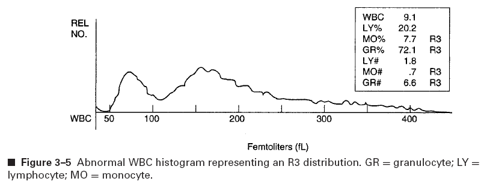

Clinical Hematology
including
Hemostasis/Coagulation, Immunohematology (Blood Banking)
Hemostasis and Coagulation
Platelets
Platelets formed megakaryocyte (cytoplasm) in marrow, are disk-shaped.
Count = 1.5 to 4.4 × 108/cm3 (150-400 million).
Wright's-stained blood film provides platelet number, size, and distribution
estimate. A hemocytometer or electronic cell counter can be used.
On the membrane surface is the glycocalyx with the following glycoproteins:
- Glycoprotein Ib is the von Willebrand's factor (vWF)+ristocetin complex
receptor.
- Glycoprotein IIb and Glycoprotein IIIa are receptors for
vWF and fibrinogen and unmasked by thrombin or ADP.
- Glycoprotein Va is a thrombin receptor
Microtubules form a submembranous ring around the cell circumference and support
the discoid shape. Contractile microfilaments (thrombosthenin) contain actin
and interact with the microtubule to achieve vesicular exocytosis. There is an
open canalicular system which has openings between extra- and intracellular
compartments. A dense tubular system forms a ring within the microtubules and
is involved in arachidonic acid metabolism and is a calcium-sequestering pump
for platelets to maintain cytoplasmic Ca concentrations. Mitochondria are
present for ATP production. Glycogen granules provide the substate.
Alpha (α) granules are involved in promoting contact and feature
platelet fibrinogen, PDGF, von Willebrand's factor (factor VIII:R),
β-thromboglobulin (BTG), platelet factor 4 (heparin-neutralizing), and
fibronectin. Dense granules contain ADP, ATP, calcium, and 5-hydroxytryptamine
(serotonin).
When subendothelial damage occurs, platelets (1) are activated, (2) undergo
shape transformation, and (3) form a sticky platelet aggregate to plug the
leak. The factors that cause platelet activation are collagen, fibronectin,
vWF (factor VIII:R), thrombin, and ADP. The tissue activators cause a
discoid→spherical shape change. In a calcium-dependent way, both dense
and α granules internally contract and then move to the center of the
platelet. vWF and fibrinogen interact with surface receptors releases Ca
into the cytoplasm, causing ATP generation, and assembly of actin into filaments.
Granules migrate to the center and release contents into the canalicular system.
Formation of the plug is mediate by thrombin and thromboxane A2
(TXA2). vWF and collagen interaction with platelet receptors mediates
formation of phospholipid A2, which is the precursor to arachidonic
acid, which is the precursor to TXA2 and other prostaglandins.
TXA2 inhbits adenylate cyclase (to stop cAMP formation) and causes
sequestered calcium to increase in the cytoplasm. Calcium mediates several
effects leading to granule content release and platelet aggregation. Thrombin
is the enzyme that mediates fibrin formation from fibrinogen, which stabilizes
the platelet plug.
Countering the platelet plug formation (1) blood flow to wash away
coagulation-promoting factors, (2) release of prostaglandin PGI2,
prostacyclin by the surrounding tissues. Note that components of the dense
granules (serotonin, prostaglandins (except TXA2, and lysozymes
cause local inflammation and vasodilation to increase blood flow.
Megakaryocytes have twice to 64 times the number of chromosomes in their
nucleus because of endomitosis, which is DNA replication without nuclear
or cell division. As cell maturation occurs, the differentiation occurs in
phases:
- CFU-Meg is the unipotential stem cell providing the colony.
- Megakaryoblasts show overlapping nuclear lobes with basophilic staining
and have sizes from 6 to 24 µm.
- Promegakaryocytes take on a large amount of cytoplasm and size (14-30
µm). The nucleus is more lobulated and has a horseshoe shape, and red-pink
granules are visible in the cell center
- Granular megakaryocytes show multiplication of the lobules of the
nucleus, a spreading of the pink granules throughout the cytoplasm (16-56 µm).
- The mature megakarycyte is from 20-50 µm with a now compact
nucleus and loss of cytoplasmic basophilia. Platelet fields are clusters
of pink granules in the cytoplasm; these are invaginations of the surface
membrane that separate the cytoplasm into the individual platelets, which are
actively produced and released into the marrow sinuses and eventually into the
circulation.
The mature cell produces from 2000 to 7000 platelets each ranging in size from
2-3 µm. From blast→platelet formation takes 5 days. The marrow
contains a population of 15 million megakaryoctyes at any time, and so a marrow
sampling (marrow smear) might have 5-10 megakaryocytes with a 10× objective
field. Platelets have an 8-10 day circulation life. Platelet numbers are
controlled by daily coagulation mechanisms or by filtering macrophages in the
liver and spleen. The spleen is a storage organ for platelets, containing about
a third of all circulating platelets; blood platelet counts will be higher in
asplenic patients and lower in patients with splenomegaly. Generally the
blood platelet count has mechanisms to keep it constant: should a person get
a platelet transfusion, the platelet count may dip in rebound
thrombocytopenia; if there is a depletion of platelets, then there may be
a spike increase in platelets (rebound thrombocytosis). Feedback stimulus
mechanisms will regulate megakaryoblast endomitosis and the proliferation of
the CFU-Meg.
Laboroatory testing includes:
- Counts: 150-440 million per milliliter
- bleeding time after forearm cut: 3-8 min
. Causes of increased bleeding
times include antiplatelet drugs (aspirin), von Willebrand's disease (vWD),
congenital platelet abnormalities, and thrombocytopenia (< 100 million/ml)
- platelet aggregtion with aggregometer: citrated platelet-rich
plasma stirred in aggregometer, then addition of coagulating stimulant
(ADP, collagen, epinephrine, ristocetin, A23187, arachidoinic acid,
γ-thrombin or partially trypsinized thrombin, then monitoring of the
shape transformation from discoid to spheroid by changes in light transmission
intensity
Quantitative Platlet Disorders
Platelet disorders can be classed as qualitative and quantitative.
The latter is changes in numbers (counts of platelets). Thrombocytopenia is
any count < 100,000/µl (or < 100 million/ml). Symptoms include
petechiae (small [1-2 mm] red an purple spots representing broken blood
capillaries), hemorrhages, prolonged bleeding times, and impaired clot
retraction. The lowered platelets generally indicated impaired marrow production.
Less than normal numbers of megakaryocytes might result from congenital
disorders (Fanconi's anemia, maternal infection); acquired disorders resulting
from radiation, alcohol, thiazide diuretics, chloramphenicol, cancer
chemotherapy; malignant cells in metastatic carcinoma, leukemia, lymphoma,
myeloma, and myelofibrosis displacing the marrow cells. Other causes might
be hereditary thrombocytopenia, vitamine B12 or folate deficiency
causing megaloblastic anemia), erythroleukemia (Di Guglielmo's syndrome)
and proximal nocturnal hemoglobinuria (PNH).
Numbers can be affected by disorders related with distribution and dilution:
splenic pooling accumulating large numbers of platelets (splenomegaly or
hypersplenism), hypothermia causing vascular shunting, and transfusion dilution.
Excessive platelet destruction can be a cause of thromocytopenia: snake
venom toxicity, tissue injury, obstetric-related complications (aborted
fetuses and pregnancy toxemia), neoplasms such as promyelocytic leukemia,
bacterial or viral infections, and intravascular hemolysis.
Thrombotic thrombocytopenia purpura (TTP) is the excessive deposition of
platelet aggregates in renal and cerebral vasculature and thought to be related
to endothelial cell dysfunction disrupting the basement membrane There is a
3:1 female:male incidence and average age is 35 years. Aside from thrombocytopenia,
there is microangiopathic hemolytic anemia, neurologic symptoms (headaches,
seizures), fever, and renal disease. Lab tests include (1) prothrombin time
(normal in 88% of patients), (2)activated partial thromboplastin time (aPTT)
normal in 94% of patients, and (3) fibrinogen normal in 79%. Fibrin-degradation
products (FDP) are normal in 53%, weakly positive in 23%, and positive in 24%.
Increases in a platelet aggregating factor, possible deficiency of a aggregating-factor
inhibitor, decreases in prostacyclin PGI2, increases in PGI2
degradation, or absence of a plasminogen activator may explain the pathophysiology.
Other causes of excessive isolated platelet consumption can be hemolytic uremic
syndrome, vasculitis (secondary to system lupus erythematosus [SLE]),
and disseminated intravascular coagulation (DIC).
Low platelet numbers can also be caused by autoimmune destruction:
idiopathic (immunologic) thrombocytopenia purpura (ITP) which can be
acute or chronic.
The acute type is seen in children (2-5 y) with a sudden onset, often after
viral infections (rubella, chickenpox, CMV, toxoplasmosis) and lasts 2-6 weeks
with spontaneous remission in 8 in 10 patients. The immune reaction is because
platelet membrane proteins are altered to induce platelet autoantibodies.
Platelet counts can be < 20,000/µl. Corticosteroids are used as
therapy as they reduce macrophage phagocytic activity and Fc-receptor
function. Splenectomy is not usually required and platelet transfusion is not
effective.
The chronic type is seen in adults 20-40 y with a female:male 3:1 ratio.
There is a slow often asymptomatic onset, and the duration is months to years.
Platelets counts are 30,000-80,000/µl. It is associated with SLE and
therapy is splenectomy and immunosuppressive therapy with vincristine and
vinblastine.
A posttransfusion purpura some times occurs in 1-2% of patients getting
blood transfusions and this too is related to antiplatelet antibodies forming.
Isoimmune neonatal purpura is a condition related to material viremia
(CMV, rubella) or material drug use.
Drug-induced autoantibody might be seen with heparin and quinidine in which
they combine in ways with serum proteins as haptens to induce immune response.
The complex can attach to platelets (these are not anti-platelet antibodies though)
inducing agglutination, complement fixation, and destruction via macrophages.
Other sources of thrombocytopenia include alcoholism and lymphoproliferative
disorders.
Heparin therapy can cause platelet reduction in 1 in 10 patients receiving it.
These cases balance risk of thrombosis w/o therapy against hemorrhaging from
thrombocytopenia. Heparin has an unexpected direct aggregating effect as well
as antiplatelet Igs causing the platelet loss. Diagnosis is made by an
aggregometer showing an increase in aggregation with heparin addition rather
than no change.
HIV-associated thrombocytopenia is also observed, although it is severe but
not hemorraghic. There are similar characteristics to ITP with abundant
megakaryocytes, occasional giant platelets, absence of splenomegaly, and it
has an immune origin. Differences are greater levels of bound antibody and
there are immune complexes involved.
Thrombocytosis disorders are relatively rarities compared do thrombocytopenia.
A thrombocytosis is any platelet count > 450,000/µl. Essential
thrombocytosis is likely a marrow-related problem in which there is an
abnormal clonal proliferation affecting the platelet stem and progenitor cell
lines and the loss of auto-regulation. Patients with Hodgkin's lymphoma,
polycythemia vera, myelofibrosis, chronic myelogenous leukemia, and
thrombocythemia will show elevated counts. Secondary thrombocytosis is
an occurrence because of other factors: iron-deficiency anemia connected with
chronic blood loss, chronic inflammatory disease, splenectomy resulting is
expected increases, and rebound episodes caused by massive blood loss.
Qualitative platelet abnormalities
The qualitative abnormalities will be of four types related to platelet
ultrastructure: surface membrane defects, granular fraction abormalities,
thromboxane physiology related problems, and disorders in the platelet
which are secondary to other conditions.
Surface Membrane Problems
These are often related to genetic problems.
Glanzmann thrombasthenia is a homozygous autosomal recessive disorder
in which one of two genes coding for either the membrane receptor
glycoprotein IIb (GPIIb) or for GPIIIa is affected. Both genes are found on
chromosome 17. These receptors are required to anchor platelets
to exposed collagen in subendothelial tissue of damaged blood vessel walls
during aggregation. Dimer complex formation does not occur and there is no
aggregation (platelet-platelet binding). Glanzmann is seen in infants and
early childhood as bruising (purpura), nose bleeds, bleeding from gums
started by trauma or simple sneezing, crying, coughing, or the eruption of tooth.
Female adolescents may experience heavy menorrhagia when they begin
their cycle. Severity of bleeding events lessens with age. Lab tests
results will show normal platelet count + morphology,significantly prolonged
bleeding time,aggregation failure in aggregometer with all agents (i.e., ADP,
adrenaline, thrombin, collagen) except von Willebrand factor. There are
differnt types of Glanzmann's: Type I is a severe deficiency of <5% of
glycoprotein complex; Type II is considered mild to moderate deficiency
with 5-20% complex remaining; clinical Type III is found to be a qualitative
dysfunction. Glanzmann requires lifelong treatment but has a low death rate
wtih modern care; bone marrow transplants are curative. Bleeding episode
treatments include platelet transfusion or local use of thrombin and epinephrine.
Bernard-Soulier syndrome (BSS) is an inherited quantitative or qualitative
defect in the platelet glycoprotein (GP)Ib/IX complex, which consists of four
platelet surface glycoproteins (Ibα, Ibβ,
IX, and V). GP-Ibα is on short arm of chromosome 17;
GP-Ibβ is on long arm of chromosome 22; both GP-IX and
GP-V genes are on long arm of chromosome 3. The Ib molecules have high- and
moderate-affinity receptor sites for thrombin. The (GP)Ib/IX complex mediates
adhesion of platelets to the blood vessel wall at sites of injury by binding
vWF and facilitates the ability of thrombin to activate platelets. BSS occurs
in only < 1 person per 1 million (very rare). Clinical symptoms can present
early in life and most commonly include frequent bouts of epistaxis (nosebleed),
gingival and cutaneous bleeding, and hemorrhage associated with trauma.
Lab results show slightly (8-10 min) to significantly prolonged (> 20 min)
Ivy bleeding time , giant platelets (high MPV), thrombocytopenia (<
30,000/µl); aggregometer is normal with ristocetin but not other agonists.
There are three types of BSS. Normally the GP-Ib is a heterodimer composed of
one α and one β polypeptide with interchain disulfides, and when
associated noncovalently with glycoprotein IX and V, the complete vWF receptor
complex is formed. Gene GP1BA encodes the 140 kDa GP-Ibα chain.
GP-Ibα directly binds to cytoplasmic proteins involved with
platelet cytoskeleton, and defects (Type A BSS) create problems in complex
formation for vWF binding. GP1BB codes for the 22 kDa GP-Ibβ
polypeptide which interacts with cytoskeletal protein via a phosphorylated
intracellular domain, and defects (Type B BSS) lead inability to interact with
vWF. GP9 is the gene encoding GP-IX (CD42a) and it interfaces 1:1 with
GP-Ib complex, and defects in GP-IX causes Type C BSS. Cases of acquired BSS
have been described rarely in patients with myelodysplasia and acute
myelogenous leukemia (M6). Treatment limited to support of acute bleeding episodes:
edducation of patient/family about unnecessary risks, antiplatelet medication
such as aspirin or a nonsteroidal anti-inflammatory, adequate
dental hygiene; iron-deficiency anemia often develops from chronic bleeding;
splenectomy may lessen severity; occasionally transfusion of blood &
platelets to control hemorrhage and thrombocytopenia in trauma.
BSS may be an ideal candidate for gene or cytotherapy.
Note the table below for how to ascertain disorders related to platelet
membrane physiology.
Differential Diagnosis of Glanzmann's Thrombasthenia
and Bernard-Soulier Syndrome
| Disorder
| Bleeding Time
| Platelet Count
| mean platelet volume (MPV)
| Aggregation Pattern
| Comment
|
|---|
| Glanzmann's Thrombasthenia
| increased | normal | normal
| failure of normal aggregation pattern except ristocetin
| chronic bleeding of mucous membranes
distinguished from BSS on aggregometer results
|
| Bernard-Soulier Syndrome
| increased | decreased | increased
| normal aggregation with all agents except ristocetin
| chronic bleeding of mucous membranes
giant platelets
distinguished from Glanzman's from aggregometer results
|
| vWD
| increased | normal to decreased | rormal
| normal aggregation with all agents except ristocetin
| adding vWF to aggregometer induces aggregation, but not in case of BSS
|
| ITP
| normal to increased | decreased | increased | normal
| like BSS, shows giant platelets, but will respond to steroids and
splenectomy while BSS will not
|
Abnormalities In Granular Fraction
Both the dense and α granules show defects.
Dense granules contain ADP, ATP, serotonin, and calcium.
The Hermansky-Pudlak syndrome (HPS) is caused by an autosomal recessive
trait whose loci is the HPS1 gene on chromosome 10q23. The gene controls
functions involved in the production and control of melanosomes, platelet dense
bodies, and lysosomes resulting in a defect in platelet ADP release and a
disruption in the ADP/ATP ratio granular content. A three-trait phenotype of (1)
albinism, (2) prolonged bleeding time, and (2) the accumulation of ceroid
pigment in lysosomal organelles is observed. Symptoms includev visual
impairment, pulmonary fibrosis, inflammatory bowel disorder, and kidney disease.
The variant of albinism in HPS is a tyrosinase-positive form, with varied
amounts of pigmentation. Some patients may have very light hair and frail
features, whereas others may have dark hair and possess ocular albinism. Organ
dysfunction is due to accumulation of ceroid pigment in lysosomal organelles.
Often the lungs are affected leading to pulmonary fibrosis due to remaining
scar tissue. Easy bruising, frequent nose bleeds, prolonged wound bleeding,
heavy menstrual bleeding in females, and excessive bleeding with dental
procedures is common. Look for increased bleeding time test may be the first
clue to differential diagnosis. Platelet aggregation tests should reveal an
atypical response in the second wave of aggregation. Definitive diagnosis is by
electron microscopy of platelet smear to reveal an absence of dense granules.
Chediak-Higashi syndrome (CHS) is a generalized autosomal recessive
genetic disorder with recurrent infections in combination with ocular,
neurological, and skin manifestations. Onset in early childhood and death often
occurs before the age of 7. It is caused by mutations in the lysosomal
trafficking regulator gene (LYST) found on chromosome 1. Platelets show
abnormal membrane fluidity, uncontrolled granule membrane fusion, and formation
of giant cytoplasmic granules, and a lack of distinguishable dense granules in
leukocytes, melanocytes, and platelets. Overt systems aree decreased (i.e.,
partial) pigmentation of the hair and eyes, photophobia, nystagmus (involuntary
eyeball motion), abnormal susceptibility to infection, defective chemotaxis,
degranulation, and bactericidal activity of neutrophils, decreased dense
granule ADP and increased ATP:ADP ratio. In adulthood CHS will show
neurological manifestations involving motor, sensory, and cranial nerve
defects. Lab testing should include CBC+platelet possibly showing WBC of
2000-15,000/µl and neutropenia and normal platelet count;
Wright's stained blood smear with leukocytes showin darkly stained giant
granulation, bleeding time being prolonged, platelet aggregation being decreased
in response to ADP and collagen, coagulation screening being normal; large,
eosinophilic peroxidase-positive inclusion bodies in myeloblasts and promyelocytes
in marrow; ATP:ADP ratio. For chronic stable CHS, high doses of vitamin C
help phagocytic function, while accelerated phase treatment might benefit from
corticosterids, vincristine, and cyclophosphamide to stop lymphohistiocytic
infiltration of secondary lymphoid tissues but is not usually successful in
arresting disease progression. Bone marrow transplanation has been successufl
in some of the reversal of the accelerated phase of CHS.
Wiskott-Aldrich syndrome (WAS) is rare X-linked immunodeficiency
disorder highlighted by thrombocytopenia, eczema, recurrent infections,
predisposition for secondary leukemia or lymphoma; caused by deletion of a
specific gene on the X chromosome called the WAS protein gene (WASp).
Gene expression is limited to cells of hematopoietic lineage. Function of
WASp is possibly as a bridge between signaling and movement of the
actin filaments in the cytoskeleton of hematopoietic cells such as platelets
and lymphocytes. Gene deletion causes immunodeficiency (commonly including
IgM deficiency) resulting from low production of B and T lymphocytes. Young
men affected are thus susceptible to infections from microbial forms because
both lymphocyte types affected: ear infections, meningitis, and pneumonia are
common. Suspected WAS made on the basis of patient age and sex and
the demonstration of a thrombocytopenia, a weak antibody response
to certain specific polysaccharide antigens, and weak level of platelet
aggregation response. Other manifestations are localized hemorrhage, eczema,
proneness to infection and bloody diarrhea. Lab tests: serum Igs to look for
low IgM and normal IgG; CBC with cytoflow and do manual differential to look
lymphocyte counts and platlet size with mean MPV of 3.8-5.0 fl compared to a
normal of 7.1 to 10.5 fl; flow cytometry showing normal B cell poppulation
but deficient T cell, and a weak CD43 response and low CD8 count. Prognosis
is poor with death before age 10 due to infection, malignancy and bleeding.
Treatment is supportive: antibiotics for infections, immune globulin to
strengthen patient immunity; splenectomy if thrombocytopenia is severe; bone
marrow transplant from compatible sibling.
α-Granule deficiencies are rare platelet functional abnormalities
in which both aggregation and release properties are diminished.
Storage pool disease (Grey platelet syndrome (GPS)) is autosomal
dominant showing thrombocytopenia and aggregation abnormalities.
Signs are typically mild: mild epistaxis, easy bruising, long-lasting
hemorrhages after accidental cuts. Marked decrease or absence of platelet
α-granules and specific α-granule proteins. Morphologically,
platelets appear large, contain few granules: they have gray appearance
with Wright-Giemsa-stained blood smears. Elevated mean ATP/ADP = 3.8
(normal = 1.6); serotonin decreased. Aggregation test shows impaired response
to ADP, collagen, or epinephrine; thrombin and arachidonic acid normal.
Laboratory diagnosis typically reveals a decreased platelet count with
low MPV and abnormal aggregation results as described previously.
Other diagnostic criteria include an increased bleeding time.
Diagnosis confirmed by TEM showingl ack or decrease of α-granules.
Mepacrine staining of platelets (α granules take up the green dye)
followed by flow cytometry can determine whether there is granule deficiency.
GPS not life-threatening but occasional platelet transfusion might be necessary
for episodic chronic thrombocytopenia.
Deficiencies of Thromboxane Generation
Caused by genetic deficiency of cyclo-oxygenase: platelet aggregation
unresponsive to arachidonic acid as stimulator; secretion of granular content
depends on activation of several phospholipases to produce arachidonic acid (AA).
AA converted to intermediate prostaglandins by cyclooxygenase. Thromboxane
synthetase converts these to thromboxane A2 (TXA2),
which stimulates cascade resulting in secretion and aggregation by increasing
cytoplasmic calcium. Cyclo-oxygenase deficiency incidence is rare: ony two
cases (families) have ever been reported. Several acquired or genetic disorders
of platelet secretion are traced to (1) structural and functional modifications
of arachidonic acid pathway enzymes, (2) dysfunction or deficiency of
thromboxane receptors. Aspirin and ibuprofen inhibits arachidonic acid pathway
enzymes. Without cyclooxygenase, secretion and secondary aggregation do not
occur: platelet aggregation is similar to storage pool disease, but can be
distinguished from latteru by ltrastructure of granules, as granule count and
appearance normal with cyclo-oxygenase disorder. Lab work: platelet count
normal, bleeding time increased; primary aggregation is normal; platelet
aggregation tests unresponsive to arachidonic acid, ADP, and collagen in
secondary aggregation stage. Prognosis not life-threatening; easy to manage;
individuals present with mild bleeding disorder; caution to avoid antiplatelet
drugs; females control menorrhagia with hormonal therapy
Secondary Effects: Acquired Disorders of Platelet Function
These are secondary to other conditions.
Cardiopulmonary Bypass Operations. Results in thrombocytopenia and
platelet function defects caused by depletion of α-granules. Bypass
operation induces platelet activation and fragmentation in the bypass
mechanical process. Bleeding time can increase to > 30 min. Granule
depletion can result from (1) platelet aggregation caused by fibrinogen
adsorbing to surfaces of bypass material, (2) hypothermia, (3) complement
activation, (4) mechanical trauma and shear stresses, (5) bypass pump-priming
solutions. Platelet fragments commonly found in bypass patients blood. In
uncomplicated bypass, platelet function returns in 1-3 h post-surgery; platelet
count takes several days as marrow is stimulated. Thrombocytopenia can also be
amplified by hemodilution caused by blood passing through bypass mechanism and
by damaged platelet removal functions of liver and spleen.
Disseminated Intravascular Coagulation (DIC). This is deposition of
large amounts of fibrin throughout the microcirculation; results in
pathological activation of platelet aggregation and coagulation pathways. DIC
is consumption coagulopathy: causes depletion of platelets and plasma
coagulation factors. Plasminogen activated on wide scale to plasmin, resulting
in increase in fibrin degradation products (FDP) in plasma. Extrinsic system
activation by large amounts of tissue factor entering the circulation; can
result from hypofibrinogenemic states of pregnancy, metastatic carcinoma, or
promyelocytic leukemia. Intrinsic system activation results from damage or
changes to vascular endothelium exposing collagen (e.g., infectious diseases,
antigen-antibody complexes, liver disease, snake venom poisoning, massive
trauma, or surgery). Lab testing should reveal thrombocytopenia, prolonged
coagulation screening tests, elevated FDP or D-dimer, decreased plasma
fibrinogen.
Lupus-like anticoagulant (LLA). Occurs in (1) 10-20% of SLE patients,
(2) significant number of patients on phenothiazine, (3) occasionally in
lymphoproliferative disorders. These are autoantibodies to phospholipid
portion of phospholipoprotein components forming platelet
membrane surface, as well as to the laboratory reagent used to perform the
aPTT. Patients sometimes have mild thrombocytopenia
and functional defect of granular release.
Clinical bleeding only found with high titers of LLA. A slightly prolonged
aPTT is seen, but testing factors will be normal (not deficient).
Heparin Use. An induced but transient thrombocytopenia
occurs in significant number of patients
who receive heparin. Mechanism postulated to be direct platelet
aggregating effect plus immune destruction by antiplatelet antibodies.
Sequestration by the spleen is also a factor. Lab results: abnormal PT and aPTT
time; low platelet count; prolonged bleeding time; positive antiheparin antibody;
normal aggregation pattern in aggregometer studies, except
adding heparin will increase rather than blunt aggregation. Therapy is
to discontinue or alter heparin use.
Uremia. Uremia usually results from kidney failure (hemolytic-uremic
syndrome): this leads to problems with prostacyclin & decreased
TXA2 production. Platelet function abnormality as a qualitative
defect is most common finding; defect is extrinsic and proportional to
metabolite buildup: most damaging metabolites to platelet function thought to
be urea, guanidinosuccinic acid, phenolic acid. Endothelial cells
show increase in prostacyclin-like activity. BUN levels directly and bleeding time
inversely proportional to hematocrit. Lab results show prolonged bleeding time
and PT; platelet retention and aggregation studies with ADP, collagen,
epinephrine, ristocetin are abnormal.
Drug-induced platelet abnormalities. The most common cause of acquired
platelet dysfunction. Functional inhibition by drugs that affect prostaglandin
production (aspirin) or by drugs affecting membrane function. Some chemicals
themselves alter bleeding time or platelet aggregation. Common inhibitors:
aspirin, alcohol, certain antibiotic agents (penicillins, cephalosporins).
Aspirin can cause irreversible inactivation of the cyclooxygenase enzyme
(decreases TXA2 formation); NSAIDS (ibuprofen) have same effect.
Chronic alcoholism might lead to platelet dysfunction by multiple mechanisms:
inhibited prostaglandin synthesis, change in storage pool of ADP/ATP or
platelet membrane stabilization. Antibiotics may decrease aggregation response
with ADP in the primary or secondary wave of aggregation. Lab results show
increase in the bleeding time; platelet aggregation shows abnormal response to
ADP, collagen, and epinephrine. Therapy involves discontinuing the inducing
drugs.
Blood Coagulation
Initiating reactions (contact activation)
The intrinsic system. Path of coagulation cascade in which
prekallikrein, heavy-molecular-weight kininogen (HMWK), and factors XII, XI,
X, IX, VIII, V, II, and I are involved in the formation of a fibrin clot.
The aPTT tests this coagulation cascade.
Initiation starts with activation of factor
XII (Hageman factor): vascular damage exposes anionically charged
subendothelial tissue. Factor XII in zymogen form binds to negatively charged
endothelial surface of the damaged blood vessel; binding alters fXII to expose
active site serine protease and becomes fXIIa (activated). This leads to
multiple reactions:
- prekallikrein —fXIIaF + HMWK→ kallikrein → bradykinin
- bradykinin: increased vasodilatation and vessel permeability (fenestration).
- plasminogen —fXIIa→ plasmin (for clot dissolution)
- fXI (plasma thromboplastin antecedent) —fXIIa→ fXIa (serine protease)
The extrinsic system. Lipoprotein Tissue factor (Factor III, fIII) +
Ca2+ leads to conversion of Factor VII (proconvertin) to fVIIa,
facilitated by vitamin K and thrombin. fVII → fVIIa activation can also
occur via fXIIa, fXa, fIXa, and thrombin, but these all minor. Lab testing:
add lipoprotein-rich extracts to citrated plasma as PT reagent, which mediates
fVII → fVIIa by fIII.
Intermediate reactions
.
The two pathways join here (Common Pathway).
- Factor IX (Christmas factor) —fXIa + VitK→ fIXa
- Factor VIII:C (Anti-hemolytic factor) + Factor VIII:R (von Willebrand's
factor) → fVIII complex
- Extrinsic: Factor X (Stuart-Prower factor) —fVIIa + VitK→ fXa
Intrinsic: fX —fIXa + VitK + Ca2+ + fVIII:C +
phospholipid platelet membrane surface→ fXa
- Prothrombin (Factor II) —fXa→ thrombin
- Factor V (proaccelerin) —thrombin→ fVa
- Prothrombin —fXa + fVa + phospholipid membrane surface + Ca2+→
thrombin
fVIII:C (antihemolytic factor). Made in liver, encoded on X chromosome;
the defective gene causes hemophilia A; main function is to accelerate fIX
→ fIXa reaction by 500-1000-fold. Is itself actviated by thrombin.
fVIII:R (vWF). Produced by endothelial cells, megakaryocytes, and platelets
coded by autosomal gene. vWF supports platelet adhesion to subendothelial
surface. vWF activation occurs by (1) release of platelet aggregators from
damaged subendothelial tissus and (2) release of α graunules.
fVIII:R deficiency seen as von Willebrand's disease (vWD).
Factor VIIa in the extrinsic pathway enzymatically alters factor X to yield
Xa in the presence of factor III. Factor VIIa has limited ability to activate
the conversion of IX to its activated form (IXa).
Intrinsic system lab testing: add phospholipid extracts to citrated plasma in
aPTT.
Fibrin Clot Formation
Last step in coagulation cascade.
- Fibrinogen (Factor I) —fIIa (thrombin)→ fibrin monomer
- Fibrin stabilizing factor (Factor XIII) —fIIa (thrombin)→ fXIIIa
- Fibrin monomers —fXIIIa + Ca2+→ fibrin polymer
- Platelets —fIIa (thrombin)→ aggregation
- fV and fVIII:C —fIIa (thrombin)→ active forms
- fVII —fIIa (thrombin)→ weak activation to fVIIa
Fibrinogen plasma concentration normally ranges of 150 to 400 mg/dl. Is a
homodimer with three-domain monomer. Fibrinogen "monomer" is really a homodimer.
Three domains exist in the molecule: two D regions from the carboxyl terminals,
and a central E domain on the N-terminal ends.
Thrombin removes the Fibrinopeptides Aα and Bβ on the N-terminal
E domains. This exposes sites for D domain interaction to form largely
electrostatic D:E binding into a polymer. fXIIIa then participates in
causing covalent crosslinking between adjacent fibrin polymer fibrils. Additionally
fXIIIa covalently links α2-antiplasmin to fibrin to help resist
fibrinolysis by plasmin.
The following factors are Vit K-dependent:
- fII
- fVII
- fIX
- fX
- protein S
- PC
Vitamin K is reduced from an epoxide form to work, and coumarin is an anticoagulant
that inhibits Vit K action (only in vivo, not in vitro). All factors are rendered inactive.
fVII is the most sensitive to coumarin (has shortest half-life), and PT is
best for screening before beginning therapy.
Antithrombin III (AT-III) is the principal thrombin inhibitor and fXa, but
also has limited inhibitory activity of fIXa, fXIa, and fXIIa. There is a
1:1 binding of AT-III with thrombin. The presence of heparin increases rate
by 2000-fold. Another minor thrombin inhibitor is
α2-macroglobulin. Complement C1 inhibitor is
a minor inhibitor of fXIa and fXIIa. Thrombin, kallikrein, and fXIa are
inhibited in limited way by α1-antitrypsin. PC circulates
as an inactive zymogen: it is activated by thrombin as part of thrombomodulin
platelet receptor complex and it works to inactivate fVIII:c and fVa in the
presence of PS (protein S). PS also depends on VitK, enhances binding of PC
to phospholipid surface and increase fVa, and fVIIIa inactivation.
Lab Testing
Sample should be citrated blood (9:1 blood:citrate). High hematocrit or
traumatic blood draw and any hemolysis will affect results. EDTA contamination
increases PT and aPTT falsely. Specimens should be kept chilled until assay
(factor degradation).
Prothrombin Time. Tests for extrinsic pathway deficiencies in fVIII, fX,
fV, fII, and fI. The reagents are lipoprotein (tissue extract from brain or
lung) with calcium, and citrated plasma is added and fibrin clot formation time
measured. Laboratories establish their own normal reference range, but 11-13
seconds is usual. Stypven (Russell's viper venom) will activate
fX directly, bypassing fVII, and will produce the Stypven time.
INR is the international normalized ratio and reflects the PT
as if tested using WHO international reference prep of thromboplastin. The
INR is important for patients on oral coumarin. It is calculated as:
INR = [Patient PT ÷ Mean normal PT]ISI
where the ISI is the international sensitivity index and a value
provided for the thromboplastin reagent by the manufacturer and is a function
of reagent purity. An ISI = 1.0 has a purity identical to the WHO
thromboplastin IRP. INR values of 2.0-3.0 are the target for standard coumarin
therapy; values ranging from 2.5-3.5 is a target for high dose coumarin therapy
for mechanical heart valves. Any value > 3.5 should be considered abnormal
(panic) value and reported immediately.
Activated Partial Thromboplastin Time (aPTT) tests the intrinsic pathway
deficiencies in prekallikrein, HMWK, fXII, fXI, fIX, fX, fVIII, fV, fII, and fI.
To substitute for the required platelet membrane, a phospholipid-rich prep is
used. As an activator, either kaolin, ellagic acid, or celite is added: this is
an anionic surface to activate fXII and prekallikrein. Citrated plasma is first
incubated with phospholipid, then CaCl2 added to initiate cascade.
Fibrin clot formation time is measured. The approximate normal range is 25-40 s
(labs must establish own range).
Thrombin clotting time (TCT) tests for either deficiency or inhibition of
fibrinogen. A thrombin reagent is added to the citrated plasma and time for
clot formation measured. Range is normally 10-20 s (labs establish own range).
Prolonged times are seen with heparin therapy, patients with high FDP, and any
disorder causing hypofibrinogenemia.
Quantitative Fibrinogen. A standard curve of varying fibrinogen is
constructed and a fixed amount of thrombin added. The same amount of thrombin
is added to the unknowns. The time of clotting is compared to the standards
to determine fibrinogen concentration (mg/dl). The normal range will be
200-400 mg/dl.
Substitution Tests. When the PT and aPTT are abnormally prolonged and
show a factor deficiency, tests can be repeated by dilution of patient plasma
with a plasma or serum substitute at a 1:1, and then repeating. These
substitute solutions will vary.
- Aged plasma will be deficient in fV and fVIII, which are labile. All other
factors should be normal.
- Normal plasma should have all factors
- Fresh absorbed plasma will lack Vitamin K-dependent factors: fII, fVII,
fIX, and fX, but have all others
- Aged serum lacks fI, fII, fV, and fVIII, while all others are normal
Specific factor assays using test plasma with known factor deficiencies and
titrated against patient plasma are done. ELISA assays also exist to assess
factor concentrations and presence. Some assays are enzymatic assays for
chromogenic or flourogenic products, using special substrates for the factors
that are serine proteases usually.
Substitution Testing with Mixing Studies
| Extrinsic Pathway PT
| Intrinsic Pathway aPPT
| Factor-Deficient Plasma or Serum
|
|---|
| Normal Plasma | Adsorbed Plasma | Aged Serum
|
|---|
| I | I | + | + | (−)
|
| II | II | + | (−) | (−)
|
| V | V | + | + | (−)
|
| VII | | + | (−) | +
|
| | VIII | + | + | (−)
|
| | IX | + | (−) | +
|
| X | X | + | (−) | +
|
| | XI | + | + | +
|
| | XII | + | + | +
|
|
By using the PT and APTT screening tests and mixing patient plasma samples with
known factor deficient plasma, the majority of coagulation factor deficiencies
can be determined. Each factor deficiency will result in a specific testing
pattern.
|
Activated Clotting Time (ACT). This test is for monitoring heparin
therapy and modifies the whole blood clotting time test. While whole blood is
mixed, a particulate clot activator is added in either a manual test or
automated ACT instrument such as Hemochron. The test normally takes 98-100 s
without anticoagulant therapy, but takes 180-240 s when heparin is used in deep
vein thrombosis. Cardiopulmonary bypass patients may show ACT values of about
400 s. ACT is better than aPTT for high dose heparin therapy.
Reptilase. A modification of TCT, reptilase (Bothrops atrox)
catalyzes fibrinogen → fibrin as a thrombin analogue, cleaving off
fibrinopeptide A. A prolonged reptilase time indicates functional fibrinogen
problem. Since thrombin is sensitive to heparin, and reptilase is not, the RT
will check dys- or hypofibrinogenemia. RT is prolonged in FSP presence.
fXIII screening. Activated by thromin, it leads to clot stabilization
by causing fibrin crosslinking. Fibrin clots are insoluble in 5 M urea if
crosslinking is occurring. Allow the clot to sit for 24 h. Add 5 M urea:
if it dissolves in 2 h, then there if fXIII deficiency.
Lupus-like anticoagulant (antiphospholipid antibodies). In 10-20% of
SLE patients, or those taking phenothiazine, and occasionally in cases of
lymphoproliferative disorders, the lupus-like anticoagulant develops. These
are autoantibodies of the IgG type, but occasionally IgM. They target the
phosphpolipid part of phosopholipoprotein component in aPTT reagent.
Mild thrombocytopenia is occasional, and clinical bleeding with LLA is
found only with high titers of anticoagulant. A slightly prolonged aPTT
with normal PT and TT are indicators; the aPTT is not corrected with 1:1
dilution of patient and normal plasma for factor testing. Increasing prolonged
times are directly proporttional to extended incubation time with aPTT reagent.
All other factor deficiency testing is normal.
Factor Deficiency Assays. The fVIII assay using the aPTT is most common.
Dilution with normal plasma controls will correct the aPTT. When aPTT remains
prolonged by mixing a factor-deficient control, then the factor is determined.
By comparing a previously prepared reference curve of 1:10
patient plasma in factor-depleted control, one gets the percent activity of
factor in patient plasma: the reference curve is made using five or more
dilutions of factor-depleted plasm with normal coagulation control and the
plotting clotting against percent activity of factor.
Point-of-care testing (PCT) allows bedside determinations of PT, aPTT,
TCT, and ACT. The Hemochron Portable Blood Coagulation Timing System is an
automated device allowing that determination. In these systems, the PT test
uses containers with thromoboplast and magnetic stir bar. For the aPTT,
diatomaceous earth activtor, partial thromboplastin, buffer, CaCl2
and magnetized stir bar. For the TCT, thrombin, buffer, CaCl2
and stir bar. 2.0 ml whole blood is collecgted in reaction tube and timer starts
when put into reaction well. Because whole blood is used and not merely plasma,
the manufacturer provides conversion tables for plasma tests.
Fibrinolysis
Fibrinolysis is performed by the key enzyme plasmin to breakdown the fibrin
network to FDP. Plasmin is activated by proteolytic cleavage of circulating
plasminogen in one of two ways:
- In an extrinsic pathway activation there is a tissue proteolytic enzyme
and fibrin as cofactor: urokinase (a thrombolytic therapeutic) is used.
The protein streptokinase is also a thrombolytic.
- In the intrinsic pathway activation, fXIIa, kallikrein, or HWMK is invovled.
Fibrinolysis first involves fomation of Fragment X which is basically the
fibrin monomer with one E domain and two D domains and which has clotting
properties. Fragment X is then broken down the the FDP comoponents:
- Fragment Y being one E and one D domain
- Fragment E being just the E domain
- Fragment D being just the D domain
- D dimer which is two D fragments of linked monomers
FDPs have anticoagulating effects as they inhibit competitively fibrin polymerization
by binding thrombin, and they prolong the TT test.
Plasmin will degrade fibrinogen, inactivate fVIII:C and fV, and have an
anti-aggregation effect on platelets. α2-plasmin inhibitor
(or antiplasmin) will form a 1:1 complex with plasmin and prevent plasmin
activity; this antiplasmin is bound to fibrin by fXIIIa. Additionally
α2-macroglobulin will have weak antiplasmin activity.
Lab testing for fibrinolysis includes the followiing.
- Latex agglutination measures FDPs in patient serum. An
ti-fibrinogen-coated latex is used on serum (not plasma) and will bind FDPs.
- Both plasminogen and α2-antiplasmin can be measured
serologically or using specific colorimetric tests.
- D dimer test is a specific test using a mAb against covalently
crosslinked D fragments from fibrinolysis. This test differs from the standard
FDP test, and is superior in sensitivity and specificity (sensitivity is
20 ng/ml compared with 10 µg/ml with latex FDP). Note that the FDP
can be run on plasma and eliminate the risk of false positives.
- Prothrombin Fragment 1.2 (F-1.2) is the test for the fragment
generated with fIIa action on the prothrombin → thrombin conversion and
is marker for thrombin generation and fXa activity. Levels are elevated for
thrombotic risk and depressed with anticoagulant therapy.
- Euglobulin Lysis Time. Euglobulin is fibrinogen, plasminogen,
and plasminogen activators. It can be precipitated in 1% acetic acid and
resolubilized in borate buffer. It can be clotted when 5 U/ml thrombin is added:
after that, a time of lysis is measured. If clot lysis < 2 hours, this
is abnormal fibrinolytic activity, which indicates a hypofibrinogenemia state.
If the ELT is > 4 hours, the either low levels of plasminogen or activators
are the condition.
- Protein C (PC, Protein S (PS), Antithrombin-III (AT-III). Both
colorimetric and immunoassays can specifically detect these components.
With the colorimetric patient plasma is mixed with venom to activate PC, and
then the chromogenic substrate. The immunoassay uses a rabbit antihuman PC-coated
microtiter plate to capture PC in added plasma sample, and this is sandwiched
to an HRP-anti-PC antibody. PS is measured similarly. For the AT-III assays,
the colorimetric requires a heparin activator, and activated AT-III binds with
a serine protease like fX, and this is coupled to peroxidase reaction.
- Activated Protein-C Resistance (APCR) is the inability of activated
PC to prolong clotting when added to the aPTT. This is characteristic of
gene-based thrombotic disorders such as factor V Leiden. Activated PC
added to normal test plasma should inactivate fVIII and fV and thus prolong
the aPTT. When there is diminished ability to inactivate fV, there is resistance
to activated PC when it is added to sample. The test is done by preincubating
aPTT to two aliquots patient plasma, then adding CaCl2 the measuring
clot time to the first aliquot; to the 2nd aliquot CaCl2 and activated
PC is added. The aliquote w/o activated PC should be >2× clotting time
of aliquot with activated PC where there is no resistance. If patient has
resistance to PC inactivation of fV, 2nd aliquot of aPTT has shorter time and is
<2× clotting time w/o activated PC.
Summary. Coagulation and platelet aggregation are initiated by exposure
of subendothelial matrix collagen directly and by the release of vWF
from underlying cells. Platelets become activated by these factors, and
activated platelets release platelet factor 4 (PF4) which inactivate
heparin-like compounds secreted by mast cells which sit in subendothelium.
Prostanglandin I2 (PGI2) is released by endothelial
cells in damaged areas: this inhibits platelet aggregation and limits the
spread of thrombus. A thrombomodulin receptor in endothelial cells exists
to provide the ability of fXa to convert prothrombin to thrombin.
Platelet-derived growth factor (PDGF) is released from platelet granules
and stimulates proliferation and migration of smooth muscle cells, endothelium
and fibroblasts to do wound healing. When a wound (laceration) occurs more
deeply, smooth muscle cells provide enhanced coagulation: tissue fIII starts
extrinsic pathway and Hageman fXIIa activation starts intrinsic pathway;
in addition PGI2 limits and localizes the clotting. In capillaries
clotting is by the extrinsic pathway and platelet aggregation since there is
no smooth muscle (and very little in veins).
Coagulation Disorders
The figure for the coagulation disorder algorithm explains how to assess what
the disorder is.
Disorders related to fibrinogen
Hereditary Disorders. These disorders are related either to qualitative
(genetic) or quantitative (genetic or acquired) abnormalities in fibrinogen or
in fXIII, used to stabilize (by transglutaminase crosslinking) the fibrin
linear polymer. Most disorders show prolonged aPTT, PT, and TT.
Afibrinogemia is a quantitative disorder that may point to a liver
dysfunction. This will lead to severe hemorrhaging in the umbilical, mucosal,
gastrointestinal and intracranial regions. It is vital to add fibrinogen to a
minimal level of 60 mg/dl using a cryoprecipitate or fresh frozen plasma (FFP).
Dysfibrinogemia is a qualitative abnormality in which structure or
function of protein is affected: fibrinogen might be normal and bleeding time
usually norm, but there is clear abnormal bleeding of mucosal tissues. With
fXIII deficiency, there is moderate-to-severe bleeding, although aPTT, PT,
and TT tests are normal: the only way to check is with solubilizing a fibrin
clot with 5 M urea for 24 h: the normal clot will not dissolve, but the
fXIII-deficient patient will show dissolution of the clot.
Acquired Disorders. These are secondary to other pathological events.
In disseminated intravascular coagulation (DIC), fibrin is deposited in
the microcirculation which activates coagulation pathways. It can be fatal,
self-limiting, acute, or chronic. It depletes platelets and coagulation
factors (consumption coagulopathy). There is an increase in FDP species as
a result of plasminogen activation. Multiple thromboemboli can cause hemolysis.
DIC will show thrombocytopenia; prolonged PT, aPTT, TT; elevated FDP or D dimer;
reduced fibrinogen. Etiology: extrinsic pathway activation from tissue factor
in circulation secondary to hypofibrinogemia in pregnancy, metastatic carcinoma,
promyleocytic leukemia; intrinsic pathway activation from vascular endothelial
events exposing collagen, such as infectious disease, immune complexes, liver
disease, snake venom, massive trauma, surgery. Therapy: FFP-pooled platelet,
cryoprecipitate, or low MW heparin to break the cycle. Primary fibrinolysis
is similar to DIC but results from increased plasmin levels: abnormal
plasmin can be caused by cirrhosis, shock, metastatic carcinoma of prostate,
injury to GI tract, and leaking of urokinase from urine into tissues. Tests
for primary fibrinolysis show decreased fibrinogen, prolonged PT and aPTT,
and increased FDP and D-dimer; distinguished from DIC by absence of
thrombocytopenia and no RBC fragmentation. A fibrin clot dissolution analysis
will complete 1-2 hours. Liver disease should be considered for all
coagulopathies, including acquired disorders of fibrinogen: if a fVII
deficiency is seen, it is because it has the shortest half life and should be
considered as a liver problem. Prolonged PT is seen with severe liver disease,
and in later stages the aPTT is also prolonged. Liver disease can cause both
qualitative and quantitative disorders of fibrinogen. Therapeutic heparin
in postsurgical and cardiac patients can also affect fibrinogen: aPTT and PT
are prolonged significantly, and PT prolonged with chronic administration.
The combination of the thrombin time and the reptilase-R time can be used to
distinguish the fibrinogen defect (see table).
| Thrombin Time | Reptilase Time | Defect
|
|---|
| infinitely prolonged | infinitely prolonged | dysfibrinogenemia
|
| infinitely prolonged | infinitely prolonged | afibrinogenemia
|
| prolonged | equally prolonged | hypofibrinogenemia
|
| prolonged | normal | heparin
|
| prolonged | slight to moderate | fibrin degradation product
|
|
Reptilase activates fibrinogen in a manner similar to thrombin but is not
sensitive to heparin and fibrin degradation product inhibition.
|
Disorders related to other factors
Hemophilia A. fVIII:C is the antihemolytic factor and is an inherited
deficiency. Although female hemophiliacs are possible, it requires mating of
hemophiliac father and carrier mother. Graded in three forms:
- severe: fVIII:C < 1% of normal, with clinical spontaneous
hemorrhaging.
- moderate: fVIII:C < 5%
- mild: fVIII:C ranges from 6-30% normal, and they bleed only with
trauma or surgery.
Moderate-to-severe show spontaneous bleeding into joints and muscles, excessive
postoperative hemorrhage, easy bruising. Alloantibodies to fVIII:C are observed
in about 10% of severe hemophilia A cases: cross-reacting material (CRM)
is used to detect these and CRM is basically a damaged fVIII:C; the other 90%
are CRM-negative. Coagulation tests are normal bleeding time, PT, and TT;
prolonged aPTT if fVIII:C < 0.2 U/ml (< 20% normal). Note that female
carriers have 25-75% fVIII:C activity but this is test-insensitive. Theraphy
for hemophilia A is replacement: a cryoprecipitate by freezing fresh
plasma, then thawing at 4° and then taking a precipitate rich in fibrinogen
and fVIII complex; fVIII:C preparations are also available.
Hemophilia B is also called Christmas disease and is a fIX deficiency.
It too is a defect in a X chromosome gene, but less common than hemophilia A.
Special lab tests must be used to distinguish from the A type since coagulation
time tests are similar. Cryoprecipitate theraphy does not work since fIX
does not precipitate, and so frozen fresh plasma must be used directly.
Factor IX has a longer half-life than fVIII (24 vs 12 h), so less frequent
therapy is required. Note that like hemophilia A, bleeding time, PT, and TT
will be normal and aPTT prolonged. Factor tests for fIX and fVIII will be
necessary to distinguish hemophilias A and B.
von Willebrand's Disease (vWD) occurs as much as hemophilia A, except
that it is an autosomal dominant disease. It is a defect in fVIII:R but
deficiencies fVIII:C can be observed too. Bleeding in mucous membranes (GI
bleeding) and subcutaneous tissues (bruising) is common, and as in hemophilia
A, hematomas in muscle and deep vessel hemorrhaging occur. Note that
fVIII circulates as a complex (fVIII:C|R) even though expression controlled
by different tissues. fVIII:R is synthesized as a circulating plasma form
and there is a platelet-derived multimer. Because of the different subunit
associations (sizes), there is a different clinical typing:
- Type I vWD is the most common classic where there is a partial
decrease of all sizes of all multimers (molecular truncation/deletion)
- Type II vWD shows patients with absence of higher MW multimers:
- Type IIa vWD is loss of vWF from plasma and platelet leading to
decreased ristocetin induction
- Type IIb vWD is loss of the plasma high MW multimers so ristocetin
induction is normal or increased
Ristocetin is a polyketide antibiotic from Amycolatopsis lurida that was
used to treat staphylococcal infections, but causes thrombocytopenia and
platelet aggregation. Ristocetin requires vWF multimers to cause aggregation:
it causes vWF to bind to platelet membrane glycoprotein Ib to induce aggregation.
At a low level ristocetin cannot induce aggregation in normal blood, but in
patients with type IIb and platelet type, the lower level induces aggregation.
- Type III vWD is very rare as it is severe, with fVIII:C almost
nondetectable.
- Platelet type vWD is similar to type IIb but accompanied by
thrombocytopenia: this is related to the defect in the glycoprotein Ib
receptor and not fVIII:R.
Prolonged bleeding time and increased petechiae because platelet adhesion to
capillaries is impaired. PT is normal. The aPTT is prolonged only if
fVIII:C < 20%. Platelet aggregation will be normal with ADP, epinephrine,
collagen, and thrombin, but ristocetin induction is not normal. Cryoprecipitates
(for fVIII:CR complex) are the therapy. Note that cryoprecipitate infusions
in vWD patients stimulate fVIII:C production. Blood levels of fVIII:C slowly
peak 4-24 h after treatment to blood levels greater than the amount contained
in the infused cryoprecipitate.
Deficiencies in fXII, HMWK, prekallikrein and fXI have been found
and are rare autosomal recessives. fXI deficiency shows high incidence in Jewish
popualtions. Bleeding disorders are mild (severe not usually observed), more
noted with fXI deficiencies. Prolonged aPTT; normal PT, TT, bleeding time.
The aPTT can return to normal after prolonged incubation of sample plasma with
activating factor (such as kaolin, seen with prekallikrein deficiency).
Factor VII deficiency is rare autosomal recessive not found with
serious clinical bleeding. The PT is prolonged, by the Stypven is normal.
aPTT, TT, and bleeding time will be normal.
Factor X deficiency are rare autosomal recessive which are both
qualitative and quantitative. TT and bleeding time will be normal, but
PT and aPTT are prolonged.
Factor V deficiency are rare autosomal recessive. There is no
correlation between fV level/activity and clinical severity. One in three
fV deficiency has increased bleeding time which is related to fV functioning
to bind fX to platelet membrane. TT is normal, but aPTT and PT prolonged.
Factor II (prothrombin) deficiency is extremely rare but expect
prolonged PT and aPTT corrected by substitution with fresh normal plasma.
Expect a normal fibrinogen.
Acquired coagulation disorders are those not inherited.
fVIII deficiency can occur in healthy women after childbirth
but disappear in a few months: this is related to inhibitors to fVIII:C.
Autoimmune disorders and lymphoproliferatives disease can result in acquired
vWD (reduced fVIII:R). Isoniazid (for TB therapy) can apparently induce
inhibition of fXIII. Amyloidosis (autoimmune disease) can apparently result
in rare fX deficiencies. The lupus-like anticoagulant occurs in 10-20% of
SLE patients, in those taking phenothiazine, and in patients with
lymphoproliferative disorders: these are IgG (sometimes IgM) autoantibodies
against phospholipid of the phospholipoprotein a component in aPTT (affecting
its time) and so these have mild thrombocytopenia; only high titers of LLA
produce clinical bleeding, and aPTT is prolonged while PT and TT are normal,
and aPTT cannot be corrected in 1:1 dilution. Vitami K deficiency will
result in impaired synthesis of fII, fVII, fIX, fX, PC and PS. There are many
causes of Vit K deficiency (diet, biliary obstruction, intestinal malabsorption,
chronic antibiotic therapy leading to gut sterilization, hemorrhagic disease
of newborn from slow liver development, coumarin therapy); PT and possibly
aPTT are prolonged while TT and fibrinogen are normal. Heparin therapy
which binds to antithrombin III and enhances its binding to thrombin is a potent
and rapid anticoagulant in thrombosis therapy and used to prevent emboli in
surgery; aPTT is used to monitor, but the TT is also prolonged, and occasionally
the PT is prolonged if heparin administration is long term. When PT, aPTT,
and TT are prolonged, consider heparin as the factor, which can be tested by
preincubation with protamine sulfate and testing for normalized times.
Laboratory Diagnosis Matrix for Coagulation Disorders
| PT Normal | PT Abnormal
|
|---|
| APTT normal | Factor XIII deficiency (H)
| Extrinsic pathway disorder
Factor VII deficiency (H)
Early liver disease (Acq)
Coumarin drugs (Acq)
|
|---|
| APTT abnormal
| Intrinsic pathway disorders (H)
- With clinical bleeding: Factor VIII,
IX, XI deficiencies
- Without clinical bleeding:
Deficiencies of contact activation factors
Lupus anticoagulant (Acq)
Heparin (Acq)
Factor VIII inhibitors (Acq)
| Common pathway disorders (H)
Deficiencies of factors, I, II, V, X
Liver disease (Acq)
Disseminated intravascular coagulation (Acq)
Vitamin K deficiency (Acq)
Coumarin drugs (Acq)
|
|---|
|
Acq = acquired, H = hereditary
|
Hypercoagulation
The hereditary deficiency of factors that inhibit coagulation or are involved
in fibrinolysis is seen in patients under the age of 40 and these are usually
fatal. Deficiencies in AT-III, PC, and plasminogen are observed. In 1 in 4
cases of the natural inhibitors, these are of deficiencies in PC, PC, and AT-III.
In 30% of cases, there are disorders in fibrinolytic system: decreased
plasminogen qualitative or quantitative, decreased tPA, abnormal fibrinogen
causing hypercoagulation, fXII/prekallikrein deficiency. The balance of cases
are related to disorders of blood vessel and platelet damage.
Acquired disorders resulting in hypercoagulability are in those over 40 years:
lupus anticoagulant, malignancies, or pregnancy.
The balance of hemostasis (regulation of systems) is by inhbitors of coagulation
of fibrinolysis (see figure).
Antithrombin-III. 1 in 5000 people are affected by deficiencies.
Type I deficiency is both a decrease in AT-III activity and concentration.
Type II deficiency is only a decrease in activity but not concentration.
Both types are inherited. Acquired AT-III deficiencies result from the
following: DIC (consumption), cirrhosis (production), nephrotic syndrome
(loss in urine), drugs (heparin, estrogen, L-asparagine).
Protein C deficiencies (see figure below) can be inherited or acquired. In
6-12% of cases the deficiency is heterozygoous, but majority are severe
(homozygous), with low or absent PC. Even low levels result in ecchymotic
areas (skin purpura, tissue necrosis, blindness, CNS thrombosis). Acquired
deficiencies are from chronic oral coumarin (vitamin K blocker): this results
in coumarin necrosis related with rapid functional PC decrease.
Protein S deficiency of the inherited kind is 8-11% of cases and
are three clinical subtypes (see table):
| Clinical Subtype | Free PS | Total PS | Functional Activitiy
|
|---|
| Type I | low | low | low
|
| Type IIa | low | low | normal
|
| Type IIb | normal | low | normal
|
Protein S is a glycoprotein made in liver and circulates as C4b-BP (inactive
form) and as fully functional PS. PS deficiency of the acquired type occurs
with oral anticoagulant (coumarin), pregnancy, oral contraceptive, low vitamin K,
liver disease, acute inflammation, and in newborns).
Factor V Leiden is an autosomal dominant (incomplete) genetic disorder
causing resistance to activated Protein C. It was discovered when an individual
had a family history of deep vein thrombosis (DVT) and did not show prolonged
aPTT with addition of activated Protein C. This is a R506Q mutation
in fV that does not cleave under Protein C action, resulting in its continued
activity and thus hypercoagulation. Approximately 1 in 20 persons have
the mutation, and it is 1 in 5 of all DVT cases. Half of cases show a family
history of DVT, and 60% of pregnancies have associated thrombosis.
In the laboratory screening, the resistance to addition of aPC in prolonging
aPTT has a 90% sensitivity in detecting the disorder. A PCR test will show
an abnormal GAGG sequence.
Coagulation
The test methods given below are examples of coagulometry tests. In calendar
year 2000, these tests were performed at Duzen Laboratories Group located in
Ankara of the Republic of Turkey.
Samples & General Testing Policy
- Samples brought for coagulametry should contain a sodium citrate:blood ratio
of 0.2:1.8. Samples not conforming should be sent back with an explanatory note
of how they should be delivered to the laboratory. For samples that can not be
processed within a day, samples should be delivered to the laboratory with the
plasma separated.
- Samples should be drawn and processed in the same day, and the result
presented.
- Tests should be repeated if a particular patient has previous test results
and there is a dramatic change (increase or decrease) in the quantified property
or other result type. Re-testing is also at the discretion of the
technician/doctor for any other unanticipated irregularity.
- The patient shall be informed about re-testing procedures. It may be
necessary to request a new sample.
Prothrombin Time
Prothrombin times reveal the total extrinsic clotting system function. This test
depends on the following clotting factors: prothrombin (factor II), proaccelerin
(factor V), proconvertin (factor VII), and the Stuart-Prower factor (factor X).
The method uses clotting to determine the time. The plasma sample is brought to
37° and thromboplastin and calcium are present.
The sample should be delivered into a blue-stopper tube (=1 vol 0.11 M trisodium
citrate & 9 vol blood). At least 500 µl sample is necessary, ideally 1.0
ml.
The sample is centrifuged @ 2500 rpm for 7 min; sedimentation of cells is also
possible. The recovered plasma should be kept at room temperature until the
test, and should not be kept longer than 4 hours.
Samples which have clotted, or have exceeded time limits for storage, or which
have not been collected with the proper ratio of citrate:blood, or contain
needles or other parts, are not acceptable.
The BioMerieux Option 2 device is used to determine clotting.
Reagent(s)
- lyophilized rabbit brain thromboplastin containing calcium.
Stored at 2-8° until expiration date on label. Seller
of reagent is BioM/Diagno in Istanbul. Eight 2 ml vials
(Cat #68801) is sufficient for 80 determinations; Eight 4 ml
vials (Cat #68805) for double that number. Also supplied is
a 90 ml bottle of Michaelis buffer (Cat #68602).
The thromboplastin/calcium reagent is dissolved with distilled water;
first allow dissolution, then shake to homogenize. It may be kept 8
h at 37°, 24 h at 20-25°, and 7 days at 2-8°.
Method
- 0.1 ml plasma sample is incubated 2 min at 37°
- 0.2 ml thromboplastin reagent (pre-incubated at 37°) is added,
and time taken for upt to 15 min.
- Patient tests should be done in duplicate, control samples should
be performed in triplicate.
- Calibration:
For calibration material, use either
- purchased plasma standard (Caliplasma, lyophilized Cat #68351;
Caliplasma Quick, #68353; Caliplasma Index #68352)
- a reference plasma of normal and fresh plasma samples, at
least 6 which are collected in anticoagulant and in same manner,
and then pooled.
In addition to undiluted plasma (1:1, 100% activity), the
following dilutions are prepared at the time of the test with
the Michaelis buffer:
- 1:2 (50%) 0.2 ml plasma + 0.2 ml buffer
- 1:3 (33%) 0.2 ml plasma + 0.4 ml buffer
- 1:4 (25%) 0.2 ml plasma + 0.6 ml buffer
- 1:8 (12.5%) 0.2 ml plasma + 1.4 ml buffer
Each dilution is measured in triplicate. Plot the curve
as time (in seconds) vs. Inverse of plasma dilution.
Results can be expressed as:
- Percent (%) activity, in reference to the 100% calibrator.
- a ratio of the clotting time to the 100% control. This
ratio may also be expressed in reference to the international
reference standard (RBT/79), which is called the International
Normalized Ratio (INR). The INR equivalent is given on each
package of the thromboplastin reagent.
Typical values in healthy individuals are 70-100% activity
(samples > 100% are not clinically/pathologically significant).
Patients undergoing oral anticoagulant therapy should have their
therapy adjusted to INR=2-3 (TP: 35-45%) if they are receiving
therapy for the following conditions: prophylaxis of deep vein
thrombosis, treatment of deep vein thrombosis and pulmonary embolism,
systematic embolism, atrial fibrillation, acute myocardial infarction,
and valvulopathy. Therapy should be adjusted for an INR=3-4.5
(TP: 25-35%) when the patient is on mechanical prosthetic heart
valves or there is recurrent systemic embolism. PT is not
recommended as a complete test of coagulation status: use aPTT
for a more complete check on status.
Extended times can suggest the following pathological states:
hemorrhagic disease of the newborn (when sample is from newborn),
hepatic insufficiency (cirrhosis, hepatitis), vitamin K deficiency
(possible malabsorption), and consumption coagulopathy (disseminated
intravascular coagulation). Genetic diseases include deficiencies
in anti-factor II, and factors V, VII, or X, and antiprothrombinase.
Control (QC)
available for purchase re Uniplasmatrol Normal (68361),
Uniplasmatrol Anormal (68371), and Uniplasmatrol Index P (68372).
Activated Partial Thromplastin Time
This test is used to assess the state of the entire
intrinsic clotting system, although it cannot include
an assessment of platelet factors nor of Factor XIII.
It measures the clotting time of citrated plasma in the
presence of a platelet substitute and an activator after
recalcification. This test is indicated for:
- screening for abnormalities in the intrinsic pathway
(typically, hemophilia)
- monitoring of heparin therapy
- monitoring of oral anticoagulant therapy
- assays of factors VIII and IX
Samples should be collected as for prothromin time testing
(in sodium citrate anticoagulant-containing tubes). These
should be centrifuged 10 min at 3000 rpm (~1500 g). Samples
should be tested within 3 h of collection time. Samples in
which heparin therapy is a factor should be tested
within 1 h of collection time.
The BioMeireux Option 2 automated device is used.
Reagent(s)
- Silimat: buffered suspension of micronized silica and
rabbit brain cephalin (platelet substitute) prepared according
to Bell & Alton (Nature 174: 880, 1954), and
includes 25 mM calcium chloride. Stored at 2-8° until
expiration date on label. Seller of reagent is BioM/Diagno
in Istanbul. Eight 4 ml vials (Cat #68631) is sufficient
for 320 determinations; Eight 10 ml vials (Cat #68632) for
800 determinations. Also supplied is a 50 ml bottle of
25 mM CaCl2 (Cat #68502).
OR
Method
- Pre-incubate 25 mM calcium chloride to 37°. Shake the
Silimat solution well.
- 100 µl Silimat or Actimat is combined with equal volume of
plasma and mixed. Incubation is for exactly 3 min at 37°.
- 100 µl 25 mM calcium chloride is added, and timing is begun
to the point of clotting.
- Patient tests should be done in duplicate, control samples
should be performed in triplicate.
- Calibration: no calibration for this test, but rather use
of a single control. The control may be:
- pool of fresh plasma from at least four (4) healthy
("normal") individuals or,
- BioMerieuxs lyophilized plasma, Caliplasma or Caliplasma
Index 100
Results can be expressed as:
- time, in seconds. Both the time of the control and the sample
should be reported.
- a ratio of the clotting time to the control. Each laboratory
should establish its own normal values for this test, since
conditions can vary.
The times obtained vary as to analyzer and reagent materials used.
For example, the manual method with use of a water bath and Silimat
showed a mean time of 35 ± 7 (mean ± 2 SD) seconds on 50 citrated
plasma samples obtained from healthy donors. Using the OPTION
analyzer (uses optical detection combined with magnetic stirring)
and Silimat, the time was 31 ± 6 seconds. Using Amelungs KC 10
analyzer (uses beads in a magnetic field) w/ Silimat, the result
was 32 ± 6 seconds. Hence normals need to be controlled at the
time of testing.
Once controlled, times shorter than normals are generally not
indicative of any pathology, although certain authorities say
that tests for hypercoagulability should be conducted. Samples
with a test/control ratio of >1.20 are pathological. (The
Actimat literature states that a time > 6 seconds from the
control is pathological.)
| aPTT
| prothrombin time
| pathological consideration
|
| prolonged*
| normal
| abnormality of intrinsic pathway
generally indicative of hemophilia types A and B.
If factors XIII and IX are normal, then suspect deficiencies
in factors XI, XII, prekallikrein, or high MW kininogen.
|
| Prolonged
| prolonged
| possibilities include
- use of anticoagulant
- hepatic insufficiency
- consumptive coagulopathy
|
|
* prolonged is a ratio > 1.20 of test time/control time
|
When used to monitor oral anticoagulant therapy (in conjuction with prothrombin
time), the ratio should be kept 1.5-2.0. aPTT test is particularly reliable
with standard heparin (nonfractionated) therapy, however samples
need to be tested within 1 hour. If that is not possible plasma should be
removed from association with platelets in buffy coat (platelet factor 4
inactivates heparin). Properly controlled therapies will give a ratio of 2-4
times the control time.
Fibrinogen
Uses the Clauss method (Acta Haemat. 17: 237-246): log (clotting time of
diluted plasma placed in an excess of thrombin) is linear to log([fibrinogen]
of plasma being tested).
Samples are collected into citrated (0.11 M trisodium citrate, final) tubes as
for aPTT or prothrombin times. See note in Results section about calculation
of fibrinogen concentration when the anticoagulant present in the tube is in
liquid form. Plasma is obtained by centrifugation for 10 min at 3000 rpm
(~1500 g). Test should be done within 4 h.
The BioMerieux Option 2 automated clot analysis device is used.
Reagent(s)
- thrombin
lyophilized bovine thrombin (100 U NIH/ml) containing kaolin. Stored at 2-8°
until expiration date on label. Comes in 5 ml vial (sufficient for 478 tests).
Reconstituted with 5 ml distilled water, then mixed carefully. The actual
volume of reconstitution may be given on the vial. Can be stored 24 h at
15-25° or 72 h at 2-8° after reconstitution.
- diluent
veronal buffer (pH 7.35) containing tranexamic acid and trisodium citrate.
Comes in 20 ml solution.
Method
- Plasma samples are diluted to 1:20 with diluent. 200 µl of
diluted plasma is incubated 2 min at 37°.
- 100 µl of thrombin reagent is added, and timing started
manually or on the device.
- Patient tests should be done in duplicate, control samples should be
performed in triplicate.
- Calibration
Must be established for each reagent lot. When using purchased reference plasma
samples (Caliplasma or Caliplasma Index 100), the defined level of fibrinogen
corresponds to a 1:15 dilution of diluent. Hence a reference plasma having 2.6
g/l fibrinogen gives a 2.6 g/l value at 1:15, 1.3 g/l at 1:30, 0.87 g/l at 1:45,
etc. The calibration curve is plotted for log of time vs. log [fibrinogen]
Results
Fibrinogen concentrations are obtained from the calibration curve plotted
correctly.
Typical normal results are 2-4 g/l in adults, 1.5-3 g/l in children. Note that
there is some dilution effects if blood is collected into tubes with an aqueous
solution of anticoagulant. Make the following corrections: add 20% to the
result if the hematocrit is normal or calculate the percentage as follows and
add to result when hematocrit abnormal:
result = 100 / (100 − hematocrit) × (volume of anticoagulant /
blood volume) × 100
QC
Should be used in a test series. Acceptable values are generally the control
± 2 SD. Each laboratory establish own reference values.
Thrombin Time
Determines the time necessary to clot a plasma sample after addition of small
quantity of thrombin. The time necessary to cause clotting depends on the
presence of factors (not factor XIII) which lead to fibrin formation.
Samples are collected into citrated (0.11 M trisodium citrate, final) tubes as
for aPTT or prothrombin times. Plasma is obtained by centrifugation for 10 min
at 3000 rpm (~1500 g). Test should be done within 4 h.
The BioMerieux Option 2 automated clot analysis device is used.
Reagent(s)
- thrombin: lyophilized calcified bovine thrombin (1.5 U NIH/ml).
Stored at 2-8° until expiration date on label. Comes in 10 ml vial
(sufficient for 840 tests in automated procedure, about half that number in a
standard procedure). Reconstituted with 10 ml distilled water, then mixed
carefully. The actual volume of reconstitution may be given on the vial. Can be
stored 24 h at 15-25° or 48 h at 2-8° after reconstitution.
Method
- The thrombin reagent should be brought to room
temperature (20-25°) prior to testing, but not
pre-incubated to the test temperature.
- 200 µl of undiluted plasma is pre-incubated at 37°
for 2 min.
- 200 µl of thrombin reagent is added and timing
is begun and stopped when clotting is detected.
- Patient tests should be done in duplicate, control samples
should be performed in triplicate.
- Calibration: a single control reference is used and can
be obtained as follows:
- a pool of fresh plasma (at least a pool of 4 samples)
obtained from healthy subjects, with blood collected
in citrated tubes in an identical fashion
- a purchased lyophilized reference plasma (e.g., Caliplasma Index 100)
Results
Results can be expressed in two ways:
- in seconds, with both the test and the control time provided
- as a ratio of the clotting time of the sample to the control
Each laboratory should establish its own reference interval
for healthy individuals.
The normal reference range will depend on analysis instrument, method, and
overall technique. Using a BM Hemolab on 50 citrated samples from healthy adult
donors gave a mean of 15.8 ± 1.8 sec (mean ± 2 SD). Generally a
time > 5 sec of the control time is considered signficant. Prolonged times
are attributable to
- qualitative or quantitative changes in fibrinogen
- presence of an antithrombin such as heparin or perhaps
FDP or monoclonals
QC
Control plasma from different sources and lots should be used,
preferably one normal and one abnormal.
D-Dimer
D-dimers are the end products of fibrin degradation. Tests here directly detect
agglutination of latex particles sensitized with an anti-D-dimer Mab which does
not react with fibrinogen.
The kit described here is Bio-Merieuxs FDP-Slidex direct test for D-dimers.
Samples are collected into tubes containing either heparin or 0.11 M trisodium
citrate (final). Plasma is obtained after spinning 15 min @ 3000 rpm (~1500 g).
Serum and urine samples can also be measured. For serum determination, blood
collection should be into tubes with a thrombin and plasmin inhibitor. For
urine, sample needs to be filtered with a disposable filter.
Reagent(s)
All reagents stored at 2-8° until expiration date. Kit materials sufficient
for 50 tests.
- anti-DD-latex: solution of anti-D dimer monoclonal
antibodies also containing 1 g/l sodium azide. In a 1.5 ml vial.
- positive control: in 1.5 ml vial; also contains azide preservative
- negative control: as for positive control
- buffer: a glycine (0.1 M, pH 8.2) buffer with
0.15 M NaCl and 0.1% azide
- 10 disposable cards
- 50 plastic stirrers
Method
Qualitative
- The anti-DD-latex reagent mixed well prior to use.
All reagents should be allowed to reach room temperature.
- Obtain a reaction card. Place 1 gtt (drop) of
positive control, 1 gtt negative control,
and 30 µl of sample into each of three fields on the card.
- To each of the three fields on the card, add 1 gtt of
anti-DD-latex.
- Using a plastic stirrer, mix each of the 3 fields.
Start at the negative control, then to the sample,
then to the positive control.
- Rotate the card manually or with appropriate device and
observe for agglutination.
Semi-quantitative
- Serial dilutions should be made in two-fold steps with buffer.
- For each dilution, perform each step of the qualitative test.
Results
Agglutination occurring within 2 min should be interpreted as positive;
negative results are no agglutination in 2 min. Positive reactions indicate an
initial fibrinogen titer of ≥ 500 ng/ml (0.5 g/l). This value is determined
more precisely in the semi-quantitative test by multiplying the inverse of the
last dilution giving a positive reaction by 500 ng/ml. Positive tests should be
semi-quantitated.
Values are normally < 500 ng/ml. Positive reactions could indicate any of
the following conditions: disseminated intravascular coagulation, phlebitis,
thrombosis, embolism. Fibrinogen, early degradation fragments X and Y, and
fragment E do not interfere with the test. Although fragment D monomer will
produce a reaction, this later stage of fibrinogenolysis is not achieved
physiologically.
Interferences
Rheumatoid factor presence can cause false positives or falsely high results in
the semiquantitative test. If RF is suspected, also test for it and report this
result with this test.
QC
??
Plasminogen
Plasminogen is a precursor for the fibrinolytic enzyme, plasmin. It forms a
complex with streptokinase to form an active proteolytic enzyme which digests
fibrin. This test is for a quantitative determination of plasminogen in human
plasma.
Specimens should be collected in accordance with NCCLS guidelines H21-A. Venous
blood samples are collected plastic or siliconized syringe. 9.0 ml are combined
with 1.0 ml 3.8% trisodium citrate, with good mixing. Plasma is recovered by
spinning 10 min @ 3000 g (rcf), and stored 2-8°. Samples should be tested
within 2 h of collection.
Plasma can also be frozen (−20°) and stored up to a month. It is then
thawed only once at 37° for 30 min before use.
The Sigma Diagnostics Accucolor Plasminogen assay kit (Cat #CRS107-A) is used.
Reagent(s)
Kit provides materials sufficient for 40 tests.
- streptokinase: lyophilized enzyme, 10,000 IU. Add 2.0 ml distilled
or deionized water to reconstitute. Let dissolve through standing. Do not shake.
The solution is stable for 7 days at 2-8° or 1 month frozen.
- plasmin substrate: lyophilized D-BUT-CHT-Lys-pNA.2AcOH, 3 μmol.
Reconstitute with same water source as above and allow to dissolve through
standing or gentle rotation. Do not shake. Solution is stable for 7 d at room
temp (18-26°), 2 months refrigerated (2-8°), or 6 months frozen. Do not
re-freeze; aliquot if necessary.
- dilution buffer: comes as 10X solid mix. After reconstitution, is 50
mM TrisHCl, 110 mM NaCl, pH 7.4, containing, 0.01% sodium azide. Allow to
dissolve through standing. Solution is stable 1 week at room temperatue or 1
month refrigerated.
Not provided by the kit but required is glacial acetic acid.
Method
Endpoint Analysis
- Plasminogen standards and patient samples must be
diluted with buffer prior to use in this assay.
The protocol below is to be used to prepare the standard
and samples. Aliquot 200 µl of diluted standard or
sample to glass or plastic tube. Pre-incubate 2-4 min
at 37° (but try to be consistent). Note that 10 tests
can be run at once by staggering all pipetting steps at 5
second intervals.
- Add 200 µl streptokinase. Mix. Incubate at 37°
for 2 min.
- Add 200 µl substrate. Mix. Incubate 1 min at 37°.
- Add 200 µl glacial acetic acid, mix.
- 200 µl water can be added if spectrophotometers are to
be used and a minimum 1 ml cuvette volume is required.
- Read at 405 nm (in 1 cm semi-micro cuvet) against the
reagent blank, which is essentially a stopped reaction at 0 min:
add in this order: acetic acid, a standard dilution,
streptokinase, substrate, water (optional),
all in 200 µl volumes. For icteric, lipemic, or hemolyzed
samples, the blank should be prepared with patient plasma
dilution rather than a standard dilution.
- Plot A405 against % plasminogen.
Dilution Protocol
| Dilution Buffer
| Normal Plasma
| Percent plasminogen
|
| 500 µl
| 100 µl
| 100
|
| 200 µl
| 200 µl 100% plasminogen
| 50
|
| 500 µl
|
| 0
|
| 500 µl
| 100 µl patient plasma
|
|
Kinetic Analysis
- Prepare standards and samples according to protocol below.
Aliquot 100 µl sample or standard to glass/plastic tube.
Preincubate 2-4 min at 37°.
- Add 100 µl streptokinase, then mix and incubate
1 min.
- Add 100 µl substrate and place cuvet immediately
in controlled temperature compartment.
- Lag time is 30 seconds. Begin continuous data collection
after this time or read the 30 sec point at 405 nm.
Continue collection or wait until 90 sec and read
this point (total 1 min collection time). Calculate the
per minute rate by subtracting the absorbance reading at
30 sec from 90 sec, or use systems capabilities of estimating
the slope otherwise.
- Plot standard curve as for endpoint method.
Results
Unknowns should only be determined from interpolation (not extrapolation) of
the curve.
The expected values are generally 55-145% plasminogen, although each laboratory
should determine its normal range according to method and instrument. Reduced
levels suggest disseminated intravascular coagulopathy, congenital deficiency,
deficiency acquired by primary or secondary fibrinolysis, or perhaps as a
result of thrombolytic therapy.
Interferences/Limitations
See note above regarding icertic, hemolyzed, or lipemic sample interference
with endpoint method.
QC
In-house performance results gave values with correlation coefficient of 0.89.
Precision studies show:
| %Plasminogen
| within-assay CV
| between-assay CV
|
| 98
| 1.2
| 6.1
|
| 49
| 2.0
| 4.1
|
| 15
| 6.8
| 12.7
|
Sensitive to 3% plasminogen.
Prothrombin (Factor II)
Dilute plasma is added to a substrate (cocktail) which contains all the factors
required for extrinsic thromboplastin formation. This excludes the presence of
prothrombin (factor II). The coagulation time is measured (in the presence of
thromboplastin) and depends on the true prothrombin level in the plasma.
Samples are collected in citrated tubes as for most coagulation studies (final
0.11 M citrate). Centrifuge 10 min at 3000 rpm (~1500 g) as soon as possible
after collection. Plasma should be stored at 2-8° and the test completed
within 4 h.
Reagent(s)
- Cofactor II serum: lyophilized human serum shown
to be deficient in cofactor II. Stable at 2-8° until
expiration date on package. Comes in 1 ml vial (eight 1 ml
vials can do 162 determinations on automated analyzer, 80
tests on std procedure). Reconstituted with 1 ml distilled
water; solution is stable 12 h at 2-8°, 8 h at 15-25°,
and 1 month when frozen.
- Thrombomat: solution in 10 or 20 ml container
- Michaelis buffer: solution in 90 ml container
Method
- Plasma is placed into plastic tubes and diluted 1:10
with buffer. 100 µl of the diluted plasma
is then added to another tube.
- 100 µl of Cofactor II is added and mixed gently.
The solution is allowed to stand at 37° for 2 min.
- 200 µl Thrombomat reagent is added and the timer
is started and time counted until clotting detected in the plasma.
- Patient samples should be done in duplicate.
- Calibration: must be established whenever a reagent
lot using reference plasma is changed.
Calibration can be done using either of the following:
- pool of fresh plasma from at least six (6) healthy individuals.
All samples contributing to plasma must be collected in the same
anticoagulant and in the same manner.
- purchased plasma reference, such as Caliplasma or Caliplasma
Index 100
Dilute the reference plasma with buffer with serial two-fold dilutions
starting from 1:10, so that the final dilutions will be 1:10, 1:20, 1:40, 1:80,
and the activity will be 100%, 50%, 25%, and 12.5%, resp. Determine the
clotting time for the different dilutions than plot log % activity vs. log
clotting time in seconds.
Results
Obtain the % of Factor II activity for the patient by reading it off the
log-log plot of % activity vs clotting time. Use paper or computerized methods
to produce the result.
Typical biological activity in healthy donors is ≥ 70%.
QC
Use a control plasma in each series of tests. It can be purchased from BM or
develop a referenced value from your own source.
Proaccelerin (Factor V)
Proaccelerin is a component of the extrinsic pathway clotting system. When
dilute plasma sample (containing Factor V) is added to a substrate (plasma
source) known to be deficient in proaccelerin, this serves as a measure factor
V activity in the plasma sample. A thromboplastin component is also necessary
to start the clotting process.
With respect to sample collection and
processing, refer to the test on Prothrombin (Factor II) determination. The
steps are identical.
Reagent(s)
- Cofactor V plasma: a plasma source deficient
in factor V from humans. The reconstitution, storage,
and handling conditions for this reagent are identical
to those for the Cofactor II reagent in the Prothrombin assay.
- Thrombomat: see Prothrombin assay.
- Michaelis buffer: see Prothrombin assay.
Method
With respect to assay of patient samples and performance of a calibration, the
method for Cofactor V determination using the BioMerieux kit is identical to
the Cofactor II determination except that the Cofactor V reagent plasma is used
in place of the Cofactor II reagent plasma. See the Prothrombin assay as
performed with the BioMerieux kit.
Results
The expected results and the calculation of patient unknowns is identical with
the steps in the Prothrombin assay.
QC
See the QC section of the Prothrombin assay.
Proconvertin (Factor VII)
Proaccelerin is a component of the extrinsic pathway clotting system. When
dilute plasma sample (containing Factor VII) is added to a substrate (plasma
source) known to be deficient in proconvertin, this serves as a measure factor
VII activity in the plasma sample. A thromboplastin component is also necessary
to start the clotting process.
With respect to sample collection and processing, refer to the test on
Prothrombin (Factor II) determination. The steps are identical.
Reagent(s)
- Cofactor VII plasma: a plasma source deficient
in factor VII from humans. The reconstitution, storage,
and handling conditions for this reagent are identical
to those for the Cofactor II reagent in the Prothrombin assay.
- Thrombomat: see Prothrombin assay.
- Michaelis buffer: see Prothrombin assay.
Method
With respect to assay of patient samples and performance of a calibration, the
method for Cofactor V determination using the BioMerieux kit is identical to
the Cofactor II determination except that the Cofactor V reagent plasma is used
in place of the Cofactor II reagent plasma. See the Prothrombin assay as
performed with the BioMerieux kit.
Results
The expected results and the calculation of patient unknowns is identical with
the steps in the Prothrombin assay.
QC
See the QC section of the Prothrombin assay.
Factor VIII
Factor VIII is a glycoprotein of MW 280,000. It is produced by the liver,
spleen, kidneys, and lymphocytes. It circulates in plasma as a noncovalent
complex with von Willebrand factor (vWF). FVIII is activated in the presence of
thrombin and factor Xa. It the increases activation of factor X by factor IXa
when phospholipids and calcium are present.
Determination of FVIII levels in the assay described below is done by measuring
clotting time in the presence of cephalin and all factors (in excess) with the
exception of FVIII.
The kit used is the Stago® Deficient VIII: Immuno-Depleted Plasma
for Factor VIII:C Assay.
Samples are collected according to NCCLS guideline H21-A2 and H3-A3. Blood is
collected namely in tubes containing 3.2% trisodium citrate such that ratio of
blood:citrate is 9:1. Samples are centrifuged at 2500 g for 15 min, and plasma
transferred to polystyrene tubes. Although it is recommended that the test be
done as soon as possible, it is possible to store plasma as follows: 2 h at
20°, 4 h at 2-8°, 1 month frozen at −80°.
Reagent(s)
- Cofactor VIII-deficient plasma: a lyophilized,
citrated human plasma source made deficient in factor VIII
using selective immuno-adsorption. The lyophilizate may be
kept at 2-8° until the expiration date. The 1 ml vial
is reconstituted with 1 ml distilled water; let stand 10 min
at room temperature, gently swirl to ensure thorough mixing.
Stability of reconstituted solution is 8 h at 20°, 1 month
frozen at −20°.
- A cephalin + activator source (required but not provided):
PTT-Automate or PTT-LT or C.K.Prest
- Buffer (required but not provided): Imidazole
buffer or Owren-Koller buffer
- calcium chloride: 25 mM
Method
- The calibration, controls, and unknown plasma samples must be diluted 1:10
prior to use. The 1:10 calibrator is the 100% activity reference point.
Dilutions of plasma are performed using buffer, with dilutions placed in
plastic tubes (materials in glass are known to induce a coagulation cascade),
and dilutions are done just prior to testing. See remarks on calibration below
to see how to set up the standard curve.
- 100 µl Stago® Deficient VIII is pipetted into a glass tube in
a 37° water bath.
- 100 µl sample/control/calibrator is then added.
- 100 µl of the cephalin+activator is added. Let the
tube stand 3 min in the bath after mixing well.
- 100 µl of 25 mM CaCl2 pre-incubated at 37°
is added, mixed quickly, and timing begun until a clot is detected.
- Calibration:
Set up a 1:10, 1:20, 1:40, and 1:80 of either pooled plasma
from at least 10 healthy donors or from the purchased plasma
calibrator reference. Calibration should be done in every
assay.
Results
The calibration curve is constructed as the log clotting time (in seconds) vs
log %factor VIII:C, keeping in mind that the 1:10 dilution is 100%. Hence 1:20=
50%, 1:40=25%, and so on. The patient value can thus be obtained.
Expected values are between 60-150% activity, but each laboratory should
determine the normal range.
Re-testing is warranted if the patient sample has an activity of < 5%. The
patient sample should then be tested at 1:5 dilution, and the activity obtained
divided by 2.
QC
At least 1 control should be analyzed within a run. The value should be within
stated limits, or the entire run be considered suspect. Negative controls??
Samples should appear normal and should have had no complications in making the
draw.
Factor IX
Stuart Factor (Factor X)
Plasma Thromboplastin Antecedent (PTA) (Factor XI)
Hageman Factor (Factor XII)
Factor XIII Screen Test (Fibrin Stabilization Factor)
Factor XIII is a beta globulin of MW 320,000. The plasma factor XIII is
composed of two alpha and two beta subunits, while the platelet factor
XIII has only two alpha subunits (a single alpha subunit of MW 75,000). Alpha
subunits are synthesized in the liver, megakaryocyte, spleen, and womb. The
beta subunits (MW 80,000), only produced in the liver, contain domain
responsible for binding, and represent the inactive state of the binding
protein. The binding protein is called S.
When thrombin cleaves a
small peptide from each of the alpha subunits in the plasma
α2β2 tetramer, an
α2β2 tetramer
is formed with quickly dissociates into a α2 form and inactive
β form. The α dimer is a transamidase. Fibrin contains several chains
(α, β, γ) and on these chains, both glutamine and lysine
residues are found: the activated factor XIII cross-links two fibrin chains in
a transamidation reaction in which the lysine residue is linked with glutamine
and ammonia is released as a product as well. F.XIIIa appears to stabilize
γ chains first, then α chains in this manner. Factor XIII also
appears to fix α2-antiplasmin to fibrin as well as part of the
stabilization process.
Factor XIII is present in plasma at about 1 mg/dL, and also in the placenta and
platelets. The half-life is about 5-6 d. At birth, its presence is slightly low
but reaches normal levels within 3 months of age. In adults the concentration
of F.XIII is not dependent on age or sex. In pregnancy F.XIII can fall
dramatically, even to 50% of normal levels by the end of pregnancy.
Congenital deficiencies were first described in an autosomal recessive
individual in 1960. This can cause unexplained hemorrhages early in life (80%
of cases identifiable at birth). Abnormalities of the healing process are quite
apparent in these individuals.
Acquired deficiencies are attributable to promyelocytic leukemia, disseminated
intravascular coagulopathy. Drops in F.XIII related activity could also be due
to the presence of natural or drug-related inhibitors of the factor.
The kit used is the Stago® Factor XIII Assay. This assay is a
semi-quantitative assay in which the highest plasma dilution able to form a
clot is obtained and the stability of the clot formation tested by addition of
chloroacetic acid.
Samples are collected according to NCCLS guideline H3-A2. Blood is collected
namely in tubes containing 3.2% trisodium citrate such that ratio of blood:
citrate is 9:1. Samples are centrifuged at 2500 g for 15 min, and plasma
transferred to polystyrene tubes. Although it is recommended that the test be
done as soon as possible, it is possible to store plasma as follows: 4 h at
2-8° or 1 month frozen at −20°.
Reagent(s)
Reagents are stored at 2-8° until the expiration date
noted on the label.
- Fibrinogen: 8 mg lyophilized source of human
fibrinogen, with factor XIII depleted. The vial is
reconstituted with 2 ml distilled water, swirling
(but not shaking) if necessary. Stability of reconstituted
solution is 4 h at 20°. The reagent should NOT be frozen.
- Kaolin: the vial containing 10 mg/ml kaolin should
be resuspended by swirling prior to testing.
- Thrombin: ~10 U NIH of thrombin lyophilized in
presence of calcium. Reconstituted with 2 ml distilled water.
Has same stability as fibrinogen reagent.
- Chloroacetic acid: the 50% solution should be
diluted 1:10 with distilled water prior to use
- Owren-Koller buffer: ready to use at pH 7.35.
Method
- Two-fold serial dilutions of the standard (normal
plasma pool from lab or purchased), controls, and unknown
plasmas using Owren-Koller will be done. Each sample
will contain 9 points for measurement: 1:1 (not diluted),
1:2, 1:4, 1:8, 1:16, 1:32, 1:64, 1:128, and 1:256. Note
that if Owren-Koller is used as the diluent, it
has been determined that assay sensitivity can be increased
by using an addition of the buffer which contains 0.1 M
cysteine in the assay protocol (see below); if this option
is used, serial dilutions should extend to 1:1024.
- 100 µl sample is pipetted into a glass tube in a 37°
water bath.
- 100 µl fibrinogen is then added
- 100 µl kaolin is added.
- If the assay sensitivity increase is desired, add 100 µl
Owren-Koller containing 0.1 M cysteine before adding
thrombin. Add 100 µl thrombin reagent.
- Mix at this point and let the mixture sit for 30 min for clot formation.
- Use a proper tool to rim the clot from the wall of the tube.
- Add 3 ml of chloroacetic acid. Place at 37° for 5 min.
- Observe the highest dilution at which the clot remains insoluble
after this time.
- Calibration:
A single plasma, either pooled from healthy donors or purchased,
is serially diluted as described for patient unknowns. The
highest dilution at which the clot remains insoluble is the
reference point.
Results
The plasma standard is assumed to have 100% F.XIII activity. The highest
dilution at which the clot remains insoluble is generally at about 1:64. The %
F.XIII activity can be assessed by the following formula:
F.XIII level (%) = 100 × (reciprocal of highest dilution observed with
test plasma) ÷
(reciprocal of highest dilution observed with standard plasma)
QC
At least 1 control should be analyzed within a run.
The value should be within stated limits, or the entire
run be considered suspect. Negative controls??
Samples should appear normal and should have had no complications
in making the
Euglobulin Clot Lysis Test
Lupus Anticoagulant (Screen Test)
Lupus Anticoagulant (Hexagonal Phospholipid Neutralization)
Antithrombin III
Antithrombin III is a natural component which eliminates active
thrombin from the blood soon after its activation so that the
clotting system is appropriately regulated. The amount of
antithrombin III can be determined by adding thrombin to
plasma in the presence of heparin to inhibit clotting, and
after a time, adding a chromogenic substrate specific for
thrombin to test for residual thrombin activity and indirectly
determine antithrombin III levels.
The BioMerieux AT III chrom for the colorimetric determination
of AT III is used.
Samples are collected in citrated tubes as for most coagulation
studies (final 0.11 M citrate). Centrifuge 10 min at 3000 rpm
(~1500 g) as soon as possible after collection and transfer
the plasma to a polystyrene tube. It is possible to perform
the assay on plasma which has been stored frozen; plasma
should be stored at −20° to −30°, then thawed rapidly
(and only once) at the time of test (aliquot as necessary).
Reagent(s)
All reagents shipped in the form they com with the kit are
stable at 2-8° until expiration date on package.
- Thrombin: lyophilizate of a solution containing
bovine thrombin (19 nkat), Tris buffer at pH 6.5, and
heparin. Comes in 5 ml vial (can do minimum 80 tests).
Reconstituted with first 2.5 ml distilled water,
then 2.5 ml buffer. Note that some automated
equipment requires that reconstitution be done with
5 ml undiluted buffer. Solution is stable 1 week
at 18-25°, 1 month at 2-8°.
- substrate: lyophilized 2 AcOH-H-D-HHT-Ala-Arg-pNA,
2.1 μmol. Reconstitute with 1.5 ml sterile, distilled water.
Let stand 5 min at room temp before use. Same stability as
thrombin reagent.
- buffer: a 30 ml solution of Tris-EDTA, pH 8.0,
with sodium azide preservative (0.9 g/l). Stability is
6 mon at 2-8°.
Method
There is a kinetic and two-point method. For both methods, zero the
spectrophotometer set at 405 nm using air or distilled water. The cuvet
temperature must be controllable at 37°, the light path 1 cm long.
Kinetic
- To a plastic tube or cuvet set at 37°, add 5 µl plasma sample or
standard or control.
- Add 500 µl of thrombin. Mix and incubate for
exactly 1 min.
- Add 150 µl of substrate, mix quickly, but well. Measure
the mean change in the absorbance in the first minute.
- Calibration:
Prepare either pooled plasma from healthy donors or used a purchased
calibration source. The standard plasma is diluted with saline as
follows for the assay: 1:1, 1:2, 1:4, representing 100%, 50%, and 25%
AT III activity
Two-Point
- Both the calibration points and patient samples must
be pre-diluted for this assay with normal saline. Mix 1 vol
plasma with 10 vol saline (0.1 ml + 1.0 ml) to give a 1:11 dilution.
- 50 µl diluted sample is added to plastic tube in a 37°
water bath.
- 500 µl thrombin is added. Mix and incubate 37°
for exactly 1 min.
- Add 150 µl substrate and incubate 37°
exactly1 min.
- Stop the reaction with 500 µl 50% glacial acetic acid.
- Measure the absorbance of the stopped reaction against a
blank that has been prepared as follows (added in this order):
500 µl 50% acetic acid, 650 µl saline, 50 µl diluted
plasma.
Results
Plot the calibration plasma as A405 against % AT III activity
(dilution of standard), then determine the % activity of the sample against the
plot. Normal values are generally 100 ± 15%. AT III is about 50% of the
adult level in newborns until about 6 months of age. AT III levels fall during
pregnancy and in the postpartum period.
Deficiencies can be hereditary, and it is important to do both immunological
and functional assays. Acquired deficiencies are due to DIC, nephrotic syndrome,
and diseases of the liver which lead to reduced AT III biosynthesis.
Note that estrogen therapy causes reduced AT III levels, and this may explain
the risk of thrombosis in those cases. Heparin therapy also lowers AT III
levels (by as much as 30%), and so testing of AT III is often done prior to
beginning heparin therapy.
QC
Use a control plasma in each series of tests. It can be purchased from BM or
develop a referenced value from your own source.
Routine Hematology
Electronic cell counters can now perform multiparametric value determinations
for the following
- RBC count
- WBC count
- Hb
- HCT
- MCV
- MCH
- MCHC
- platelet count
- mean platelet volume (MPV): from a histogram. Ref range: 6.5-12 fL
- red cell distribution width (RDW) for RBC anisocytosis
The RDW is simply computed as:
RDW = (20CV − 80CV) ÷ (20CV + 80CV) × k
where a frequency distribution of corpuscular volume is constructed (plot of
count of RBC vs corpuscular volume, and 20CV represents the 20th percentile
of RBC volume (largest 20% of cells) and 80CV is the 80th percentile of RBC
volume (largest 80% of cells). In a normal distribution, the mean corpuscular
volume will be the 50th percentile. The value k is a constant required
to give a normal value of 10. An RDW reference range is 8.5 to 14.5, and any
value > 14.5 should indicate potential anisocytosis. Example: suppose
MCV = 82.5 fL and 20CV = 85 fL and 80CV = 80 fL. To get an RDW = 10, then
10 = (85 − 80) ÷ (85 + 80) × k. and so k = 330.
Diagnostic Use of Red Cell Distribution Width (RDW) and Mean Corpuscular
Volume (MCV)
| MCV | RDW | Clinical Importance
|
|---|
| Normal | Normal | Acute bleeding, anemia of chronic disorders,
RBC molecular deficiencies
|
| Normal | High | Early stages of a nutritional deficiency
(including iron deficiency anemia), myelofibrosis, sideroblastic anemia,
cytotoxic chemotherapy
|
| Low | Normal | Thalassemia minor, anemia of chronic disorders
|
| Low | High | Iron deficiency anemia, hemoglobinopathies,
thalassemia major
|
| High | Normal | Aplastic anemia
|
| High | High | Autoimmune hemolytic anemia, folate or
vitamin B12 deficiency
|
Cells are counted by passing through apertures where electrical resistance is
changed and allowing counting. When the resistance increases and current
remains constant, according to Ohm's law, the voltage must increase. Voltage
magnitude can be shown to be a function of cell volume, and the number of voltage
pulses is proportional to frequency of particles passing through the aperature.
Counts are performed in duplicate or triplicate and the variation about the
mean must fit a standardized range. MCV is computed from the voltage pulse
heights of an RBC count/histogram curve. Hb is from a spectrophotometric
reading from the WBC dilution. Platelets are count in duplicate or triplicate
in RBC aperature bath. Particles in the 2 to 20 fL range are sorted as platelets.
The HCT value is computed from the RBC count and MCV as
% HCT = (RBC × MCV) ÷ 10
The RBC value is count of cells per cubic millimeter (or per microliter) while
the MCV is given in femtoliter per cell. The hematocrit is the percent of
blood volume that is occupied by cells, or rather the cell volume ÷
blood volume. There are 109 femtoliters in 1 microliter, and the
RBC value is usually given as 106 cells per microliter. Since it
is given as a percent, the value must be multiplied by 100. To make the
conversion then, the product of RBC and MCV must be multipled by 109,
and then divided by 106 and then by 100, giving a final factor of
multiplying by 10 to arrive at the final value.
The mean corpuscular hemoglobin (MCH) can be computed from two
values. The first is to compute from the total Hb (in g/dl) and the RBC count
to get a value in pg Hb. In dividing Hb by RBC count, the conversion factors
will be 106 µl / L and 10 dl = 1 L. Since RBC value is given
as 106 cells per microliter, then MCH = Hb × 10 ÷ RBC.
The mean corpuscular hemoglobin concentration is the weight percentage of Hb
that is the RBC volume. It is computed as:
MCHC% = Hb ÷ HCT × 100
Since Hb is in g/dl (g/100 ml), and HCT is percent of blood volume as cell
volume, the HCT must be divided by 100, which is why in the division, the
equation is multipled by 100. It gives a value in g/dl which is a weight
per volume percentage. The MCHC can also be computed from the MCH and MCV
as follows:
MCHC% = MCH ÷ MCV × 100
The MCH is normally in pg, the MCV is in fL. To convert to g/dl required
for weight per volume percent, one need to multiply 10−12 pg/1 g
and 1014 fL/dl (100 ml), which produces a final conversion factor of
100.
Note the following common errors:
- Whenever WBC or RBC is grossly out of range, repeat the sample measurement.
- The rule of three states that 3× the Hb value should be within
± 3% of the HCT value. Thus Hb × 3 must fall within HCT × 0.97
and HCT × 1.03. Suppose Hb = 12.1. This means that HCT must fall between
35.2 and 37.4. If not, repeat analysis.
- Sample carryover might be a problem. If a sample has high WBC and the next
sample low WBC, there might be a 2-3% error. If ratio of successive counts
is > 3:1, the 2nd count might be in error by 5%. Thus repeat a low WBC
following a high WBC.
- For WBC > 50,000/µl, there might be a false high reading of Hb
because of cellular turbidity in the WBC baths. MCV and HCT might be
elevated falsely because WBC counts are high enough to produce error when
sized and counted in RBC aperture bath.
- Some instruments overestimate the microcytic MCV values
- High glucose (> 400 mg/dl) will cause hyperosmolarity in RBCs that
result in high MCV and HCT, and a low MCHC.
- High titer of cold agglutinins can give a falsely high MCV, low RBC,
and very high MCHC. Look for RBC clumping in a thin area of the blood smear.
Warming the blood or the diluent to 37° might eliminate the problem.
- Very high plasma lipid levels causing lipemic plasma can affect turbidity
in the WBC aperture bath, and they falsely increase the Hb, MCH, and MCHC.
Blood cell frequency distributions (histograms) are common for many instruments.
Volumes may be given in mm3 or fL and include values for WBC, RBC,
and platelet (see figure below).
WBC histogram includes count and plot of cells in WBC aperture bath > 45 fL.
Distribution is trimodal: a peak between 45-90 fL represents small mononuclear
population of cells (i.e., lympphocytes), then a minor population peaks between
90-160 fL (i.e., monocytes). A larger count in this range could represent
abnormal cells, such as immature precursors in leukemia. From 160-450 fL is
a third population of cells will show a peak between 160-450 fL and represent
mature, nomral granulocytes.
The percentage of WBC that are granulocytes, lymphocytes, and monocytes are
then given. Newer cell counters will include eosinophils and basophils.
The differential of cell counts might also be given as numbers per mm3.
Abnormal WBC histogram might tirgger a manual differential count. Note that
while cell volume low threshold is 45 fL, it can be extended lower.
Error Flags. These reports often include region code (R) flags
that draw attention to irregularities in WBC distribution.
- R1 says there is interference in the area to left of lymphocyte peak
(~35 fL). This may indicate RBCs which are either sickled or nucleated, or
platelets which are giant or clumped, all being counted in the WBC aperture
bath.
- R2 is a warning of overlap in the lymphocyte and monocyte boundary
that is excessive. As the boundary is 90 fL, the counts and appearance of peaks
is assessed. Abnormal cell types may account for this overlap: atypical
lymphocytes, lymphobasts, or plasma cells may be involved.
- R3 indicates an overlap in the mononcyte-granuloctye boundardy
which is ~160 fL: this suggests increased presence of immuature granulocytes
such as banded cells and metamyelocytes

- R4 flags the operator the presence of the cell distribution above
the upper end of the WBC threshold at approximately 450 fL, and usually signals
a very high granulocyte population.
- RM would be a flag signalling multiple occurrences of region overlap
(a case of at least one combination of R1 and R2, R1 and R3, R2 and R3, or more).
- Other flags might be possible too: H would indicate a value
considered abnormally high while L would indicate a value
abnormally low.
RBC histogram. A single peak will be found within a gaussian distribution
where the mean is between 70-110 fL. Between 80-100 fL is considered normal
for the MCV. When the RDW is found to be > 14.5, this is considered an
abnormal distribution (see tables on MCV and RDW combined interpretations).
In the figure below, changes to the width of the peaks, or the appearance
of multimodal peaks, shifts in the curve and MCV are all indicative of
abnormalities. Bimodal populations show a microcytic and macrocytic population.
Platelet histograms are also done by instrument. These are counted by the
RBC aperture system for particles of size 2-20 fL. Atypical histogram will
often show large ("giant") platelets.
X-Bar-B (X̄B) Statistical Analysis. Reflects the stability
of RBC indices in populations over time. To establish X̄B,
250-1000 blood samples are collected and their MCV, MCH, and MCHC are calculated.
These are the initial targets. Once established, ongoing analysis adds
data from batches
of about 20 samples. Note that the mean and standard
deviation of each batch is evaluated against the target values and then data
are pooled from previous batches. If batch means are within limits of SD, then
the system is in control.
A Levy-Jennings plot is used to establish
percent differences between batch and target values.
Clinical flow cytometers are now able to characterize cells of various types:
leukemic, tumor, lymphocyte subtypes (T and B lymphocytes as well as subtypes).
Cytochemical marking is done with the cells, and then cells are flowed through
the analyzer single file which measure cell size, a particular staining, and
the counting type for frequency distributions.
RBC channel flow cytometry involves diluting the RBC (for manageable single
file flow) and using the light (laser) scatter to assess size. All RBC indices
(and RDW) are computed and RBC morphology measurements are also possible.
WBC channel flow cytometry involves diluting and hemolyzing the sample and then
incubating reagents for myeloperoxidase (found in abundance in granules of
granulocytes). Slight-to-moderate MPO staining will occur in monocytes, and
little to none in lymphocytes and immature precursors (blasts). Both light
scatter (foward scatter: size, side scatter: granularity) and absorption are
assessed. A 2D leukocyte cytogram is produced as data. A separate
peroxidase (MPO) channel will provide WBC count and absolute counts of
neutrophils, lymphocytes, and monocytes and large unstained cells (LUC).
Peroxidase activity is given as an mean peroxidase index (MPXI) scaled
from −10 to +10.
Basophils. Since basophils are detected in peroxidase channel scattergrams
in the same region of lymphocytes, they are not always distinguished. To
analyze basophilic granulocytes, hemolyzed samples are treated to partially
lyse WBCs and leave anucleated leukocytes. Cells are then analyzed by
two-angle light scatter from laser source. Basophils are more resistant to
lysis than other leukocytes and sorted separately. Segmented nuclei will show
greater side scatter. The lobularity index (LI) is teh ratio of
cells with segmented to nonsegmented nuclei (nonsegmented are immature
myeloid cells). A higher LI would indicate greater population of segmented
cells. A low LI indicates a morphologic shift to left, with more bands and
immature forms.
Clusters of Differentiation (CD) Markers. About 100 commercial markers
are available for typing. A series of immunochemical reactions tag intact
cells with a chromo- or fluorophore. FITC is the most common of fluorophores.
Monochromatic light from a laser excites the fluorescently tagged and photons
emitted to be detected by a PM tube.
Foward-angle scattering is determined by measuring fluctuations along
the incident axis of the laser. Cell size causes scattering, and larger cell
sizes create more scattering and reduce detected incident axis light.
Side-angle scattering involves detecting light reflected at a 90°
angle to the incident. This scattering is created by many factors: cell
density, nuclear complexity, and cell granularity.
A scattergram plotting FALS (forward-angle light scatter) vs. SALS (side-angle
light scatter (or SS) is then constructed. Each point represents the paired
values of a single cell. Histograms of fluorescently tagged markers will
be a 1D plot of frequency (cells counts) on the vertical axis against the
intensity level of the fluorescence on the horizontal axis. This is shown in the
figure below measuring the immunofluorescence intensity of the CD4 marker, a
marker used to detect T lymphocytes of a certain subtype.
Hematopoietic Tissues
These are tissues producing blood cells and regulating their numbers and
distribution. These include the tissues of fetal hematopoiesis, spleen,
lymphatic tissues, and bone marrow.
Embryonic and fetal hematopoiesis. Primitive erythroblasts are the
first blood cells formed in month 1 of embryonic life in the mesenchyme of the
yolk sac. Embryonic week 6 shows the liver to be the organ of hematopoiesis
leading to nonnucleated RBC formation. At the mid of fetal development, both
spleen and lymph nodes become secondary lymphoid organs. In the latter half
of fetal development, the bone marrow begins hematopoiesis and liver hematopoiesis
wanes. At birth the marrow takes over all hematopoiesis except for T lymphocytes:
erythrocytes, myeloid cells (monocytes and granulocytes), platelets, and
B lymphocytes. Both primitive stem cells and committed progenitors
form and remain in marrow.
As adults age marrow hematopoiesis begins to become progressively limited.
Spleen and lymph nodes serve for lymphocyte developement and differentiation.
Spleen. Composed internally of a white and red pulp. Compartmentalization
of pulp is by fibrous trabeculae. Arteries emerge from trabeculae and
at right angles into the white pulp, branching into lymphatic nodules. Veins
drain from venous sinuses of red pulp into the hepatic portal system.
Lymphatics are scattered throughout the spleen and pass through the nodules.
The white pulp contains concentrations of WBC (lymphocytes, macrophages)
and is well demarcated in the organ. T lymphocytes form the periarterial
lymphatic sheath wrapped around the central artery. Within the white pulp,
nodules contain germinal centers composed of a peripheral marginal
zone that separate red and white pulp areas; marginal zones have T lymphocytes
and macrophages. Nodules are held together by fibrous reticular cells.
The red pulp represents venous sinuses and cords of fibrous trabeculae:
blood from marginal zones and central arterial terminals drain into red pulp.
RBCs entering cords must pass through porous membrane separating cords from
venous sinuses. Pores in fibrous trabecular are about 3 µm diameter,
and RBCs which average 7 µm diameter must squeeze through: those that
are old or have cytoplasmic inclusions lack pliability and are destroyed.
Thus a physical filter removes RBCs too old. RBCs and platelets coated with
autoimmune IgG are destroyed by macrophages in red pulp. Cytoplasmic
inclusions in the RBC vary from DNA, RNA, iron, denatured Hb, and vestiges
of nuclei: these are extruded from the RBC cytoplasm during pore transition
and eliminated by splenic macrophages. The spleen is a reservoir for
platelets and lymphocytes, with up to 30% of circulating thrombocytes
sequestered by slow transit, and the germinal centers hold mature lymphocytes
destined for antigen-dependent activation. The white pulp holds 25% of
peripheral T lymphocytes in transit from circulation to tissue. About 10-15%
of peripheral B lymphocytes are in splenic nodules. Spleen is an important
organ for stimulating early antibody IgM of B lymphocytes.
The asplenic individual results from surgical removal or radiation overexposure.
It can lead to increased susceptibility to infection, acute granulocytosis,
acute thrombocytosis (and occasional giant platelets), chronic and absolute
lymphocytosis and monocytosis, increased presence of immature RBCs in circulation,,
increased amount of circulating RBCs with cytoplasmic inclusions and abnormal
forms (Howell-Jolly bodies, target cells, burr cells).
Splenomegaly indicates an enlarged spleen. Hypersplenism
indicates exaggerated inhbitory or destructive functions accompanied by
splenomegaly. Splenomegaly causes vascular congestion and portal hypertension.
The condition occurs with RBCs granuloctyes and 90% of thrombocytes trapped.
Anemia, leukocytopenia, and thrombocytopenia result. With chronic pancytopenia,
a hypercellular marrow results.
Lymphatic Tissues. The primary lymphatic tissues include bone
marrow for B lymphocytes, the thymus to fix T lymphocyte fate, and fetal
tissues also determining cell fates. The secondary lymphatic tissues
serve as reservoirs for differentiated lymphocytes: lymph nodes, spleen, and
gut-associated lymphatic tissue. The thymus is primary for T lymphocyte
development: the outer cortex is composed of small and medium primitive
thymocytes (T cells), epithelial cells providing effectors of differentiaton,
and corticomedullary junctions rich in macrophages. The inner medulla is
rich in maturing T lymphocytes, epithelial cells, Hassall's corpuscles with
which are squamous epithelial cells swirling concentrically with multiple
membranes. The immunocompetent T lymphocytes leave the medullla, enter the
circulation, and then rest within lymph nodes and spleen for immune activation.
Thymus Gross and Microanatomy
The thymus arises from the pharyngeal pouch endoderm that develops into lobes.
In the image centered below, each lobule has a lymphocyte-rich cortex (blue-violet)
and medulla (lighter and reddish) with lower cell density. Vascular connective
tissue is in lobule periphery, but pushes up to border between cortex and
medulla to form septa (trabeculae). Reticulum cells are endodermally derived
epithelial meshwork (not aceullular fibers) to support cortex and medulla.
Small T lymphocytes predominate underneath cortex, while lymphoblasts,
lymphocytes, and epithelial reticulum form medulla. Thymus also features mast
cells, macrophages, and interdigitating dendritic cells (six different
epithelials). There are no germinal centers as in lymph follicles.
In the image below left, pubertal involution thymus lobules in the
infant have disappeared with a progressing deposition of adipose tissue
initially into the cortex more than the medulla. The residual organ will be
degenerated medullary tissue strands. Degeneration of the thymus in age
involution is nearly complete, with the cortex depleted of lymphocytes.
Medullary tissue strands are smaller and reticular connective tissue extends
from the outside, which will be replaced by adipose tissue, which is grossly
characterized as the adipose thymus organ.
The image below left shows the heavily stained cortex with densely packed
T lymphocytes, with a much less dense medulla, and vascular connective tissue
capsule at the right. Note Hassall corpuscles in the medulla. Below
right at the limits of optical magnification the corpuscle with concentric
layering of reticulum cells. Medullary larger reticulum cells extend processes
to form a interconnecting meshwork, areas with fewer lymphocytes. A
clear blood-thymus barrier exists within the cortex.

Lymph nodes are connected by their own vascular network, with all lymph
fluid re-entering the bloodstream at the thoracic ducts on the left and right.
Each node has a cortex, paracortex and medulla: the cortex is composed of
follicles (nodules) of lymphocytes with germinal centers which have similar
microanatomical structure in the spleen. Follicles are arranged in rows
beneath surface capsular lining and have concentrations of macrophages and
B lymphocytes, and the germinal centers are surrounded by a a high concentration
of T lymphocytes. The paracortex is composed of macrophages but also has B
and T lymphocytes in transit between cortex and medulla. The medulla is arranged
in parallel cords of small lymph and plasma cells.
In lymphopoiesis, lymphocytes proliferate independent of antigen stimulation.
Only a fraction surive to enter secondary lymphoid tissue. Circulating
lymphocytes are 75-85% T cells and 10-15% B cells. T lymphocytes are more
actively motile and recirculate more than B cells. T cells transit the blood
in 30 min, spleen in 6 h, and lymph nodes in 15-20 h. B cells do not circulate
and might stay in lymph node for 30 h or more.
Bone Marrow. As bone grows and humans age, hematopoietic tissue
recedes. At age 4 fatty replacement occurs in the diaphysis of long bones
and extends to bone center. By age 18 active hematopoiesis is limited to
vertebrae, ribs, skull, sternum, proximal epiphyses of long bones, and pelvic
iliac crest. Marrow has spoke-like pattern of venous sinuses and cords of
hematopoietic tissue. The venous sinuses have a blood barrier of endothelial
cells on the marrow side and basement membrance and reticular adventitial cells
on sinus side. The reticular cells extend projections (nests) to support
hematopoietic cells. Megakaryocytes within the cords are close to the sinus
wall and strings of platelets peel directly into the venous sinus. Erythroblasts
are close to venus sines in clusters or colonies: each cluster has a nurse
cell which is a central macrophage surrounded by erythroblasts in various
stages. At the latest state, reticulocytes squeeze through basement membrane
and endothelial layer into venous sinus for release. Innervation in the marrow
may play a role regulating blood flow to rate of cellular maturuation and
proliferation. The marrow may play a minor role in antigen processing in
cellular and humoral immunity. The major role is in hematopoiesis (see
figure below on hematokinetics. The hematopoietic compartment is made oof
pluri- and multipotential stem cells, which can differentiate into all
hematopoietitic lines. The cells are also known as CFU-S (colony forming unit
spleen) cells because such cells are also found in the spleen. CFU-S can
become fated to lymphoid line (secondary multipotential) which make primitive
B and T lymphocytes, or into multipotential cells that give rise to nonlymphoid
lines (myeloid and erythroid). Progenitor cells are committed
to one fate as unipotential stem cells, retaining the ability to proliferate
to produce the numbers that will differentiate: these are the BFU-E, CFU-E,
CFU-MEG, and CFU-GM lines (note BFU means "burst-forming unit"; "-E" means
"erythroid," -MEG means "megakaryocyte," and "-GM" means "granulocytic/monocytic").
Finally there is the series of precursors leading from the unipotential line:
the blast
forms and the pro
and pre
forms. Blast cells
should lose the ability to proliferate.
Sampling of bone marrow is by aspirates from either iliac crest or sternum.
In the adult the total mass of marrow is 1.3-1.5 kg. Marrow aspirates must be
processed quickly or clotting can occur. The following are the different
preparations of marrow for clinical examination:
- Wright-stained marrown film
- Wright-stained direct films
- Wright-stained marrow imprint
- Wright-stained crush preparation
- marrow particle histologic study
- gross quantitative study
Prussian blue staining might be done to look at iron quantity in macrophages,
which stains hemosiderin or ferritin and staining intensity is graded from 1+ to
4+ (with 2+ to 4+ considered normal). Sideroblasts (normoblasts with one or more
particles of stainable iron) are examined and quantitated: 20-60% of late
normoblasts are sideroblasts. In iron-storage anemias, sideroblast counts are
reduced.
Cellularity of the marrow is the volume of hematopoietic cells to marrow
space. Counts of peripheral blood, platelets and reticulocytes are included with
marrow analysis. Cellularity is an estimate from both gross quantitation and
histologic sections. Low power slide examination and then detail at 500×
to 1000× is done. 300 to 1000 cells should be differentiated. A
myeloid:erythroid ratio is estimated by comparing total granuloctyes to
total normoblasts, which is normally 2:1 to 4:1.
Hemoglobin Synthesis, Structure and Function
The heme component is synthesized in the mitochondria of normoblasts.
Succinyl-CoA from the TCA cycle is condensed with Gly to form
α-amino-β-ketoadipate which, because of the β-keto group, is
rapidly decarboxylated to δ-aminolevulinic acid by the pyridoxal
phosphate-dependent enzyme δ-aminolevulinate synthase (ALAS1):
HOOC-CH2-CH2-C(=O)-CoA + H2N-CH2COOH
→
HOOC-CH2-CH2-C(=O)-CH(-NH2)-COOH
→
HOOC-CH2-CH2-C(=O)-CH2-NH2
The enzyme is actually encoded in nuclear and not mitochondrial DNA, but located
in the mitochondria. The pyridoxal combines with the amine to make the
α-carbon a strong nucleophile that performs acyl substitution on
-C(=O)-CoA (CoA is a good leaving group) and to direct the decarboxylation.
ALA can be found in trace amounts in urine, but is increased when there are
abnormalities in heme synthesis, such as lead poisoning.
Two molecules of ALA are combined to form porphobilinogen (PBG), which is also
in trace amounts in urine, and increased in urine in acute intermittent
porphyria. Can be detected by Ehrlich's aldehyde reagent in a color reaction.
Four molecules of PBG combine to form uroporphyrinogen I or III. The type III
is converted to coproporphyrinogen III, then protoporphyrinogen IX, then to
protoporphyrin IX. Ferrochelatase is the enzyme that transfers iron
to protoporphyrin to form heme. The type I isomers of uroporphyrinogen and
coproporphyrinogen are formed in excess amounts in urine when biosynthetic
pathways are blocked, such as lead poisoning or iron-deficiency anemia.
The globin part is a heterotetramer formed from one of five polypeptides
which differ by only a few amino acids. The embryonic form is composed of
α2ε2. After three months into fetal
development, Hb F (for fetal) is formed as α2γ2.
Hb F is the major form of the fetus and neonate, and has a higher oxygen
affinity than adult Hb. β chain synthesis starts in the 20th week of
fetal life, so adult Hb (Hb A) is 10% of the form between 20-35 weeks, and 15-40%
at birth. Hb F production ceases slowly at birth, and by 6 months of age,
it is <8% of total Hb. By age 1, infants are <2% Hb F. In adults
<1% of Hb is Hb F. In some disorders of erythropoiesis and in pregnancy,
Hb F may re-occur. Hb A is the adult form of α2β2.
Hb A2 is 1.5-3.5% and is composed of
α2δ2. The δ-chain is synthesized only
in normoblasts and absent in reticulocytes. Hb A2 increases in
β-thalassemias and in irod-deficiency anemia. α chain gene is found
on chromosome 16, while those of all other chains is on chromosome 11.
Each globin chain binds to heme to create a hydrophobic pocket that prevents
oxidation of Fe2+, as Fe3+ does not bind O2.
Iron of heme is directly bonded to nitrogen of the His side chain. This
proximal
His increases oxygen affinity in heme ring. A second His (the
distal
) coordinates on the other side and is supposed to diminish
CO (carbon monoxide) binding and ferrous atom oxidation. One Hb molecule is
able to bind 8 atoms of O2 since there are four hemes per Hb and
two O2 molecules bind per heme. Hb structure is allosterically
altered by cooperative binding with oxygen, as shown in %oxygen saturation of
Hb (0-100%) versus PO2
plots. The Bohr Effect works by both protons (H+) and
carbon dioxide (CO2) promoting release of O2. It does this
by metabolically active tissue producing CO2 and carbonic anhydrase
driving the formation of carbonic acid, which then dissociates to form
HCO3− and H+. The proton binds to Hb
and lowers its affinity for O2. In addition, CO2
binds to the amino terminal of the globin chain to form carboxy-Hb, and is
transported to the lungs. This binding also lowers oxygen affinity. In the
lungs, the high oxygen tension causes the protons to be released, which combine
in the reverse reaction with bicarbonate, and CO2 is generated again.
In addition the CO2 of carboxy-Hb is released and exhaled. Finally
the concentration of 2,3-diphosphoglycerate (2,3-DPG) has an effect, with
higher concentrations reducing oxygen affinity: it binds one per Hb (between
the β chains), and more weakly to Hb F than Hb A, explaining partially
why Hb F has higher affinity. 2,3-DPG is a function of the energy or metabolic
state of the tissue, indicating that the ATP/ADP ratio is lower and oxygen is
necessary.
In the tense (T) form, Hb has a lower oxygen affinity. The globin chain assumes
a conformation less favorable to oxygen accessiblity. With oxygenation of the
first heme, the proximal His is pulled
and induces a tetrameric confirmational
change in all chains of the Hb, with all subunits in the R (relaxed) or high
affinity state.
Tissue oxygenation is a function of multiple factors. The number of RBCs, which
is a function of erythropoiesis, the guidance of circulation, which is a function
of controlling arterial flow, and control of the affinity of Hb for oxygen.
97% of oxygen in blood is carried by Hb: one gram of Hb can carry 1.34 ml of
oxygen.
Carbon monoxide (CO) has 210 times more affinity for heme iron. Room air at 21%
oxygen contaminated with 0.1% CO would mean that half of Hb binding sites are
filled with CO: this can cause unconsciousness, respiratory failure and death.
The normal patient will have Hb in the Hb-CO form (carboxyhemoglobin) to a
level of <1% of Hb. With only 0.04% (v/v) of CO in atmosphere, 10% of Hb is
as Hb-CO. Nonsmokers have 0.5% Hb-Co, while chronic smokers have 5% Hb-CO
levels. CO causes a left shift in oxygen curve, which means Hb has increased
oxygen affinity. Lab testing: a screening test for Hb-CO is to mix a
hemolysate with 1 M NaOH: if Hb-CO exceeds 20% there is a light red product, but
if less, then it is a brown product. GC and spectrophotometric methods also
exist to assess the level of Hb-CO. To treat CO poisoning, remove the patient
from the CO-rich atmosphere and use hyperbaric oxygen therapy.
Carbon dioxide (CO2) is transported in three ways through the blood:
(1) most (90%) of it is as bicarbonate as a result of conversion by carbonic
anhydrase in tissues favoring that conversion, (2) 5% is as CO2
molecule itself dissolved in plasma, and (3) the other 5% is as CO2
bound to amino groups in plasma proteins (including Hb).
Sulfhemoglobin results from an oxidative change in Hb, reducing its oxygen
affnity to 0.01 of the normal When present as 3-4% of total Hb, it can cause
cyanosis. Sulfonanimide drugs and certain chemicals modify the Hb. It can
occur in severe constipation, and also in Clostridium welchii bacteremia.
Absorption scans of hemolysates will show a peak at 620 nm for this form of Hb.
Methemoglobin (HbM) is the form of Hb with Fe3+ in the heme.
About 0.5 to 3% of Hb is in the form of Hb M. RBC normally controls the reduction
back to Fe2+ using NADH-methemoglobin reductase. Deficiencies in this
enzymes are known (inherited methemoglobinemia). In addition at least 5 variants
in the globin chain lead to higher levels of HbM. Acquired high levels of HbM
are attributable to several causes: antimalarial drugs, sulfonamides, drugs
of abuse, and nitrate-rich water or foods. Laboratory testing reveals HbM
at several levels: (1) peripheral blood smears will show Heinz bodies by crystal
violet staining, (2) diaphorase screening with specific enzyme assays reveal
HbM quantity, (3) spectrophotometric assay show characteristic 630 nm peak when
HbM > 1.5%; and addition of KCN will convert to cyanmethemoglobin with loss
of 630 nm peak (CN has better affinity for Fe3+), and the changes
in absorbance can be use to quantitate HbM. If HbM exceeds 30%, methylene
blue therapy should be started immediately to Fe3+ to Fe2+.
Glycated hemoglobin (HbA1) is seen with a special chromatographic
method to distinguish HbA from the glycated form. The N-terminus of β chains
condenses with glucose aldehyde in a reversible reaction. But with the age of
the RBC and more importantly in diabetic conditions with sustained blood
glucose of > 400 mg/dl, an irreversible glycation occurs to form HbA1c.
This is 7.5% of total Hb in diabetics while 3.5% of Hb in normals.
Erythropoiesis and Erythrocytes
The CFU-S multipotential stem cell begins the line. From this cell the
committed unipotential stem cell arises. The burst-forming unit-erythroid
(BFU-E) which have a low number of EPO receptors and require high concentrations
of EPO in order to be stimulated to proliferate and induce differentiation.
The BFU-E also require interaction with T lymphocytes. From the BFU-E
daughter cells, unipotential CFU-E cells form which have a high concentration of
EPO receptors and are sensitive to low concentrations of EPO: when activated
the proliferate and a fraction of their numbers go on to form the
pronormoblast (aslo called rubriblasts).
| Cell Type | Morphologic Characteristics | Cytoplasmic Characteristics
|
|---|
| Pronormoblasts
| - Fine, uniform chromatin pattern
- Intensely staining chromatin
- Prominent nuclear membrane
- One to three prominent nuclei
| - Moderate in amount
- Moderately basophilic (bluish)
- Granules are absent
|
| Basophilic normoblasts (prorubricytes)
| - Coarse, partially clumped chromatin with a wheel spoke pattern
- Nuclear parachromatin stains pink
- Nucleoli are present, but not always visible
- Cell borders often irregular because of pseudopodia
| - Moderate in amount
- Deeply basophilic due to a high amount of cytoplasmic RNA
|
| Polychromatic erythroblasts (rubricytes)
| - Nuclear volume occupies only half of the cell area
- Intensely staining (moderately condensed) chromatin
| Stains various shades of gray due to mix of RNA and hemoglobin
|
| Orthochromic normoblasts (metarubricytes)
| - Smaller normoblasts than previous stage
- Last stage in maturation sequence with nucleus
| - Abundant hemoglobin
- Fewer polyribosomes
- Slight polychromasia
|
| Reticulocytes
| - nuclear material extruded
- immature reticulocytes are larger than RBCs
- immature reticulocytes are sticky because of a layer of transferrin
on membrane
| Polychromatic due to remaining RNA
|
Pronormoblasts start synthesizing hemoglobin, both the protoporphyrin for
heme and the globin chains. They also develop an Fe2+ uptake system
and start Hb assembly. They are 20 µm in diameter (3 times larger than
mature RBC). Pronormoblasts undergo one division to form two basophilic
pronormoblasts (prorubricytes).
Basophilic pronormoblasts. These are slightly smaller than pronormoblasts.
The high rate of protein synthesis to produce globin chains accounts for the
basophilia. Still mitotic, these give rise to polychromatic erythroblasts
(rubricytes).
Polychromatic erythroblasts. The nucleus is now much reduced in size
(half of cell area) but chromatin stains intensely. The polychromatic nature
is because Hb starts to predominate and RNA is less abundant. One or more
cell divisions can occur with rubricytes depending on eythropoiesis regulation.
These cells progress to orthochromatic normoblasts (metarubricytes).
Orthochromatic normoblasts have lost the ability to undergo mitotis, and
are slightly smaller than their precursors. There is significant Hb and very
little RNA makes up the cytoplasm. Contraction of the cytoplasm and undulations
of the borders are indicators of activity to extrude the nucleus.
Reticulocytes. Nuclear degradation is significant with the attempt to
extrude the nuclear material. Macrophages may be nearby, consuming extrusions.
These cells mature at their stage in the marrow only 2 days before release
into the circulation; Hb synthesis continues for a day thereafter in the
circulation. Usually 8 reticulocytes are produced for every pronormoblast.
All ribosomes, mitochondria and other organelles are internally degraded and
resorbed or will be removed in the splenic filter.
Iron uptake and incorporation. Circulating iron bound to transferrin
is bound to normoblasts membrane receptors for TRF. The TRF is not degraded
but circulates to get more. Within the cytoplasm, the iron is bound to
ferritin, where it acts as a repository until the mitochondria need
it to move the iron atom to heme via ferrochelatase.
Megaloblasts represent a pathological progression of development.
This is a manifestation of a deficiency of vitamin B12 or folic
acid, which are required in DNA synthesis/replication. This leads to a loss
of synchrony of cytoplasmic versus nuclear maturation, and nuclear inclusions
in the mature RBC forms (Howell-Jolly bodies) are more likely.
Controlling oxygen tension in tissues. 2,3-DPG bound to Hb drives the
release of oxygen by shifting the oxygen affinity for Hb. In tissue hypoxia,
as more oxygen is released, more 2,3-DPG is bound to Hb. This causes an
increase in glycolysis to produce more 2,3-DPG, which in turn is used to bind
more Hb and further drive the release of O2 from heme.
Regulation of erythropoiesis. The production/maturation and release
of RBCs is controlled by many factors. Disorders, diseases and conditions that
induce erythropoiesis include anemia, cardiac and pulmonary disorders, and
high altitudes. Tissue hypoxia controls oxygen balance at the local level.
But as overall oxygen tension falls, the juxtaglomerular cells in the kidney
are the true sensors of oxygen tension. As oxygen tension falls, they release
erythropoietin (EPO). EPO has a biological half-life of 4-6 h and circulates
in plasma and is also found in urine (22-54 milli(immunochemical)units/ml.
EPO exerts effects on the BFU-E and CFU-E cells both to proliferate and to
begin differentiation to pronormoblasts. It also reduces the time of maturation
at each stage in the cell series. It promotes early release of reticulocytes
into the blood. Besides EPO, the plasma level of Hb may control RBC production
directly or increase the EPO production. Additionally androgens (in males)
may stimulate EPO release synergistically to give higher red cell counts in
men. Note that hemolytic anemias make cause blood smears to show higher numbers
of reticuloctyes than normal (compensation).
Erythrocyte
The mature form is a biconcave cell shape with an average
7-8 µm diameter and mean volume of 90 fl. It is anucleate and has no
mitochondria, and is not capable of protein synthesis. The surface area-to-volume
ratio is larger than for any other kind of cell. An interesting feature of the
RBC is that damage or injury might produce cell fragmentation rather than
outright lysis or Hb leakage. Its life after 120 d on average ends in the
splenic filter, its remnants taken in by macrophages. The RBC membrane is
a classic phospholipid bilamellar arrangement, with cholesterol present in
a 1:1 molar ratio with phospholipids; note that membrane cholesterol is in
a rapid exchange equilibrium with unesterified cholesterol in plasma, and
that cholesterol content in RBC is a function of concentrations of cholesterol,
free bile acids, and lecithin cholesterol acyltransferase (LCAT). If
either hepatocellular disease or biliary obstruction creates an LCAT
deficiency, cholesterol might overload in the RBC membrane which affects membrane
function and pliability, cause the formation of target cells and acanthocytes,
and cause their removal in spleen, leading to an anemia. Transmembrane
integral proteins are anionic glycoproteins which have several functions, one
being to prevent RBC adhesion to other RBCs (autoagglutination).
Cytoplasmic peripheral proteins create the structrual framework that gives
the RBC its geometry among other functions: spectrin, components 4.1 and 5, and
actin. Hereditary elliptocytosis and spherocytosis are defects affecting the
RBC shape. The RBC also has about 300 identified antigens (or determinants)
classed into 15 distinct blood group systems. The antigens are largely
glycoproteins with the oligosaccharide being the determinant. These determiants
are expressed by the cell genome early in the cell series, although the Lewis
group of antigens is incorporated by an absorption into the cells. The common
RBC antigen groups are:
- ABO
- secretor and Lewis
- Ii
- MN and P
- Rh, Kell, and Duffy
Metabolism. With the absence of mitochondria, fatty acid oxidation, oxidative
phosphorylation, and amino acid utilization pathways are unavailable.
In the cytoplasm, the Embden-Meyerhof pathway (glycolysis) produces much of the
ATP energy needed (net two ATP molecules). ATP is utilized for maintaining
cell geometry, powering the ion pumps for sodium, potassium exchange and for
calcium, and for maintaining membrane lipid structure. Reductions in ATP can
result in a hemolytic anemia. NADH-producing enzymes in the pathway also provide
the NADH to reduce ferric to ferrous iron in heme with methemoglobin reductase.
Homozygotes defective in HbM reductase are known, and HbM accumulates to
20-40% of the Hb in cells. Heterozygotes are also known, but the one good allele
maintains Hb in the reduced state except when oxidizing drugs are used, in which
case hemolytic disease is possible. The Luebering-Rapaport pathway
produces 2,3-DPG to titrate Hb oxygen affinity. The pentose phosphate
pathway (or hexosemonophosphate shunt) provides an alternative to generate
pentose phosphates as metabolites but also need NADPH and glutathione to maintain
certain states. The path is entered using G6P dehydrogenase to convert G6P
to 6-phosphogluconate (gluconic acid), in which the aldehyde on C1 is converted
to the acid. Deficiencies in the pathway can lead to globin chain denaturation
followed by precipitation of Hb (as inclusion [Heinz] bodies]. This is related
to the finding that G6P dehydrogenase deficiencies can occur as they are on
the X chromosome.
RBC destruction aftermath. When old and dysfunctional cells are removed
by the splenic filter, the cells are fragmented and macrophages process the
remnants. Recovered iron is bound to plasma transferrin for re-use in the
marrow erythroid line, although it can also be stored within the macrophage
on ferritin or as hemosiderin. Amino acids from protein degradation join the
amino acid pools where they normall are. Protoporphyrin is broken down, with
the α-methylene bridge oxidized to CO2. However, the
opened tetrapyrrole (bilirubin) is transported on albumin to the liver
(the indirect biilrubin test is an assay of unconjugated bilirubin). In
the liver bilirubin is glucuronylated (the conjugated bilirubin test is
called direct bilirubin). Conjugated bilirubin is transported out as bile
where intestinal bacteria convert to urobilinogen of which most is excreted
in feces as urobilin, but 10-20% is absorbed by gut and excreted in urine or
re-excreted in the bile by the enterohepatic cycle. A high level of
urobilinogen indicates liver disease (broken enteroheaptic cycle). About
10% of RBC get destroyed in the intravasculature (the percentage is higher
in hemolytic disorders). The free Hb in plasma quickly dissociates into
αβ heterodimers, which then bind to haptoglobin in the plasma.
Reticuloendothelial system macrophages ingest the haptoglobin-bound Hb dimers.
Because haptoglobin is limited and degraded by ingested macrophages, a
sudden decrease in measured haptoglobin could indicate an intravascular
hemolytic event. When free plasma Hb dimers exceed haptoglobin, the Hb dimers
emerge in the glomerular filtrate: a limit of 5 g Hb dimers per day can be
reabsorbed by renal tubule cells and converted to hemosiderin (storage).
Excess Hb dimers will show up in urine: tests for urinary iron and hemosiderin
should indicate severe hemolytic events. Free Hb in plasma or urine might
show up as ferrihemoglobin (methemoglobin), which will attach to albumin.
The heme might be removed from the globin and attached to transport protein
hemopexin, which are also absorbed by macrophages for processing
of iron and porphyrins.
Testing of RBC Life Cycle. When anemia occurs, the release of EPO
stimulates marrow production resulting in a normoblastic hyperplasia, and the
stimulation is 6-8 times what is normal. Among the test to determine the
integrity of the erythocyte system are:
- The assessment of life cycle is tracked by the use of radioactive iron atom.
- The measurment of exhaled carbon monoxide can be an indicator of heme
breakdown.
- Stool urobilinogen can be measured to assess level of porphyrin being
catabolized
- Serum bilirubin and lactate dehydrogenase (LDH) can indicate heme breakdown
and hemolysis.
- Whole blood samples can be labeled with 51Cr, a test of the
survival of RBCs.
Erythropoiesis Analysis. Among the possible tests are:
- Marrow sampling can be done to determine by cell culturing the colony-forming
and burst-forming units of the different types.
- A determination of the M:E ratio can be done using bone marrow examination:
an M:E less than 2:1-4:1 would indicate a hyperplasia of erythroid line caused
by hemolytic disorder.
- Reticulocyte counts indicate when there is a drastic attempt to compensate
for hemolytic events. Blood smears are stained with new methylene blue or
specific stain for reticulocytes, and both RBC and reticulocytes are counted.
The count is reported as a percent: reticulocytes ÷ (RBC + retics), and
normally this is 0.5 to 2.0%. It might also be reported as an absolute count,
which normally ranges from 25,000-75,000/mm3. Note that about
50,000 reticulocytes/mm3 per day will mature.
Because reticulocytes need a 2-3 d maturation for their entire stage, the daily
RBC production must be estimated to account for conditions of accelerated
erythropoiesis, shift reticulocytosis and the determination of a maturation
index, which will vary inversely with the hematocrit (see table):
Index of Reticulocyte Maturation
| % Hematocrit | Days Maturation Time
|
|---|
| 45 | 1.0
|
| 35 | 1.5
|
| 25 | 2.0
|
| 15 | 2.5
|
Suppose the HCT = 25 with RBC = 2.89 and RETIC = 7. The reticulocyte can be
calculated to be:
reticulocyte count = 0.07 × (2.89e6/mm3) = 202,000/mm3
This is about 4-fold greater than the normal 50,000/mm3. Correcting for the
25% hematocrit, in which maturation takes twice as long, the reticuloctye
maturation index per day = 4 ÷ 2 = 2. This means twice as many reticulocytes
are maturing per day as normal.
Reticulocyte Index (RI) and Reticulocyte Production Index (RPI).
Another measure of shift retculocytosis, this is calculated as:
RI = RETIC × Sample HCT ÷ Normal HCT
This basically computes as a percent the relative percentage of reticulocytes
to a normal hematocrit. Assuming a normal HCT = 45%, the example RI =
7% × 25% ÷ 45% = 4%. The RPI then reflects an index of just how
many reticulocytes are being produced relative to the normal:
RPI = RI ÷ days maturation time from maturation index
For the example it is 4% / 2 days = 2. This means twice as many as usual or
normal reticulocytes are being produced, exactly the same answer.
Special measures of cell volumes are tests that might be necessary to diagnose
anemia or polycythemia. Direct red cell volume tests can be done with
51Cr and then plasma and whole blood can be calculated with the HCT.
Plasma protein assays can also be used to calculate plasma volume, and from that
value, the red and whole blood volumes obtained from the HCT. Such substances
include Evan's blue dye and radio-iodinated saturated albumin (RISA).
Size Variations. Anisocytosis can be assessed from RDW but can
be established semiquantitatively or used to confirm the RDW. Grades are 1+ to
4+. A 1+ grade requires a variation in size of >10% of RBC per high power
field. Normocytosis shows cells of relatively uninform size (< 10% variation).
Macrocytosis is when the mean diameter > 8 µm. Grading is also from
1+ to 4+: a 1+ grade (slight) is if ~1 in 4 cells per high power field;
2+ to 3+ (moderate) for ~1 in 4 to 1 in 2 cells per high power field; and
4+ (marked) if more than 1 in 2 are macrocytic. The MCV will also be a clue
to macrocytosis (> 100 fl). Macrocytic RBCs might be observed in megaloblastic
anemia, shift reticulocytosis, liver disease-related anemia. Microcytosis
should be evaluated by MCV < normal (80 fl), and the implications will be
iron-related disorders, sideroblastic anemias, anemia of chronic disorders, and
thalassemias.
Chromaticity. The color of the RBC can be described microscopically but
will clearly be a function of the MCH and MCHC. Hypochromic cells will occur
when the hemoglobin is less than normal and the central pallor is more than one
third of the cell diameter. Hypochromia has a 4-point grading system: 1+ is
slight with central pallor between 1/3 to 2/3 cell diameter; 2+ to 3+ is moderate
with central pallor > 2/3 diameter; 4+ is marked if the red Hb staining is only
on the rim/periphery.
Shape Changes. These are numerous and can be graded as slight (1+),
moderate (2+) or marked (3+). Examinations should be done at 1000 ×.
- Poikilocytosis is any variation in shape. More than 1 in 10 cells
must vary in shape for a 1+ grade.
- Spherocytosis are RBCs that have a spherical shape: they look
microcytic and hyperchromic with no central pallor; they will be normocytic
and have a normal MCV. The condition can be hereditary (mutation in protein
required for biconcave shape) or caused by hemolytic events.
- ovalocytosis (also called elliptocytosis) are cells that vary from
oval to cigar- and pencil-shaped. Should be reported when more than 1 in 10
cells look that way per microscopic field. This condition is seen with
megaloblastic anemia and it may be hereditary, with a defective protein to
maintain biconcavity.
- Sickle Cells (also called drepanocytes) are flattened and elongated
in a curved way with sharp points. When present at all, sickle cell anemia
is indicated.
- Burr cells have irregular shapes with knobby projections. These
projects occur by rupture of the cell membrane by enlarged cytoplasmic vacuoles.
These must be distinguished from crenated RBCs resulting from blood smears
too rapidly dried. Burr cells suggest renal disease
- Schistocytosis are fragemented RBC (pieces of them) small and
triangular with pointed ends. Seen with hemolytic anemia and burn patients.
- Tear drop cells (dacryocytes) show a pointed end on a round body,
and implicate megaloblastic anemia, myelofibrosis with myleoid metaplasia,
or an acquired hemolytic anemia.
- Acanthocytes are irregulary shaped cells with asymmetric sharp
projections, and occur because of membrane cholesterol overloading, that may
result from chronic liver disease.
Other abnormal forms of RBCs are examined at 1000× magnification and graded
1+, 2+, or 3+.
- Target cells (leptocytes) are flattened cell showing peripheral and
central coloring of Hb (the appearance of a target), and these result from
cholesterol overloading subsequent to chronic liver disease, thalassemias,
or other hemoglobinopathies.
- Polychromatophilia (a/k/a polychromasia) are immature forms
(particularly retics) with incomplete hemoglobin filling. Sizes are larger
than normal with no central pallor and may stain pale blue. Grade 1+ if there
are 1-3 polychromatic cells per field, 2+ for 3-5 cells/field, and 3+ for more
than 5 cells/field.
- Basophilic stippling reveals cytoplasmic inclusions with fine blue
granules which are ribosomal-RNA remnants. Graded
slight
for one
stippled per field, moderate
for 1-2/field, and marked
for more
than 3/field. Stippling can be caused by poisoning by lead or other toxin,
or by any conditions that impose a high rate of erythropoiesis.
- Cabot rings are thready, blue, ring-shaped, twisted or figure-8
inclusions in RBC cytoplasm, seen rarely in severe anemia.
- Howell-Jolly bodies are dark-violet stained remnants of the nucleus
(DNA). They are single (not clustered) and usually average 1 µm diameter.
They may be seen in asplenic individuals, hemoglobinopathies, or severe
hemolysis.
- Neonatal RBCs (NRBCs) are typically orthochromatic normoblasts, and their
presence in blood smear indicates marrow stimulation. NRBCs found in newborns,
and reported as NRBCs per 100 WBCs. Differential diagnosis: acute hemorrhage,
congestive heart failure, hypoxia, hemolytic anemia, leukemia, megaloblastic
anemia, myelofibrosis.
- Pappenheimer bodies are RBC inclusions up to 2 µm diameter.
1 to 10 might be seen in a single RBC. They stain dark violet in Wrights,
and the granules are free iron. Prussian blue (iron stain) will be positive.
Usually an abnormal Hb synthesis is at fault, but all these are possible:
severe hemolytic anemia, asplenia or post-splectomic state, sideroblastic
anemia, thalassemia, megaloblastic anemia.
- Rouleaux are aggregates of RBCs resembling stacks of coins. Care
must be taken not to mistake it as artifact of thick areas in a blood smear.
Rouleaux is
slight
if there are 1-2 stacks per field, moderate
if 3-4 stacks/field, and marked
if ≥5 stacks/field. Hyperproteinemias
secondary to multiple myeloma should be suspected.
Disorders in Hematology
Review of parameters:
- MCV (fl) = HCT (%) × 10 ÷ RBC (106/mm3)
Normals range 80-100 fl. Larger than normal is macrocytosis; and if anemia
present, then macrocytic anemia. Smaller than normal MCV is microcytosis and
if anemia asscoiated, then microcytic anemia.
- MCH (pg) = Hb (g/dl) × 10 ÷ RBC (106/mm3)
Normal ranges is 29 ± 2 pg. MCH might be higher in macrocytosis (expected).
- MCHC (g/dl) = Hb (g/dl) ÷ HCT (%) × 100. Normal range is
Normal range is 34 ± 2 g/dl (or percent as w/v). It will be decreased
in hypochromic cells. In spherocytic anemia, cold agglutinin presence, and
agglutinated, it might be increased.
| RBC Morphology | MCV | MCH | MCHC | Anemias
|
|---|
| Normocytic normochromic
| 80-100 fl | 27-31 pg | 32-36%
| - Acute blood loss
- Hemolytic anemias
- Aplastic anemia (early stage)
- Myelophthisic anemia
- Stem cell-related anemias
|
| Macrocytic normochromic | High | High | Normal
| - Megaloblastic anemia
- Anemia of liver disease
- Chronic aplastic anemia
- Acute hemolytic anemia (with shift reticulocytosis)
|
| Microcytic normochromic | Low | Normal | Normal
| Anemia of chronic inflammation
|
| Microcytic hypochromic | Low | Low | Low
| - Iron deficiency anemia
- Thalassemia
- Lead poisoning
- Porphyrias
- Sideroblastic anemia
|
Hematological Disorders
Red Cell Disorders
These are either polycythemias or anemias.
Polycythemia
In polycythemias, HCT will increase, to > 53% in men and > 51% in women.
Hyperviscosity occurs and is a risk factor for thrombosis and DIC.
Higher HCT may be in compensation for general tissue hypoxia, but the greater
viscosity causes cardiac stress. In addition, hypervolemia characterized
by increase vessel diameters to enable better tissue perfusion, but again with
associated cardiac stress. The polycythemia can be absolute or
relative. Relative polycythemia is a condition where plasma volume is
abnormally decreased, possibly by acute dehydration secondary to severe
diarrhea, burns, chronic diuretic therapy. Note that a spurious (false)
relative polycythema can be due to chronic smoking since nicotine induces plasma
volume loss. RBC mass is normal. In absolute polycythemia, RBC mass (as HCT)
is increased as a true erythrocytosis either caused by marrow erythroid
hyperplasia or by EPO stimulation. The algorithm below indicates how to resolve
polycythemias and their etiology.
Primary absolute polycythemia. This can cause decrease (pancytopenia)
or increase (pancytosis) in all stem cell lines erythroid, myeloid, and
megakaryocytic. Polycythemia vera (true polycythemia) is a clonal
disorder in which multipotential cell fails to regulate. Laboratory test show
- elevated RBC and HCT
- elevated marrow erythroid iron store which depletes tissue iron stores
- little to no EPO levels
- elevated WBC: secondary to increased serum and urine muramidase and serum
Vit B12 and its binding protein
- thrombocytosis
- common observation of splenomegaly and spontaneous hemorrhaging because
of thrombosis and hyperviscosity
Therapy. Therapeutic phlebotomy (bloodletting) may be done to reduce
the hematocrit, but compensation against iron-deficient microcytic/hypochromic
erythrocytosis is required (iron + plasma replacement). Splenectomy may be
necessary to reduce blood pooling and enlargement. Since the cause is malignant
stem cells, chemotherapy may be necessary. Note that polycythemia vera can
evolve to myelofibrosis or myeloid metaplasia after chemotherapy, and 10-15%
program to acute myeloproliferative leukemia (AML).
Secondary absolute polycythemia shows a normal WBC and platelet profile.
This acquired polycythemia may be caused by appropriate or inappropriate
EPO production, or by familial polycythemia where Hb and oxy-Hb saturation are
normal but there is cardiopulmonary dysfunction. Inappropriate EPO production
occurs independent of Hb levels and the defect is related to kidney dysfunction
or a fault in juxtaglomerular cells. Another cause is an inherited deficiency
in 2,3-DPG phosphatase, causing an accumulation of 2,3-DPG which puts Hb in
low oxygen saturation state, and induces EPO (appropriately).
Anemia
Anemias are conditions in which [Hb] is < 12 g/dl in men or < 11 g/dl
in women. Decreased oxygen-carrying capacity and tissue hypoxia are clinical
signs. Physiologic effects include a right shift in oxygen dissociation
(reduced oxygen affinity), decreased tissue perfusion requiring selectively
greater perfusion to brain and myocardium to maintain their oxygenated state,
increased cardiac output (beat and force) to compensate for hypoxia,
stimulated erythropiesis leading to marrow erythroid cellularity after 4-5 d
following reduced Hb concentration, increase in circulating nucleated RBCs
(NRBCs) and reticulocytes due to reactive erythroid hyperplasia. Anemias
also fall into absolute and relative types. The absolute anemias those
changing RBC numbers either from the end of production or loss/destruction.
These can include disorders in stem cells and in DNA replication and heme
and globin disorders (all production) or in the survival cells (premature
hemolysis). Anemias may or may not be accompanied by size changes (normo-,
micro-, and macrocytic). Relative anemias result from increases in plasma
volume rather than loss of RBC numbers. Dilutional anemia might occur in
the last trimester of pregnancy. Macroglobulinemai and multiple myeloma
cause plasma hyperosmolarity and induce a dilutional anemia.
Erythropoietic-related anemias include defects in the stem cells that produce
the lineage (BFU-E and CFU-E). Additionally, eight anemia classes are
described.
Anemias of chronic disorders are those resulting from infection,
rheumatoid arthritis, and neoplastic disease. These reduce RBC survival and not
marrow, which does not sufficiently compensate. EPO levels are low and CFU-E
response is typical but insufficient. The primary block is caused by reduced
ability of monocytes and macrophages (as secondary iron stores) to move iron to
marrow erythroid cells. The systematic inflammation is because IL-1 levels from
macrophages are high, and this blocks iron release from the cell; as heme
breaks down, iron storage is abnormally high in macrophages. Reticulocytes, WBC
and platelets will be normal except for types and numbers related with the
etiological basis. There is slight anisocytosis and poikilocytosis. Marrow
smears show normal cells although sideroblasts are decreased. RBCs are usually
normochromic and normocytic, but some cases are microcytic and hypochromic.
Serum iron is reduced and TIBC might be normal or decreased.
Anemia of renal insufficiency occurs in end-stage renal disease.
The BUN level is correlated to anemia severity: when BUN > 100 mg/dl, HCT
usually < 30%. The primary cause is the inability to produce EPO, which
does not stimulate CFU-E. Additionally the uremic plasma reduces RBC
survival, and the hemolysis induces burr cell formation. Burr cells and
RBC fragments are observed in hemolytic-uremic syndrome. Additionally the
increase BUN affects platelet function, resulting in bleeding that exacerbates
the anemia.
Anemia of liver disease causes both reduced RBC survival and decreased
erythropoiesis. Since the liver produces the enzyme that controls RBC
membrane cholesterol, overloading occurs. This leads to macrocytic or
normocytic cells, and both acanthocytes and target cells appear, leading to
higher splenic filtering causing the anemia. Cirrhotic livers are often
accompanied by splenomegaly. Platelets can be normal or thrombocytopenic.
Reticulocyte count is increased slightly. These patients will have normal
WBC and serum Vit B12 and folate, which distinguishes liver disease
anemai from megaloblatic anemia, another macrocytic kind.
Anemias of endocrine disease are those with either hypothyroidism or
androgen-deficient states. Thyroid hormone affects tissue oxygen requirement
because it affects cellular metabolic rate. When hypothyroidism occurs,
the high Hb-oxygen saturation results in reduced EPO which causes reduced
erythropoiesis. RBCs are often macrocytic and normochromic but can be normal
in color and size too. The anemia can be complicated by deficiency of iron,
Vitamin B12 or folate, shown in laboratory results. In males,
decreased testosterone secretion can result in lower RBC and Hb reduced by
about 2 g/dl.
Myelophthisic anemia is one caused by infiltration and hyperproliferation
of non-erythroid cells. The underlying causes are usually neoplastic diseases:
metastatic carcinoma, multiple myeloma, leukemia, lymphoma. Lipidoses and
storage diseases can be a cause as well. The blood smear will show normoblasts
in various stages and reticulocytosis. In addition there is a leukoerythroblastic
reaction: where leukocytes are increased with their immature forms. RBC will be
normochromic and -cytic, but can be macrocytic. Platelets are normal or show
thrombocytopenia, with abnormal forms.
Aplastic anemia is a marrow disorder resulting loss of number or function
of multipotential stem cells, with pancytopenia, and commonly seen in adults.
The marrow will show overall hypocellularity (focal areas of normal cellularity)
with abnormally increased fat cell infiltration. Severe aplastic anemia
is diagnosed if two of the three are true:
- WBC < 500/mm3
- Platelets < 20,000/mm3
- Reticulocyte < 1%
It might be acute (and rapidly fatal) or chronic with slow onset. Thrombocytopenia
leads to bleeding. Leukopenia leads to increased susceptibility to infections.
The usual symptoms of anemia are found. There is no splenomegaly. Iron overload
occurs because of repeated transfusions. In over half (59%) of patients no specific
cause can be found. Of the known causes, 33% are drugs, 4% are chemicals or
toxins, and 5% is from infections or infectious hepatitis. The pathogenesis
may related to the multipotential CFU-S cell population being defective or
insufficient. Hematopoietic humoral or cellular stimulators may be gone.
Additionally hematopoiesis might be suppressed by T lymphocytes or macrophages.
Stem cells could also interact among themselves in a way that one clone
inhibits growth of another. There might be autoimmune suppression of
hematopoiesis. Therapy necessitates blood transfusions to maintain cell
populations, stimulating marrow with androgens or adrenocorticoids, controlling
infections with antibiotics, using standard measures to control bleeding,
bone marrow transplanation (usually for age < 40 y), use of EPO to
stimulate erythropoiesis. Lab testing will include and show:
- Normal RDW with normochromic and -cytic RBC; often macrocytic though
- Anisocytosis and poikilocytosis is slight
- No circulating normoblasts (unexpected)
- absolute leukopenia but relative lymphocytosis
- thrombocytopenia
- elevated leukocyte ALP
- decreased marrow iron store
- high serum iron
- very high plasma and urine EPO
Aplastic anemia caused by toxic chemicals (mustard compounds, benzene,
chemotherapy drugs [busulfan, urethan], antimetabolite drugs), and ionizing
radiation. Drugs known to suppress autoimmune disorders or in certain
therapeutic classes cause a hypersenstive aplastic anemia. Chloramphenical
can caused drug-induced aplasia (50% of patients getting chronic therapy will
show signs). Infections particularly after infectious hepatitis might cause
aplasia. Paroxysmal nocturnal hemoglobinuria associated with aplasia.
In some cases pregnancy causes it but reverses after delivery. Fanconi's
anemia is a hereditary condition leading to bone marrow failure. It is
seen between age 1-8 y, and often several family members affected. It causes
hyperpigmentation, short stature, hypogonadism, malformation of fingers and
toes and organs, and both lymphocytes and marrow cells show chromosomal
irregularities.
Pure Red Cell Aplasia is selective depletion of erythroid marrow.
Most likely due to an autoimmune attack on CFU-E. A hemolytic anemia
preceded by an infection can also lead to arrest of erythropoiesis.
Blackfan-Diamond anemia is a congenital RBC aplasia seen in age 1-6 y.
CFU-E and CFU-B (colony-forming-unit burst) cells are decreased. There is
a severe normocytic or slightly macrocytic anemia, and low RETICS, while
leukocytes and platelets are normal. Except for pronormoblasts, all other
developmental stages are reduced in numbers. HbF is elevated to 5-25%, and
RBC fetal antigen is observed. The acquired red cell aplasia are rare,
usually seen in adults and associated with thymus cancer: surgical removal
of thymus usually remits the anemia in 1 in 4 patients. The acquired kind
is thought to be due to a cytotoxic autoantibody against erythroid precursosr
and plasma inhibitor of heme synthesis.
Refractory anemia is a chronic anemia occurring in older persons
(> 50 y). A normocytic or macrocytic anemia is found. There is a
hypercellular marrow with erythroid hypoplasia, and there is pancytopenia
an decreased reticulocyte count. This is classeed as a myeloproliferative
disorder in one of the five myelodysplastic syndromes. This anemia can
transform into acute leukemia with blast cell presence in circulation.
Heme Disorders
These anemias are related to defective biosynthesis of heme in mitochondria.
They are microcytic (low MCV) and hypochromic (low MCH and MCHC). The disorders
are related eother porphyrias (heme biosynthesis lesions) and iron-related
disorders (insufficiencies, transport, storage).
Porphyrias are related to inherited or acquired problems in the heme
biosynthetic pathway. d-ALA synthase is the rate controlling entry point:
its function can be affected by drugs and steriods. Its normal inhibition
is by complete heme ring. Hemolytic anemias result when the RBC is abnormal.
The acute porphyrias are related to enzyme deficiencies with acute hemolytic
episodes.
Acute intermittent porphyria (AIP) is a hereditary autosomal dominant
that manifests as abdominal pain with vomiting, constipation, hypertension,
peripheral neuritis, and behaviorial changes associated with psychosis.
Serum bilirubin and ALP will be slightly elevated. Urinary ALA and PBG will
be increased. there is also leukocytosis. The defect is in uroporphyrinogen
I and III synthetases.
Hereditary coproporphyria is an autosomal dominant in which patients
can be asymptomatic or may show mild neurolgoic, abdominal, and psychiatric
symptoms. Increased levels of PBG are seen, leading to light-sensitive skin.
Lab tests show increased coproporphyrinogen III in feces and intermittent
increases in coproporphyrinogen, ALA, and PBG in urine. The defect is
coproporphyrinogen decarboxylase.
Variegate porphyria is also autosomal dominant with high incidence in
South Africa's white population. Symptoms are similar to AIP but also show
cutaneous lesions caused by a photosenstive skin. Lab tests show increased
urinary ALA and PBG and other precursors all along the pathway. The defect
is in heme synthetase (ferrochelatase).
Chronic porphyrias are associated with photosensitivity in the skin, with gene
or acquired causes.
Congenital erythropoietic porphyria is a rare autosomal recessive condition
in which clinical presentation is redness of skin, hemolytic anemia, severe
skin photosensitivity, and splenomegaly. It is usually fatal in early life.
The urine is red in color becasuse high amounts of coproporphyrin I and
uroporphyrin I. The defect is in uroporphyrinogen III cosynthetase.
Erythrohepatic protoporphyria is a defect in heme synthetase occurring
in early adulthood and with mild photosensitvity of skin. The RBC shows a
high level of protoporhyrin and high levels of fecal coproporphyrinogen and
protoporphryin.
Cutaneous hepatic porphyria (cutanea tarda) is an acquired condition
affecting the enzyme uroporphyrinogen III decarboxylase. Patients have skin
lesions from photosensitivity. Medical history includes liver disease,
alcoholism, estrogen therapy, and hexachlorobenzene ingestion. Urinary
uroporphyrin Type I isomers are in higher amounts than Type III isomers.
Lead Intoxication affects several biosynthetic enzymes of heme.
Symptoms include abdominal pain, constipation, neuropathy. There is no
skin photosensitivity. Activities for ferrochelatase and coproporphyrinogen
oxidase are absent. Urinary ALA and coproporhyrin are high. Intracelluar
protoporphyrin is elevated. Hypochromic RBC with basophilic stippling is high
because of increased erythropoiesis. Neutrophils show toxic granulation.
The most severely affected enzyme is ALA dehydrase although several enzymes
are affected.
Iron-related heme synthesis disorders are related with iron incorporation.
1 mg Fe is in 1 ml RBCs. Iron is stored in macrophages or normoblasts as
ferritin (Fe3+ + apo-ferritin) or as hemosiderin. Iron is cycled
through macrophages from Hb destruction and transported to normoblasts as
plasma transferrin; only 0.9-1.3 mg Fe is lost daily. Men consume about 15 mg/d
iron in diet but absorb in the gut only 6% (1 mg/d). Women consume 11 mg/d
and absorb 12% in gut. In the iron-deficient state, gut absorption can be
increased to 20% maximum. Although ingested as Fe3+ ion, the
acidity of the stomach effects a reduction to ferrous state. Ferrous ion is
preferentially absorbed in duodedum and upper jejunum, although ferric form can
also be. In the mucosal cell, the ferric form is produced and coupled to
apoferritin. In the circulation it is transferred to transferrin. Serum iron
ranges from 50-150 mg/dl. Transferrin TIBC is 250-400 mg/dl, which means it is
normallly only 30% saturated. Serum ferritin is between 15-200 ng/ml
(or 1.5-20 µg/dl). Normoblasts feature TRF receptors to extract iron.
While the marrow gets 5% of cardiac output it extracts 85% of circulating iron.
Iron is also obtained by normoblasts from nurse
macrophages.
Iron-deficiency anemia (IDA) is most common form of anemia in U.S.
It occurs where there is an increased need for it: growth periods in infancy
and childhood, and in pregnancy. IDA is most common anemia in infants 6-24 months
old. In the adult man with no intake of dietary iron, a store of 1 g (1000 mg)
would last 3-4 y before iron depletion anemia is seen. If it occurs in men,
it is because of chronic blood loss. Iron depletion is observed when storage
iron forms and plasma ferritin decreases, GI iron absorption increases to a
small extent, and plasma TRF (TIBC) increases. When tissue iron is fully
depleted, iron-deficient erythropoiesis is observed. When TRF satn < 15%,
marrow sideroblast percentage falls. Serum iron will be low, and levels of
RBC protoporphyrin will be high as metabolites accumulate. IDA is a normochromic
and normocytic anemia, progressing to microcytic/hypochromic form in advanced
stage. IDA presents with symptoms such as numbness and tingling in extremities,
atrophy of tongue epithelium and sorenss, cracks or ulcers at mouth corners,
cravings for dirt or ice (pica), and concave or spoon-shaped nails. Blood
smears initially show normocytic and normochromic cells, but develop to
microcytic and hypochromic with marked anisocytosis and slight poikilocytosis.
Reticulocytes are decreased but spike with iron therapy. RDW is increased.
There is a decrease in osmotic fragility. WBC counts are normal but granuloctyes
may show hypersegmentation (maturation shift to right). If platelets are
increased it might be due to blood loss, but if decreased it might be in
advanced severe anemic stage. TIBC saturation = serum iron ÷ TIBC
× 100 will be < 15% (normal is 20-55%).
RBC intracellular protoporphyrin IX increases when TIBC satn falls below 15%.
A marrow preparation will show (1) normoblasts smaller than normal with frayed
margins, (2) storage iron absent if patient not receiving iron therapy, and
(3) sideroblasts are < 20%. Note IDA must be differentially diagnosed
from thalassemia, anemia of chronic disease and sideroblastic anemia.
Disorders of iron excess can be due to increased intestinal absorption,
administration of transfused blood (transfusion hemosiderosis), administration
of iron-complex drugs or vitamins. Plasma iron may be 200 mg/dl with 100%
TIBC saturation. Macrophages do not take excess iron when TIBC satn > 50%.
Excess iron will damage organs over a period of years. Chronic iron overexposure
can cause hemochromatosis. Young children are particularly susceptible to
acute poisoning, with as little as 50 mg being fatal. Primary familial
hemochromatosis is an iron excess abnormality from a gene linked to human
leukocyte antigen (HLA) on chromosome 6, with intestinal mucosal cells having
a high rate of absorption and causing iron overload. Chronically high
serum iron and TRF saturation are seen, along with histological evidence of
iron-loading in macrophages and hepatocytes. Sideroblastic anemia is
an iron excess related to defective heme synthesis due to mutiple enzyme
defects, causing iron overload in normoblast mitochondria (this is a
myelodysplastic syndrome anemia): it is microcytic/hypochromic with increased
serum iron, decreased TIBC, but high TRF saturation. A marrow prep shows
increased sideroblasts (>50%) and in siderotic granules that form around the
nucleus (ring sideroblasts). Etiologies: (1) X-linked type found mostly in
males and presenting in adolescence (2) acquired idiopathic sideroblastic
anemia occurs in late adulthood in which some of the RBCs are megaloblastic, and
10% of patients with this type develop acute leukemia (3) some sideroblastic
anemia is response to pyridoxine (vit B6) and high amounts can
maintain Hb syntehsis (4) chronic treatment or exposure to isoniazid, lead,
chloramphenicol, or ethanol can be a drug-induced form.
Globin Chain Disorders
Generally these all involve mutations in the amino acid chain.
Hemoglobinopathies are related to formation of complete chains but
the Hb is dysfunctional because of amino acid substitutions. Thalassemias
describe chain mutations that result in truncations or where chain length is
wrong (terminations, frame shifts, codon deletion, or fused hybrid chains).
In thalassemias, the Hb has a chain missing or some other deficiency.
Sickle Cell Disease is the homozygous β chain of type Hb S (Hb SS
is the homozygous genotype) has a E6V substitution. It manifests in childhood
and is fatal by age 30-40 y. Found almost entirely in black population, about
1-2 in 1000 blacks in U.S. affected. The mutation confers changes in
electrophoretic mobility as well as function. In fully oxygenated form, Hb S
is freely soluble, but deoxygenation results in polymerization to form
intracellular crystals, causing deformation of RBC shape (sickling). Sickled
cells are removed in a splenic trap as they are not flexible. In vivo, sickling
occurs even in oxygenated blood. Because of the anemia, marrow becomes
hyperplastic, with expanded space. Intravascular hemolysis leads to systemic
organ damage. Children will present with pain in all extremities because of
capillary plugging. Rapid splenomegaly occurs with system hypovolemia: a
functional asplenia occurs which can also impair the immune system and increase
susceptibility to infection. Vascular plugging in kidney causes anoxia of that
organ with loss of urine concentrating ability as well as hematuria.
Vaso-occlusive crises (capillary plugging) results in hemolysis and tissue
hypoxia. Marrow aplasia arises because hemolytic events within create problems.
Lab tests will show a normochromic/normocytic anemia for non-sickled cells;
with polychromasia and normoblasts also in the blood smear. If asplenia
develops, numerous target cells and Howell-Jolly bodies. Osmotic fragility
will be decreased and neutrophilia and thrombocytosis will occur. A marrow
aspirate shows normoblastic hyperplasia and increased iron storage. Mixing
Hb SS RBCs with sodium metabisulfite (which gets oxidized and thus promotes
Hb deoxygenation) will induce sickling for both Hb SS and Hb AS. The test of
Hb solubility in hemolysate is done with dithionite or toluene: because of the
insolubility of Hb S, a turbidity appears that is proportional to the amount of
Hb S present. Alkaline pH electrophoresis (see table below) definitively
identifies Hb SS, distinguished from Hb D and Hb G forms by the sickling test.
Hb AS represents the heterozygous genotype for the sickling globin
β chain. 9 in 100 U.S. blacks have this genotype with no clinical signs.
Sickling of the RBCs occurs under certain conditions: physiologic acidosis,
high altitude hypoxia, respiratory tract infection, anesthesia, or CHF. Hb AS
makes the individal resistant to maiara from Plasmodium falciparum.
RBC appearance and count is normal although some target cells will appear.
The sickling test is positive and so alkaline electrophoresis must be done:
the Hb AS is more anodic (migrates faster to positive electrode).
Hb CC The homozygote is again found among blacks (2 in 10,000 in the US)
who show moderate hemolytic anemia, splenomegaly, jaundice, and abdominal
discomfort. This is a β-chain position 6 mutation like Hb S, but it is
E6K and not E6V. Hematology shows a smear with normocytic/normocytic RBCs
although microcytes and spherocytes are also seen. Often there is slight
reticulocytosis. Target cells (40-90%) are abundant. Biphasic osmotic
fragility is observed. Hb C crystals form that are rod- or hexagonal-shaped;
crystallization often occurs from RBC dehydration of older cells.
Hb AC. The heterozygote (2-3% of American blacks) is asymptomatic
although the blood smear shows target cells.
Hb D is common among Asian-Indians. This is a βE121Q substitution
but no clinical signs are shown, and hematology is normal. It co-migrates with
Hb S on electrophoresis, but sickling test is negative.
Hb E is also a form in Asian. Hb EE individuals show mild anemia and
moderate microcytosis and target cells on smears.
Heterozygous combination of β-chain hemoglobinopathies also occur:
Hb SC, Hb SD, etc. Hb SC also occurs in American blacks and its severity is
intermediate between Hb AS and Hb SS. Anemia is mild in childhood, but more
difficult in teen years. Splenomegaly is actually more common with Hb SC than
Hb SS. Hematology for Hb SC shows mild-to-moderate normochromic/normocytic
anemia, moderate-to-severe anisocytosis and poikilocytosis, 85% of RBCs are
target cells, there are sickle cells and Hb CC crystals (showing how the
β chains combine). Sickling test for Hb SC is positive.
Mutations affecting heme ring function. Some Hb mutations will prevent
the heme reductase enzyme from converting ferric to ferrous ion. This creates
the Hb M form. Individuals will be cyanotic. Mutations in the α chain
will show clinical signs from birth, but the β chain mutations do not show
until peak levels are attained in adults. Other mutations create an irreversibly
high oxygen affinity which leads to tissue hypoxia: this leads to elevation of
EPO which causes a polycythemia. This Hb variant does not resolve from Hb A
on electrophoresis as is it masked ionically. An example of high oxygen affinity
is Hb Chesapeake (α chain mutant). Other Hb variants have the exact
opposite effect: very low oxygen affinity, such as Hb Kansas.
Heinz bodies are artifacts in RBCs in which Hb precipitates intracellularly.
Substitution mutations affect interchain interaction. These cells have a short
survival. Heinz bodies are removed by the splenic filter. Both jaundice and
splenomegaly are clinical signs, as is darkly pigmented urine. In splenectomized
individuals RBCs with Heinz bodies increase in circulation. Hb electrophoresis
will show 1 in 4 normal pattern, but Hb A2 will show as β-chain
variant. Hb F will be 10-15% of the forms. Both a heat and isopropanol
precipitation test detect unstable Hb variants.
Thalassemias
These are seen in persons of Mediterranean, African, Asian ancestry. The disorder
is related to expression of the globin genes rather than expression of a mutation
such as an indel or frameshift. A thalassemia major is when one chain
is not expressed at all, while a thalassemia minor is when expression
is below that required to be normal/healthy. α-thalassemias would
be those affecting α-chain expression, and β-thalassemias are
those affecting β-chains.
- β0-thalassemia shows complete absence. The gene is detectable
and intact, but there is no transcription.
- β+-thalassemia is a low expression of β-chain which
are attributable to altered transcription or transcript processing.
- δβ-thalassemia relate to deletion/truncation of δ and β
chain genes.
- γδβ-thalassemia is a long deletion involving γ and
δ, while the β is intact but has low expression.
- Lepore thalassemia is a resolut of an abnormal recombination crossover resulting
in a δ-β fusion.
- α-thalassemias are usually varying truncations of the α-chain,
but can also include αγ-type and α+.
- Hb Constant Spring is a variant with loss of stop codon that adds 31 amino
acids to the chain, reducing expression.
β-thalassemia majors are usually with homozygous defects in β chain.
The compensation is to expression γ-chain used to form Hb F. α-chain
expression is in excess, as they try to form homotetramers that precipitate
in the normoblast or RBC. As the α-chain interacts with the RBC membrane
is causes a severe pliability or shape problem. The β-thalassemia major
causes jaundice and splenomegaly in early childhood, cheeks and jaws bonews are
enlarged because of chronic marrow hyperplasia combined with thin cortex in
long bones, growth is stunted and puberty delayed, hemochromatosis develops from
frequent transfusions, and by age 30 cardiac failure from myocardial siderosis
may develop. Hematology shows a microcytic/hypochromic anemia, extreme
poikilocytosis and anisocytosis, target cells, ovalocytes, Howell-Jolly bodies,
normoblasts, siderocytes, and Cabot's rings. Reticulocytes is not expectedly
elevated because erythroid precursors are destroyed in marrow. The osmotic
fragility test is decreased, serum iron and indirect bilirubin increased,
MCV is decreased and RDW increased. Marrow aspirate shows a normoblastic
hyperplasia, increased storage iron, and sideroblasts. The β+-thalassemia
has a partial decrease in β-chain production, but in Mediterranean populations
symptoms are severe, less so in African populations.
β-thalassemia minor is typically a heterozygous in which one allele has
decreased or absent expression. They can be clinically normal or show a
microcytic/normochromic anemia. Moderate-to-severe anemia occurs in Mediterranean
populations; hemolysis-caused jaundice and splenomegaly may arise. Note that
RBC count may be elevated by the HCT and Hb are reduced (MCV, MCH, MCHC below
normal, and RDW increased). Blood smear shows moderate poikilocytosis, target
cells, basophilic stippling. Osmotic fragility is decreased and serum iron
will be normal to high. The marrow prepo will be as for the homozygous β-
thalassemia.
δ-β thalassemias have clinical symptoms as for β-thalassemias.
The homozygoes are intermediate in symptom severity, and electrophoresis shows
no Hb A or Hb A2. Heterozytes show minor thalassemia symptoms,
and electrophoresis shows 5-20% Hb F and normal Hb A2.
Lepore Hb will show a microcytic/hypochromic anemia.
The α2δβ2 will migrate with Hb S in
alkaline electrophoresis.
Double heterozygotes
for β-thalassemias and β-hemoglobinopathies
can occur. Expression of Hb A is less than expression of Hb variant.
An Hb S β-thalassemia is identified with splenomegaly in childhood showing
signs of sickle disease although MCV and MCH are lower and Hb A2
is increased compared to Hb SS. Hematology shows marked microcytosis and variable
hypochromia, many target cells, rare sickle cells, low MCV and MCH, and positive
sickle testing. Electrophoresis will show the following for
Hb S β0-thalassemia: no Hb A, 75-90% Hb S, 5-20% Hb F, and
>4.5% Hb A2. Hb S β+-thalassemia: 15-30% Hb A,
>50% Hb S, 1-20% Hb F, increased > 4.5% Hb A2
Hb C β-thalassemia double heterozygote is a mild anemia in African populations,
and severe in a smaller proportion of Mediterranean populations.
Hb C β0-thalassemia on electrophoresis is 90-95% Hb C,
5-10% Hb F, no Hb A. Hb C β+-thalassemia: 20-30% Hb A,
70-80% Hb C, normal Hb F, Hb A2 is masked by Hb C.
Hb E β-thalassemia double het is a SE Asian more like a thalassemia
major. Electrophoresis shows no Hb A, 5-85% Hb F, 15-95% Hb E.
Human chromosomes code have one locus for β gene, but two α gene
loci. Thus the diploid genotype is αα/αα. A mild
α+-thalassemia occurs with a one allele deletion:
-α/αα. A severe α0-thalassemia is a deletion
of two functioning alleles with genotype --/αα. Hydrops fetalis
with Hb Bart's is the most severe, with genotype --/--: the fetus is typically
stillborn or dies after birth. Hb Bart is a γ-chain homotetramer
(γ4) and Hb H is a β-chain homotetramer (β4
variant. These have higher mobility than Hb A. With hydrops fetalis,
Hb Bart's form is >80% while there is no Hb A, Hb F, Hb A2.
Hb H disease is a α-thalassemia major with genotype --/-α, only
one functioning allele. It shows as a chronic hemolytic anemia being an
intermediate thalassemia that is microcytic/hypochromic (low MCV and MCH).
Blood smear shows target cells, anisocytosis, poikilocytosis, RETIC = 4-5%,
and moderate Heinz bodies because Hb H precipitates. The α-thalassemia
minors will have the genotype -α/-α or --/αα with a mild
microcytic anemia; since there is no evidence of Hb imbalance and serum iron
is normal, the diagnosis is made by finding 5-6% Hb Bart's in cord blood. The
genotype -α/αα is clincially normal (silent carrier) and is
a heterozygous α+-thalassemia.
Hemoglobin Constant Spring (Hb CS) is the α-chain with additional 31 aa
due to defective stop codon. No real clinical symptoms, but it shows up on
electrophoresis as 5-6% Hb C, normal Hb A2, trace of Hb Bart's,
and Hb A as the major fractions.
Differential Diagnosis of the Globin-Chain Disorders Based on
Hemoglobin Electrophoresis Results at Alkaline and Acid pH
|
Electrophoresis (pH 8.4-8.6)
|
Hemoglobin Electrophoresis (pH 6.0-6.2)
|
|---|
| (−)
| (+)
| (+)
| A2
| (−)
|
|---|
| Globin-chain | | A |
|
| A2 | S | | D |
|
| Disorder | | C | D | | G |
|
| o | E | G | F | A | Bart's | H | C | S | o | E | F
|
| Normal adult
| | +/− | - | - | ++++ | - | - | - | - | - | ++++ | -
|
| hemoglobinopathies:
|
| HgB-SS
| | + | +++ | ++ | - | - | - | - | +++ | - | + | ++
|
| HgB-AS
| | - | ++ | - | +++ | - | - | - | ++ | - | +++ | -
|
| HgB-CC
| | +++ | - | + | - | - | - | +++ | - | - | - | +
|
| HgB-AC
| | ++ | - | - | +++ | - | - | ++ | - | - | +++ | -
|
| HgB-DD
| | - | +++ | + | - | - | - | - | - | - | +++ | +
|
| HgB-AD
| | - | ++ | - | +++ | - | - | - | - | - | ++++ | -
|
| HgB-EE
| | +++ | - | + | - | - | - | - | - | - | +++ | +
|
| HgB-AE
| | ++ | - | - | +++ | - | - | - | - | - | ++++ | -
|
| HgB-SC
| | ++ | ++ | + | - | - | - | ++ | ++ | - | - | +
|
| HgB-SD
| | - | ++++ | - | - | - | - | - | ++ | - | ++ | -
|
| Thalassemias
|
| βao-Thal major
| | + | - | +++ | - | - | - | - | - | - | - | -
|
| β+-Thal major (Mediterranean)
| | ++ | - | +++ | + | - | - | - | - | - | - | -
|
| β+-Thal major (black)
| | + | - | ++ | ++ | - | - | - | - | - | - | -
|
| β-Thal minor
| | + | - | +/− | +++ | - | - | - | - | - | - | -
|
| α-Thal major
| | - | - | - | +++ | ++ | ++ | - | - | - | - | -
|
| α-Thal minor
| | - | - | - | +++ | + | - | - | - | - | - | -
|
o = origin or application of sample;
+/− =slightly increased; + =1%-25%; ++ = 26%-50%; +++ =51%-75%; ++++ =76%-100%;
-= no data.
Only shows up at birth.
|
Gene Expression-Related Hematological Disorders
Laboratory Profiles of DNA Disorders
| Disorder
| Characteristics
| Laboratory Profile
|
|---|
| Megaloblastic anemia
| - Marrow has enlarged precursor cells
- Blood smear RBC morphology shows macrocytes mixed with microcytes,
moderate anisocytosis and poikilocytosis, dacryocytes, basophilic
stippling, Howell-Jolly bodies, Cabot's rings, and a few NRBCs
|
- pancytopenia
- Low RBC count
- low hemoglobin
- low hematocrit
- MCV > 100 fL
- increased to normal MCH
- leukopenia with hypersegmentation of neutrophils
- mild thrombocytopenia
- increased serum iron
|
| vitamin B12 deficiency
| Same characteristics as megaloblastic anemia
|
- serum vitamin B12 assay indicates value < 100 ng/L
(normal = 200-900 ng/L)
- increased urinary methylmalonic acid
- Schilling test can indicate an intrinsic factor dysfunction or
pernicious anemia
|
| Folic acid deficiency
| leukopenia and thrombocytopenia
less common than with vitamin B12 deficiency
|
- serum folate < 3 µg/L (normal = 5-21 µg/L)
- RBC folate < 150 µg/L (normal = 150-600 µg/L).
- urinary formimonoglutamic acid level ↑
|
Megaloblastosis involves problems with DNA synthesis, usually related
to Vitamin B12 or folic acid deficiencies. A macrocytic
anemia should be suspected of being megaloblastic. Megaloblasts in the marrow
must be present and the marrow will be hyperplastic because of sustained
EPO action due to eythropoiesis failure and hypoxia; if only normoblasts are
present, then it might be ruled out.
Vitamin B12 or cyanocobalamin is a dietary requirement.
Intrinsic factor in the stomach binds to the vitamin where it is required
for gut absorption. Normal serum values are 200-900 ng/L. Total body store of
2-5 mg will sustain for several years before evidence of anemia. It is required
to convert folic acid (methyl tetrahydrofolate) to tetrahydrofolate, and
tetrahydrofolate is required for thymidine base synthesis. Deficiency in
dietary intake is rare in U.S.: seen only in strict vegetarians. Common
cause of deficiency is defective intrinsic factor synthesis. Pernicious
anemia occurs when the gastric mucosa dose not secrete IF: it usually
happens in those > 40 y when autoantibodies are formed against parietal
cells (85-95% of cases) or to IF or the IF-Vitamin B12 complex.
It can also be caused in gastrectomy or by defective gut absorption. It might
also be caused by the tapework Diphyllobothrium latum, or by bacterial
infection in the blind loop of the intestine.
Folic acid is primarily obtained in diet (eggs, milk, leafy vegetables,
yeast, liver, fruit), although some intestinal flora produce. 50 mg per day
is required, and folate reserves last only about 3 months. The liver stores
folic acid. Serum folate is 5-21 µg/L and RBC folate is 150-600 µg/L.
Deficiency appears within weeks of inadequate dietary intake. Leuko- and
thrombocytopenia are more common with vit B12 than folate, although
symptoms generally same. Liver disease associated with alcoholism can cause
folate deficiency; it is distinguished from anemia of liver disease because
the latter has normal folate and normoblastic marrow. Gut malabsorption
problems of folate can result from nontropical sprue, intestinal blind loop
syndrome, and adult celiac disease. Chemotherapeutic drugs (methotrexate) are
folate antagonists, so megaloblastic anemia is a risk in their use.
Hemolytic Anemias Caused by RBC Survival Disorders
Intrinsic hemolytic anemias occur when defects in the RBC itself occur:
membrane, metabolism, structure of Hb molecule, and they are usually hereditary.
Extrinsic hemolytic anemias are RBC survival disorders that are acquired
or secondary to some other cause.
Hereditary spherocytosis is a moderate-to-severe anemia representing an
autosomal dominant mutation in the spectrin membrane protein. Splenomegaly
occurs and is the cause of the shortened RBC survival, and splenectomy relieves
it. Blood smear shows spherocytes, and an osmotic fragility and autohemolysis
test should be done.
Hereditary elliptocytosis is also autosomal dominant associated with
a defect in spectrin related to its function in fomring the membrane lattice.
Elliptocytes are abundant and seen in > 1 in 4 RBC. 1 in 10 cases show
mild-to-moderate hemolytic anemia.
Hereditary pyropoikilocytosis is an autosomal recessive, severe anemia that
will rarely occur in blacks, and it is thought to be a defective spectrin.
Hereditary stomatocytosis is a mild-to-moderate condition where RBCs
on an air-dried smear show cells with a slit-shaped central pallor rather than
a circular pallor. The biconcavity is only partial.
Paroxysmal nocturnal hemoglobinuria is found more frequently in young
adult is an acquired intrinsic defect of the membrane which makes it
hypersensitve to complement C3 binding. Because of the effects of complement
intravascular hemolysis is chronic, and might attend hemoglobinuria.
Hemosiderinuria is also a symptoms and can involve serious iron loss if
excessive. RBCs appear to have 2-3 different classes that are sensitive to
complement. Thrombocytopenia and neutropenia may be low in count because of
complement hypersensitivity. PNH lab testing should be sucrose hemoloysis test
and the acidified serum (Ham) test in that acification activates complement by
alternative pathway.
Metabolic disorders lead to RBC hemolysis.
G6P dehydrogenase gene is coded on the X chromosome. Highest
deficiencies among African and Mediterranean populations. Isozyme variants
Types A and B have been identified by electrophoresis. Type A has 10-15% of the
activity of normal G6PD, and is found in 1 in 10 blacks: a clinically mild
anemia results, but use of oxidants can precipitate a crisis. Type B shows an
activity only 1% of normal and found in Mediterranean populations, and
hemolysis is more severe with oxidant hemolysis. Favism is a very
special G6PD deficiency in which life-threatening hemolysis occurs after
consuming fava beans. RBCs use the G6PD enzymes to generate NADPH that is used
to maintain glutathione levels, which are necessary to prevent oxidizing agents
from accumulating in the intracellular environment that can damage biomolecules.
G6PD will gradually decline with the age of the RBC, and so the accumulation
of oxidizing damage will remove older RBCs. Heinz bodies can be identified by
staining and represent denature/precipitated oxidized Hb. Illness and drugs
that can damage RBC by oxidizing would induce hemolysis. Symptoms will be
moderate-to-severe anemia and cells with Heinz bodies.
Pyruvate kinase deficiency is rare autosomal recessive. PK catalyzes
pyruvate + ATP ⇔ PEP + ADP, the final step in glycolysis if pyruvate is
to be the precursor to the TCA cycle. Since ATP levels are required for
RBC membrane stability and function, the RBC can suffer hemolysis.
Acquired extrinsic hemolysis would be the result of problems not related
to defects intracellular. Physical processes such as unnatural forces or
temperature (heat from burns) can cause damage/fragmentation. Cardiovascular
disease and prostheses can inflict mechanical damage. Microangiopathic
hemolytic anemia leading to moderate fragmentation can be the result of
chronic hypertension, thrombotic thrombocytopeic purpura, disseminated carcinoma,
and DIC. Immune hemolytic anemias occur when Ig molecules bind to
RBC: autoimmune hemolytic anemia (AIHA) show a positive direct
antiglobulin test (Coombs' test), in which AIHA is associated with warm
antibodies (reacting at 37°) and are anti-Rh autoantibodies. However AIHA
can occur with cold antibodies (reacting strongly at or below 25°) and are
IgM autoantibodies, often complement-fixing antbodies against I antigen;
paroxysmal cold hemoglobinuria is usually caused by complement-fixing IgG
autoantibody against P antigen. Isoimmune hemolytic anemia is a response
to foreign antigen: hemolytic disease of the newborn (HDN) results from
Rh or ABO incompatiblity between mother and fetus. Drug-induced hemolysis
is often related to the drug acting as a hapten that forms an immune complex;
penicillin and cephalosporin are such drugs.
Laboratory Tests Useful for Diagnosing Hemolysis Caused by Metabolic
Disorders
| Deficiency
| Laboratory Test | Principle
|
|---|
| glucose-6-phosphate deficiency
| methyl violet or crystal violet stains
| Heinz bodies stain
|
| dye reduction test
| G6P, NADP, and brilliant cresyl blue dye mixture is incubated;
if G6PD is present in hemolysate, NADP will be oxidized, and blue dye will
change color
|
| ascorbate cyanide test
| Hemoglobin is oxidized to Hb M by ascorbate more rapidly in
G6PD-deficient patients because they lack GSH
|
| fluorescent spot test
| a drop of G6P and NADP is placed on filter paper with patient's hemolysate;
if G6PD is present, NADP is oxidized to NADPH, which fluoresces with UV light
|
| quantitative assay of G6PD
| Rate of reduction of NADP to NADPH can be measured spectrophotometrically
at 340 nm
|
| pyruvate kinase deficiency
| fluorescent spot test
| RBCs with PK activity reduce any NADH to nonfluorescent NAD;
if fluorescence persists, PK deficiency is indicated
|
| quantitative assay for PK
| Same principle as for G6PD; rate of decrease is measured at 340 nm
|
Anemia of blood loss. Of course there are the anemias caused by
sudden blood loss. Acute posthemorrhagic anemia is the effect of
returning blood volume to normal with physiological fluid to maintain blood
pressure, assuming transfusion does not include cells. Fluid also moves in
from the interstitial space into the vascular space. About 24 h after a blood
loss, there is a brief thrombocytopenia with a return to normal platelet count;
the blood loss could have involved coagulation requiring platelets.
A moderate leukocytosis with left shift also occurs. Decreases in Hb and HCT
will reflect changes in the fluid-to-cell ratio. After 2-3 d, a normocytic-normochromic
anemia with minimum anisocytosis and poikilocytosis occurs. EPO releases
causes a reticulocytosis at 3-5 d and peaking 10 d after hemorrahge; this stage
of the anemia may show macrocytosis with polychromasia caused by shift
reticulocytosis. Chronic posthemorrhagic anemia is by a slow or
sustained blood loss (e.g., GI bleeding): retics might be normal to slightly
increased, the anemia will be like iron-deficiency and thus microcytic-hypochromic,
WBC is normal to slightly decreased, and thrombocytosis is common when iron
deficiency is not severe.
Disorders of Leukocytes
In order to assess leukocyte disorders, a critical technique is proper staining
of the blood film. Two dyes are important in staining: methylene blue is the
basophilic stain, and eosin is an acidophilic stain. Basophilia is usually
a function of the nuclei of WBCs, cytoplasmic RNA, and platelet contents.
Acidophilic staing with eosin is a feature of Hb and certain other cellular
organelles.
Wright's stain combines baso- and acidophilic staining. It is buffered
at pH 6.4-6.7 and will show RBCs as pink to light red with uniform color,
WBCs will be blue to dark purple, and platelets are clearly visible. If
RBCs are light blue, it is likely due to overstaining with methylene blue, but
basophilia can also occur with blood films being too thick, staining time overly
prolonged, washing being inadequate, stain or buffer being excessively alkaline.
If RBCs are bright read or orance, and WBC nuclei are pale blue, this might be
due to insufficient staining time, prolonged washing time, or excessive acidity
of stain or buffer.
Phagocyte Function
Morphology of Granulocyte Maturation
| Stage
| Cell Size
| N-C Ratio
| Nucleus | Cytoplasm
| Normal Range in Peripheral Blood
|
|---|
| Shape
| Chromatin
| Nucleoli
| Staining
| Granules
|
|---|
| myeloblast
| 10-18 µm | 4:1 | round, centralized
| smooth | 2-5 obvious | deeply basophilic | none | none
|
| promyelocyte | 12-20 µm | 2:1
| variable shampe, centralized | begins to condense | still visible
| basophilic | many azurophilic | none
|
| myelocyte | 12-18 µm | 1:1
| round or elongated, often eccentric
| slightly condensed | faint
| mixture of basophilic and acidophilic staining
| first appearance of secondary granules; could also be eosinophilic
or basophilic granules | none
|
| metamyelocyte | 12-15 µm | 1:1
| indented, kidney-shaped | slightly condensed | none
| beige or salmon | many | none
|
| banded neutrophil | 12-13 µm | 1:1-1:2
| uniform or condensed, U-shaped | condensed | none
| beige or salmon | faint | 0%-6% or 0-700/mm3
u-shaped staining
|
| segmented neutrophil
| 10-14 µm | 1:2 | 2-4 lobes
| highly condensed | none | beige or salmon | faint
| 50%-75% or 2700-7000/mm3
|
| eosinophil | 12-15 µm | 1:2 | 2-3 lobes
| condensed | none | beige or salmon
| many large, round orange granules | 0%-4% or 0-450/mm3
|
| basophil | 12-15 µm | 1:2
| 2-3 lobes | condensed | none | beige or salmon
| many large, round purple granules | 0%-2% or 0-200/mm3
|
Myeloid cells which give rise to granulocytes and must be identified by
morphology and staining at each maturation stage. Myeloblasts are the
earliest mitotic forms with one or more mitoses to give rise to promyelocytes.
The myelocyte begins to show granulate with the secondary granules
that give it its characteristic appearance; this type remains mitotic and
divides several times. Metamyeloctyes emerge with a kidney-shaped
nucleus that flattens into the banded granulocyte. The nucleus continues to
pinch off into segmented style. Both granulocytes and monocytes have a
phagocytic function: they accumulate at sites of infection, attach to foreign
material and engulf it to dissolve it, and they process catabolites. Granulocytes
are the first line of defense against microbes. Injury to tissues releases
vasoactive compounds, namely prostaglandins and leukotrienes, which induce
capillary permeability and stimulate migration locally. Chemotactic factors
are found in a concentration gradient from infection site outward and induce
neutrophil migration: these include activated complement C3b and C5a,
lymphocyte secretions (interleukins), bacterial products (endotoxins),
and bradykinin. Neutrophils possses receptors for IgG Fc and C3,
which bind to foreign material and micro-organisms. Phagocytically engulfed
material is digested by fusion of phagosome with lysosome. Superoxide
radicals (O2•−) is generated by one electron
transfers probably involving iron or copper atoms, and perhaps quinoid
compounds. Two such radicals can disproportionate in the presence of proteons
for form hydrogen peroxide and oxygen. The peroxide together with chloride
and iodide will be utilized by myeloperoxidase to form reactive chloraminess
and iodoamines. In addition to reactive oxygen species, protons, lysozymes,
and bacteriocidal proteins serve to kill bacteria. Chronic granulomatous
disease results from a defect in peroxidation that does not produce the
peroxide: lab testing with nitroblue tetrazolium (NBT) is a test to reveal
this effect.
Eosinophils have their counts change up and down under certain conditions.
T lymphocyte-mediated immunologic stimulation will cause their numbers to increase
in circulation. Their numbers in circulation decrease when ACTH hormone
increases. They have the ability to degrade foreign material and Ag-Ab complexes
in phagosomes. They appear to provide defense against helminthic parasites.
They may lessen an allergic response by releasing monoamine oxidases that degrade
histamine, released by tissue mast cells and basophils.
Basophils and mast cells are both granulocytes of the same type,
but the former circulate while the latter are found on the interstitium.
The granules of these cells contain histamine, heparin, peroxidase and
eosinophil chemotactic factor of anaphylaxis (ECF-A), which draws in
eosinophils to counteract the devastating action. These cells synthesize
and release slow-reacting substance of anaphylaxis (SRS-A) and platelet-activating
factor (PAF). Baophils are huge factors in hypersensitivity reactions
(allergic asthma, delayed-onset allergy reactions). When IgE binds to
basophil or mast cell membrane, degranulation release hypersensitivity mediators,
promoting an inflammatory response. Note that basophils are involved in
delayed hypersensitivity reaction such as contact allergy.
Monocytes and macrophages are phagocytic cells. Monocytes
are the circulating form, and migrate into tissues to become activated as
macrophages (histiocytes). Movements of macrophages are affected by chemotactic
factors (cytokines) from activated lymphocytes. Tissue based macrophages often
have special names (Kuppfer's cells, etc). Lympocytes release migration
inhibiting factor (MIF) which stops monocyte migration. Monocytes and
macrophages become activated to phagocytize by complement, prostaglandins,
and remnants of phagocytosis. Aside from engulfing bacteria, fungi, protozoa,
viruses, mycobacterium, they secrete IL-1 to activate the T helper cells and
then they present antigen to specific membrane receptor site on the lymphocytes.
These cells also destroy aged RBCs, denature plama proteins and lipids.
The also process heme with heme oxidase to start protoporphyrin
recycling.
Granulopoiesis
The glycoproteins interleukins and monokines released from lymphocytes and
monocytes, respectively will induce granulopoiesis. Additional bacterial
components stimulate proliferation and differentation. Endotoxin
stimulates lymphocytes and monocytes to produce colony stimulating factors
(CSF).
- IL-3 (also called Multi-CSF) is secreted by marrow fibroblasts,
T lymphocytes, and monocytes and macrophage: it stimulates proliferation,
differentiation and maturation of multi- and unipotential stem cells.
- Granulocyte/monocyte colony stimulating factor (GM-CSF) promotes
myeloid maturation in marrow. It is secreted by T lymphocytes, marrow
fibroblasts, marrow endothelial cells, and monocytes, and it stimulates
developpment of neutrophils, eosinophils, and monocytes.
- Granulocyte colony stimulating factor (G-CSF) is secreted by
monocytes, marrow fibroblasts and endothelial cells, and specifically promotes
proliferation of neutrophils and enhances functional response.
- Monocyte/macrophage colony stimulating factor (M-CSF, a/k/a CSF-1) is
secreted by mature monocytes, and fibroblasts and endothelial cells of the
marrow. It stimulates macrophages and the release of G-CSF from monocytes.
It also stimulates release of TNF, interferon, and IL-1 from macrophages.
Leukocyte abnormalities quantitative and qualitative
WBC counts are affected normally by many factors. Age is important: at birth
the count is 18000/mm3. When relaxed mentally and phycially, WBC
count is at its lowest, but increases with exercise. Convulsions, electric
shock and pregnancy can lower WBC. Threshold for granuloctyopenia is
3000/mm3. Neutropenia can result physiologically from decreased
flow of neutrophils from marrow caused by decreased or ineffective production,
or increased removal of neutrophils from blood (lowered survival), or changes
from the circulating leukocyte pool (CLP) and marginal leukocyte pool (MLP), or
combination of all these mechanisms. Eosinopenia can only be detected
by manual count but will occur by acute stress, Cushing's syndrome causing
oversecretion of ACTH and epinephrine, and acute inflammatory or infectious
states (shifts of WBC into MLP and migration to inflamed tissue.
Granulocytosis threshold = > 11,000/mm3 in adults.
It can result from physiological conditions such as release of marrow
neutrophils, shifts of cells from MLP into CLP, and a decrease of rate of outflow
of cells from blood. When WBC > 30,000/mm3, it is likely a
leukemoid reaction (nonleukemic leukocytosis) can occur: blood smear should
show no myeloblasts, there is a left shift maturation (banded cells ↑, and
there are a few metamyelocytes and myelocytes in the smear), leukocyte
alkaline phosphatase (LAP) ↑ (does not happen in leukemic granulocytosis).
These leukemoid reactions are seen in children with infections (pneumonia,
meningitis, tuberculosis, severe hemolysis, and metastatic carcinoma.
Leukocytosis can also result from excessive exercise, hypoxia, or stress causing
shift from MLP to CLP. Note that marrow release can increase both CLP and MLP.
Neutrophilia in pathological cases most often is a result of acute and chronic
infections. In the early phase of an infection (Phase I) cells migrate from
MLP into tissues releasing chemotactic factors. A transient neutropenia occurs
as CLP and MLP are in equilibrium. Myeloid growth factors are released to
activate marrow. Phase II is more related to chronic or severe infections:
the marrow supply slowly rises with increased demand and circulation shows
neutrophilia, shift to left, and reduced eosinophil count. Phase III results
in recovery or marrow exhaustion as infection subsides and a fever breaks.
Granulocytes fall and monocytes increase. If there is no recovery, the marrow
depletes, and granolcytopenia occurs as production does not keep up with
granulocyte loss.
Neutrophilia can also occur by a variety of other means:
- toxic factors such as drugs and chemicals (Pb, Hg, digitalis,
epinephrine, ACTH), or by those resulting from metabolic diseases (uremia,
gout, diabetic acidosis).
- tissue destruction or necrosis: myocardial infarction, burns,
surgery, crush injuries, fractures
- hemorrhage
- acute massive hemolysis increasing the CLP
- hematologic disorders including and especially myeloproliferative type that
cause absolute neutrophilia
Eosinophilia threshold > 400/mm3. Conditions including disorders
include allergic disease, skin disorders, parastic infections (trichinosis),
infectious disease of a particular type (scarlet fever with skin rash),
Löffler's syndrome (pulmonary eosinophilia), chronic myelogenous
leukemia and other myeloproliferative disorders, splenectomy, and various
drugs (pilocarpine, digitalis as examples).
Basophilia threshold > 40/mm3. Basophilia results in ways that
cause eosinophilias. Monocytosis has a threshold of > 800/mm3, and
it is observed in the recovery phase of infections and in myeloproliferative
diseases.
Qualitative leukocyte abnormalities are those that can result in infectious
susceptibility although leukocyte counts are normal.
- Lazy leukocyte syndrome is a rare inherited failure of granulocytes
to respond to chemotactic factors, so they do not migrate to inflmammatory sites
(seen in childhood).
- Chronic granulomatous disease (CGD) is a qualitative disorder in which
granulocytes cannot kill bacteria because the ability to produce peroxide
reactive species is reduced (shown by weak staining with NBT); they are still
capable of phagocytosis and degranulation. Because of the weakended ability,
infections are frequent, there is lymphadenitie and granulomas (mononuclear
cell aggregates) in many organs, and liver and spleen are enlarged.
- congenital and acquired qualitative disorders of neutrophils affect cytoplasm
or nucleus
- A toxic granulation occurs as tiny, dark blue-to-purple granule
in the metamyelocyte, band, or segmented neutrophil. These stain
peroxidase-positive, and will occur in severe infections or toxic conditions.
The granules are azurophilic secondary granules retaining the basophilic
staining because of failure to mature or because maturation divisions
did not occur in accelerated granulopoiesis. Vacuolation also occurs to indicate
toxic change.
- Döhle's inclusion bodies are small oval inclusions in periphery
of cytoplasm staining pale blue in Wright's stain. They are remnant of RNA
and free ribosomes (rough ER). The inclusions are periodic acid-Schiff positive.
They are associated with scarlet fever, occasionally in patients with burns,
infectious diseases, aplastic anemia, and exposure to toxic chemicals
- May-Hegglin anomaly is rare autosomal dominant showing pale blue inclusions
larger and more prominent than Döhle's bodies seen with infections. The
inclusions are PAS-negative, and they result from changes in RNA structure.
These occlusions occur in all granulocytes and monocytes. Patients also show
thrombocytopenia, giant platelets, and slight bleeding tendency.
- Alder-Reilly anomaly shows dense azurophilic granulation in all leukocyte
types. Unlike in toxic granulation, it is not transient or occurring because of
infectious diseases. The granulation occurs because of abnormal depoition
and storage of mucopolysaccharides.
- Chediak-Steinbrinck-Higashi anomaly is autosomal recessive showing in all
leukocytes, with large coarse irregular lysosome granules in granulocyte and
monocyte cytoplasm. Patients have abnormal pigmentation, neuropathies,
photophobia, and recurrent infections. Both marrow and blood leukocytes affected.
- Jordan's anomaly: cytoplasm accumulates sudanophilic inclusions
(lipid) in the granulocytes, lymphocytes, and plasma cells of blood and marrow.
- There are also qualitative disorders affecting neutrophil nucleus:
- Pelger-Huet anomaly is an autosomal dominant involves a failure
of normal segmentation of neutrophil nuclei. Nuclei are generally banded,
have two segments, or are peanut-shaped. Chromatin is coars and clumped beyond
the clumping in normal immature band forms
- I contrast hypersegmentation with 4 or more lobes is found in majority of
cells that is hereditary in some patients. It must be distinguished from
hypersegmentation in megaloblastic anemia.
- Monocyte-macrophage abnormalities are rare, autosomal recessive lipid-storage
diseases. A common feature is deficiencey of sphingolipid catabolic enzyme.
Lipids accumulate in macrophage cytoplasm: cell become gorged with lipids and
foamy.
Macrophage proliferation stimulated.
- Gaucher's disease is deficiency of β-glucosidase
which hydrolyzes glucose from glycosphingolipids of monocyte/macrophage
cytoplasm, so the reactant accumulates. Cells are strongly PAS-positive
(normally these are weakly positive). Macrophage cytoplasm has a pale onion-skin
appearance (Gaucher's cells).
- Niemann-Pick disease like Gaucher's is deficiency of a sphingolipid
hydrolase, but this fails to cleave phosphatidylcholine. Both macrophages and
monocytes have
foam-cell
appearance but are PAS-negative.
Leukemias & cytochemical stain
The incidence of leukemia is 7 in 100,000 annually in the U.S. It is a
generalized abnormal neoplastic proliferation or accumulation of hematopoietic
cells in marrow, organ, and blood. Acute leukemias are refractory to remission
and fatal within 3 months, with marrow packed with primitive (blast) cells of
the one type and little differentiation. Subacute leukemias show a longer
survival (3-12 months), but same clinical signs as acute form. Chronic
leukemias show survival > 1 year if no remission. Blasts are elevated in
blood and marrow but still < 5%; maturation of the cell line is observed.
Leukemias are either myeloid or lymphoid. 90% of leukemia patients are anemic.
30% of leukemic patients have normal or reduced WBC, while 20% have WBC >
100,000/mm3, and the balance have elevated counts but are <
100,000/mm3. 8 in 10 patients also have thrombocytopenia. There is
basophilia, NRBCs, and immature (blast) cells in peripheral blood and marrow.
Leukocyte alkaline phosphatase (LAP) is decreased. Elevations in uric acid,
LDH, and vit B12 or its binding capacity (because of increased
amt of transcobalamin I in neutrophils) are observed.
Wright's stain is not useful to distinguish leukemic blasts of AML from lymphoid
origin. Sudan black B stains phospholipids and sterols (lipids)
in lysosomes and mitochondrial membranes. Azurophilic and specific neutrophil
granules are stained. Myeloblast granule staining is faint, but in mature
neutrophils is strong. Staining intensity increases from promyleocyte to
mature segmented. Eosinophilic granules are also positive. Monocytes generally
are unstained or weakly positive with few scattered positively stained granules.
Lymphoblasts and lymphocytes are not stained. Leukemic myleoblasts have stronger
intensity than normal myeloblasts. Auer bodies in leukemic cells are positive
stained. Peroxidase staining only the azurophilic, reacting with the lysosomal
enzyme in the granules. Reactions with myeloperoxidase stain are those for
Sudan black B.
A stain distinguishing monocyte from granulocyte precursors is AS-D chloroacetate
esterase stain (specific esterase), better than Sudan black B or peroxidase. Neutrophils and their
precursors are the most intense staining. Monocytes, lymphocytes and precursors
are negative.
α-Naphthyl acetate esterase (nonspecific esterase) can distinguish
neutrophil precursors from monocytes (and their precursors) in acute leukemias.
Monocytes are positive in all stages. Adding sodium fluoride will inhibit
reaction in monocytes but not in granuloctyes. Megakaryoctyes and monocytes are
positive. Granulocytes at all stages do not stain or weakly do. Basophils,
plasma cells, and T lymphocytes are positive.
Periodic acid Schiff (PAS) identifies lymphocytic leukemias. Normally it react
by producing a red color wherever polysaccharide, mucopolysaccharides, glycoproteins,
and other carbohydrates. Neutrophils show PAS-positive as development progresses,
wherease myeloblast are weakly positive or negative. Eosinophils stain at all
stages. Only fine granule in monocytes are PAS-positive. Lymphocytes have few
positive granules, but in lymphocytic leukemias, malignant cells have increased
PAS-positive granules in focal or block-like positivity. NRBCs are negative
but the abnormal erythroid precursor of erythroleukemia are positive.
Megakaryocytes are positive.
Acid phosphatase can confim the hairy cell leukemia, and to differentiate a
T from B lymphocyte leukemia. The stain is red and monocytes stain positive,
more intensely than neutrophils and precursors, which are also positive. T
lymphocytes are positive, but B lymphocytes are not. L-tartaric acid will
inhibit ACP isoenzymes in most cell types having ACP, however in malignant
lymphocytes of hairy cell leukemia, they are not inhibited, and so remain
positive staining (TRAP stain).
Leukocyte alkaline phosphatase (LAP) will help distinguish neutrophilia of
leukemic kind versus that in chronic inflammation and infection. It is in
neutrophils from meylocyte to mature segmented. In a pH 9.5 buffer
naphtylphosphate is mixed with diazonium salt (fast blue, fast violet).
A Kaplow count is done on the stained prep: 100 mature neutrophils are scored
from 0 (negative) to 4 (intense). A maximum count of 400 is possible. Normal
reference range is from 20 to 200 (hospital must establish own range). LAP
will be increased in infections, polycythemia vera, Hodgkin's disease,
myelofirbrosis with meyloid metaplasia, and last trimester pregnancy.
It will be decreased in CML, AML, paroxysmal nocturnal hemoglobinuria,
aplastic anemia, some viral infections (infectious mononucleosis).
Chronic and Acute Myleoproliferative Disorders
This covers all types of hematopoietic lines: erythroid, granulocyte, monocyte,
or megakaryocyte in marrow. Common feature are involvement of spleen, liver,
and lymph nodes. The disorder is characterized as affected cells being clones
of a single pluripontential hematopoietic stem cell. Cytogenetic abnormalities
are common (see table).
The chronic myeloproliferative disorder includ leukemias are slow in course.
CML affect middle age adults with slow and unrevealing onset. Clinical signs
are anemia, weight loss, lack of energy, spleen enlargement (causing abdominal
discomfort), fever, excessive bleeding (decreased platelet destruction).
Chronic myelogenous leukemia. WBC usually > 50,000/mm3 as
high as 300,000/mm3. Maturation of the granulocytes is complete
from myelobast to segmented neutrophil, but there is a bimodal frequency
distribution with myelocytes and segmented neutrophils specific numbers higher
than normal. Myeloblasts are usually <10% in blood and marrow. There is
a basophilia, and absolute eosinophilia and monocytosis are typical too.
As erythroid cells are crowded out, normocytic/normochromic anemia occurs.
Throbmocytosis occurs early in dease, thomobcytopenia later. NRBCs are also
commonly seen. Bone marrow is hyperplasic with granulocytes at all stages.
M:E ranges from 15:1 to 50:1, and precursors to baso- and eosinophils are
increased. Blast number increases are usually <10% above normal. LAP
will be reduced or absent in >90% CML cases; it returns to normal in
1 in 3 remission cases. 9 in 10 CML cases will show Ph1 Philadelphia
chromosome, a translocation of long arm of Ch 22 to Ch 9. In the other 1 in 10
cases, a larger proporition are children who do not respond to therapy and whose
survival is shorter. Because of absolute counts of granulocytes are high,
serum levels of Vitamin B12 and its binding protein are elevated.
Uric acid and muramidase are also increased in serum. Therapy:
bisulfan is an alkylating agent and hydroxyurea is a folic acid
antagonist. They inhibit DNA synthesis (by methylating guanine) and the severe
side effect is bone marrow depression and bleeding. Remission lasts from several
months to years, with laboratory absence of Ph1 chromsome, and
LAP returning to normal. Coming out of remision the disease changes to more
aggressive and accelerated phase with spleen enlargement and rising granulocytes.
If blasts > 30% in blood, then disease is in blastic phase or blast crisis.
Polycythemia vera is excessive proliferation of erythroid, granulocytic,
and megakaryocytic marrow cells, with high circulating RBC. It is an
absolute primary polycythemia among neoplasia and not a secondary disease.
Hematology show RBC from 6.0-12.0e6/mm3. Hb is 18-24 g/dl, and the
volume and Hb indices are normal to low. Smear shows some macrocytes,
polychrmatic cells and normoblasts. RBC survival will be normal unless spleen
is enlarged. Hb oxygen saturation is normal. WBC at 10,000-30,000/mm3
indicates leukocytosis with immature myeloid and erythroid cells on peripheral
smear. LAP is increase, as are Vit B12 and binding protein. EPO
will be reduced in serum and urine: secondary polycythemias result from abnormally
high EPO. A marrow aspirate show a hypercellular marrow with all cells elevated
in absolute numbers. Iron storage is decreased or absent. Treatment involves
phlebotomy, chemotherapy, and use of 32P. In 2-4 cases in 10,
anemia progresses with splenomegaly and a leukocytosis involving immature
granuloctyes, normoblasts, and dacryocytes; the marrow shows myelofibrosis
and cases involve into MMM: myelofibrosis with myeloid metaplasia.
Myelofibrosis with Myeloid Metaplasia (MMM) is a chronic, progressive
panmyelosis with varying marrow fibrosis. There is a massive splenomegaly
with an extramedullary hematopoiesis. Peripheral blood shows normocytic/normochromic
anemia and basophilic stippling. Anisocytosis and poikilocytosis (fragmented
forms) is moderate, and there are dacryocytes, elliptocyte, and NRBCs.
Reticulocytosis is common. WBC are normal to slightly increased, and few
immature granulocytes are in differential. LAP is elevated. Platelet counts
are normal or decreased and abnormal platelets can be present. Serum uric acid
is elevated, but Vit B12 is normal. The marrow sampling might be
dry
because the marrow is filled with reticulin fibers and patchy fibrosis.
The disease course includes progressive anemia, splenomegaly, and opportunistic
infections.
Essential thrombocythemia is clonal malignancy related to polycythemia
vera. A proliferation of megakaryocytes in marrow is the cause. Patients
present with re-occuring spontaneous hemorrhaging (mostly in GI tract). Blood
work show thromobocytosis at 0.9-1.4e6/mm3 with abnormal giant cells
and megakaryocyte fragments. There will be a leukocytosis; LAP is normal.
Because of chronic bleeding, there is microcytic/hypochromic anemia. Platelet
function may show defect, and aggregation study will how decreased response to
epinephrine. The marrow prep shows hypercellularity with panmyelosis with
increased megakaryocytes and increased reticulin (causing dry marrow). This
condition can last for years but develop into myeloproliferative disorder.
Myelodysplastic Syndrome (MDS) is a family of marrow disorders
occurring in those > 50 y age. The problem is related to poor cellular
production. One stem cell line shows increased proliferation while the others
show inadequate maturaion and imbalance. These are called preleukemias
because they develop into acute leukemia. In 40-90% of cases chromosome
abnormalities are found (mutations on Ch 5 commonly, but also on Ch 7, 8, 12,
and 20). There are 5 subtypes defined by French-American-British Cooperative
Pathology Group:
- Refractory anemia: erythrocytes abnoral (e.g. ovalocytes), decreased
RETIC, blasts < 1% in blood. 1 in 10 cases progress to acute myeloproliferative
leukemia (AML)
- Refractory anemia with ring sideroblasts (RARS) shows a marrow prep
with > 15% ring sideroblasts: these are nucleated erythroid precursors with
stainable iron granules forming
ring
around nucleus. 1 in 10 cases
advance to AML
- Refractory anemia with excess blasts (RAEB) shows a cytopenia in
two of the three cell lines, between 1-5% circulating blasts, and the marrow
is composed of 5-20% blasts.
- Chronic meylomonocytic leukemia (CMML) shows chronic blood
monocytosis > 1000/mm3, frequent granullocytosis, <5% circulating
blast. A large percent of promonocytes are in the marrow.
- RAEB in transformation (RAEBIT) will show > 5% circulating blasts
(RAEB is less than), 20-30% blasts in marrow (RAEB is 5-20%), Auer bodies in
the blasts. 6 in 10 RAEBIT cases progress to AML.
Acute myeloproliferative leukemia (AML) is a group of leukemias show
a rapid onset which is refractory to treatment. It occurs in adulthood.
Most cases are believed to be virally caused or perhaps by exposure to radiation,
chemicals or diseases with long preleukemic phase. WBC is as high as 200,000/mm3.
It resists chemotherapy. Onset resembles acute infection. Mucous membranes
show ulcers. Patients very lethargic. Anemia, hemorrhage and infections
occur quickly as leukemic cell block capilliares, displace the marrow, compromise
immune system. AMLs are classified into seven subtypes M1 to M7. All AML cases
show a very poor prognosis (3-6 month survival), but about half of cases
can achieve complete remission.
AML-M1 and AML-M2 are acute myeloblastic leukemia. AML-M1 has predominance of marrow
myeloblats with little maturation beyond blast stage. AML-M2 shows a significant
number of myeloid precurors in marrow beyond blast and promyelocyte stages,
with > half of cells myeloblasts or promyelocytes; M2 is thought to be a
t(8;21) translocation. M1 and M2 presents many maturation abnormalities:
hypersegmentation in many neutrophils (pseudo Pelger-Huet) bilobed or reniform
nuclei in myeloblasts, azurophilic granules in some blasts, Auer bodies in
a few blasts (linear or spindle-shape red-purple cytoplasmic inclusion in
blast or promyelocyte cytoplasm); note they are believed to be giant lysosomes
and stain with Sudan black B, peroxidaes, AS-D chloroacetate esterase, and
acid phosphatase.
AML-M3 is acute promyleocytic leukemia (APL) in which promyelocytes
predominate in marrow and blood. The promyelocytes have abundant azurophilic
granules. Auer bodies are found in most patients. The promeylocyte can be
hypergranular or hypogranular. Hypergranular forms have bundles of Auer
bodies and strongly intense azurophilic granules, with a bilobed or reniform
nucleus varying in size. Bleeding is severe in hypergranular M3, and DIC
appears to be a problem related to granule release. WBC is not as elevated as
with other AML. Hypogranular M3 promeylocytes (M3V) might be confused with
M1 or M2 subtypes because of faintly granulated promyelocytes looking like
myeloblasts, but 60% of M3V cases have t(15:17) translocation and patients
with M3V have up to 200,000/mm3.
AML-M4 is acute myelomonocytic leukemia (AMML) how predominance of
monocyte and granulocyte precursors in both marrow and blood. It is malignancy
with > 20% promonocytes and monocytes in marrow and blood, and > 20%
myeloblasts and abnormal granulocyte precurors. There is a mutation in
Ch 16q.
AML-M5 is a relative pure monocytic leukemia. In marrow or blood, there
is > 20% promonocytes and monocytes, and < 20% myeloblasts and
granulocytic precursors. Two subtypes: M5a is a differentiated monoblastic
leukemia with monocyte and promonocytes in majority of cells in marrow and blood.
Monocyte percentage is higher in blood than marrow, with most common cell type
promonoycyte. M5b is a poorly differentiated type with large number of blasts
in marrow and blood. A t(9;11) translocation is seen in M5. Promonocytes and
leukemic monoblasts show reticular chromatin, 1-2 nucleoli, folded and indented
nuclei, moderate N:C ratio (1:1-2:1), RBC phagocytosis or celluular debris,
Auer bodies, cytoplasmic basophilia with pseudopodia and rare azurophilic
granules. There may be lymph node enlargement, very high muramidase levels in
serum or urine.
AML-M6 is erythroleukemia (formerly Di Guglielmo syndrome). Erythroid
and granulocyte precursors predominate; ≥ half of precursors in marrow
are erythroid, and M:E is 1:2 to 1:4. An M6 variant is erythremic myelosis in
which only erythoblasts make up marrow and arrest development. AML-M6 will
transition to AML-M1. Erythroid precursors dominate marrow and blood, are
abnormal in appearance and show morphologic characteristics: blasts have
irregular margins, oftne with pseudopodia; medium N:C ratio, large nucleoli,
strange nuclear shapes, multinucleated giant forms in high numbers,
vaculoation of cytoplasm. In chronic AML-M6, myeloblasts are elevated and Auer
bodies present. Megakaryocytes are abnormal with giant forms and nuclear
fragmentation, and atypical platelets circulate. Erythroid precursors are
PAS-positive but are normally PAS-negative. AML-M6 has a poor prognosis.
AML-M7 is acute megakaryocytic leukemia also known as acute myelofibrosis.
There is a predominance of megakaryoblasts and megakaryocytes in marrow with
increase in reticulum fibrosis. It is the rarest of subtypes.
Rare forms of leukemia include the following:
- Acute stem cell leukemia. This is any leukemia that cannot be
classed according to cytochemical stains or immunochemistry techniques,
with proliferating blast forms
- Chloroma. A kind of AML with green-pigmented tumors of myeloblasts
forming in the tissues surrounding the bones.
- Myeloblastic sarcoma. An AML with localized myeloblast tumors
in tissues and differing from chloroma in that it is not green colored.
- Eosinophilic leukemia. Will be a variant of AML or CML showing
immature eosinophils infiltrate tissues, although other myeloid precursors
are involved and elevated in marrow and blood. Parasitic infection inducing
hypereosinophiliic syndrome must be ruled out. Immature forms in blood and
elevated eosinophils in marrow (>5%) is diagnostic.fs
- Basophilic leukemia. A variant of CML in accelerated phase.
Diagnosed because of high blood histamine levels.
Lymphcyte Physiology and Disorders
Lympocytes develop in three major compartments:
- Stem cells in the bursa-equivalent of the bone marrow, where proliferation
and maturation occur
- The primary lymphoid tissue where antigen-independent lymphopoieis occurs:
- T lymphocytes in thymus
- B lymphocytes in bone marrow
- Antigen-dependent development in secondary lymphoid tissues: mixed T
and B cell populations in lymph nodes, spleen, and gtu-asociated lymphoid
tissue.
Lymphocytes progress through three morphological stages:
- lympoblasts have a 16-24 µm diameter, 1 or 2 easily recognizable
large nucleoli, finely divided into smooth grainy chromatin, the highest
N:C ratio of any blast cell, very scant and highly basophilic cytoplasm.
- prolymphcytes have a 18-28 µm diameter, with easily seen
nucleoli, nuclear chromatin slightly more condensed than blasts, with a
high-to-moderate N:C ratio, and a basophilic although slightly more abundant
cytoplasm.
- Non-activated (but mature) lymphocytes are quite small (8-12 µm,
slightly larger than RBCs) with a sharply defined nucleus with heavy
concentrations of dense chromatin being blocked and
smudgy.
The nucleus
is deep blue to purple and possibly reniform, with pale blue cytoplasm and
without granulation; small cells may have only a rim of cytoplasm.
- Large lymphocytes will have a 12-15 µm diamter with abundant
cytoplasm, less densely staining nuclei, irregular cell margin and shape,
appear to be monocytes and a few bluish purple granules in cytoplasm. These
are likely activated.
25-45% of WBCs are lymphocytes, and they count from 1000-4800/mm3
in the blood. T and B lymphocytes cannot be distinguished morphologically.
Plasmablasts (immunoblasts) have a large blast-like nucleus with
nucleoli, but they have plasma cell-like characteristics. Plasma cells
can be identified by and eccentric nucleus, usually with an identation of
the side with the most cytoplasm. The nuclear chromatin may appear to have
a spokes-on-a-wheel arragnemnt. Cytoplasm is a deeply bluish green, although
one small area may not be stained near the nuclear indent, and this is a large
Golgi complex because of the significant protein synthesis.
B lymphocytes represent 10-15% of circulating lymphocytes. Circulating
B cells show IgM or IgD. B lymphocytes with surface IgM or IgG generally
localize to secondary lymphoid tissue. IgA- and IgE-secreting B cells locate
to mucuous membranes as external secretors (GI, respiratory, salivary glands).
B cells can be identified by CD7 (Fc) receptors; CD21 receptors
for binding complement C3; mouse RBC receptors, and receptors specific for
EBV.
T lymphocytes have numerous functions (see figure). They interact with
macrophages to induce activation of B cells. T cells possess receptors to
recognize antigens. The have a CD2 receptor which binds to sheep RBCs
(E-rosette formation). There are a few Fc receptors. Surface
antigens CD1 to CD8 are abundant and T cell-specific.
Null lymphocytes are those neither T nor B and they make up 10% of
lymphocytes. These might be undifferentiated stem cells, or immature T or
B cells, or cells losing recognizable surface receptors.
L cells are those not mitogenically stimulated in antigen presence
but enhance response of T cells in monocyte presence. These cells have
surface IgG and Fc receptors. L cells do not become antibody-producing.
The large granular lymphocytes (LGLs) direct antibody-dependent
cytotoxicity and include natural killer (NK) and killer K cells.
NK cells will cause cytotoxicity against tumors and virally transformed cells
without prior activation.
The Immune Response occurs when monocyte-macrophages secrete IL-1 to
activate T helper-inducer lymphocytes. A side effect of IL-1 is pyogenic
action on CNS to raise body temperature. The Th cells then secrete
the following lymphokines:
- IL-2 as a mitogen on other Th populations
- B cell growth factor (BCGF), a mitogen on B cells
- B cell differentiation factor (BCDF): halts proliferation of immunospecific
B cells and directs them to produce antibodies
- γ-interferon (IFN-γ): stimulates B cell antibody production,
active killer T cells (Tc), and is chemotactic for macrophages
B cells secrete the antigen-specific antibody.
Since lymphocyte numbers range from 1500-4000/mm3, anything less
is lymphocytopenia. Reductions mostly affect T cells as the greatest percentage
of circulating lymphoctyes. Lymphocytopenia with attendant hypogammaglobulinemia
might occur if there is thoracic duct blockage, radiation exposure affecting
lymphopoeisis, acute stress which reduces circulating lymphocytes,
corticosteriods which shift lymphocytes to interstices, chemotherapetuic
alkylating drugs affecting proliferation, and AIDS (virally induced
lymphocytopenia). Note that AIDS is caused by human immunodeficiency virus
(HIV) (sometimes called human T cell lymphotrophic virus-3 [HTLV-3]): this
reduces the Th population and exposes to risk of infection. The
Th/Ts (helper:suppressor) ratio falls below the normal
range of 0.9-2.9%.
Primary immunodeficiency disorders result from developmental defects
traced to T and B lymphocytes themselves.
- X-linked agammaglobulinemia (Bruton type) is problem in male infants
where B cell numbers in B cell zones of lymph nodes and spleen are depleted,
serum Ig levels are low and patient has recurrent infections.
- Hypogammaglobulinemia of infancy is because of delayed development
at birth, with infections starting after maternal IgG has fallen. IgG and
IgM levels are only 75% of normal, but the disorder corrects by age 2.
- Late-onset variable primary hypogammaglobulinemia is seen
in adults at 30 y and involves problems with B→plasma cell transition.
Patients show increased infections and autoimmune problems.
- Selective Ig deficiency is an acquired decrease in one subtype
of immunoglobulin, with IgA most common
- Thymic aplasia (Di-George's syndrome) is a developmental defect of the
thymus gland, leading to T cell zone depletion in lymph nodes. Serum Ig levels
are normal.
- Severe combined immune deficiency (SCID) is a defect in the common stem cell
that leads to a deficiency of both T and B lymphocytes.
Lymphocytosis is absolute circulating increase in lymphocytes
>4,000/mm3 in adults, 7,000/mm3 in children,
and 9,000/mm3 in infants.
- infectious lymphocytosis thought to be caused by viruses
(e.g., coxsackievirus A and B6, echoviruses, adenovirus), found mainly in
children, symptoms include vomiting, fever, and abdominal discomfort; lab testing
shows leukocytosis of 20,000 to 50,000/mm3 early, with 60% to 95%
normal lymphocytes, no atypical lymphocytes; eosinophilia usually present.
Lymphocytosis lasts 3-5 wk in most cases, is acute
and self-correcting. Rarely is there a chronic course. Infectious mononucleosis
test is negative and bone marrow is normal.
- pertussis is inflammatory response in respiratory system, usually
in children, and caused by Bordetella pertussis. Significant lymphocytosis
to 30,000/mm3 is seen: highest in first 3 weeks, but falls after
4 weeks. The bacterium secretes lymphocytosis-promoting factor (LPF),
causing acute release of lymphocytes from node into circulation and inhibiting
lymphocyte entry into secondary tissue. Lymphocytes appear normal (small and
mature).
- Infectious mononucleosis (IM). Complications can necessitate
hospitalization. In 1-3% of cases AIHA develops because an autoimmunity to
I antigen. Half of patients have mild thrombocytopenia (~5,000 to
100,000/mm3). Mild jaundice and hepatitis may result. Splenomegaly
can be dangerous complication. Diagnostic features of IM are:
(1) WBC from 12,000/mm3 and 25,000/mm3 persists for the first 3
weeks of infection with a differential showing 60%-90% lymphocytes.
(2) neutrophilia during 1st week of infection with a left shift,
metamyelocytes, toxic granulation, and Döhle's bodies
(3) Abundant atypical lymphocytes on blood smear: these are active or
transformed lymphocytes involved in an immune reaction. Note that atypical
lymphocyte are also found in CMV infection, toxoplamosis, viral pneumonia, and
mumps.
- cytomegalovirus infection (CMV) resemble IM clinically and in lab.
Patients that get massive blood transfusions are high risk for CMV.
Leukocytosis cases with lymphocytosis show >20% reactive lymphocytes.
Patients will be negative for Abs to heterophil or EBV. Ab to CMV shown
by complement fixation or hemagglutination.
- Toxoplasmosis also like IM clinically and in laboratory, with
absolute lymphocytosis and atypical lymphocytes. Heterophil and EBV tests
are negative, so the Toxoplasmosis is demonstrated using Sabin-Feldman dye
test, fluorescent antibody, or hemagglutination.
- Other possible lymphocytosis include syphilis, smallpox, and hypersensitivity
to p-aminosalicylic acid, phenytoin (dilantin), or mesentoin.
Hypergammaglobulinemias are conditions when serum Ig levesl are well
above normal. An absolute lymphocytosis may be possible as well.
- Multiple myeloma (MM) is a monoclonal gammopathy where one B cell
clone is abnormally proliferating and producing Ig. Typically the hyperplasia
is in the bone marrow and appears as high numbers of plasma cells that are
nodular or diffuse. Occurs in persons older than 40 y, who complain of
bone pain and have unexplained fractures. Serum calcium will be high and
tumor cause bone destruction. Patient are also very susceptible to
infection. Renal dysfunction is common. Hematology reveals normocytic/normochromic
anemia with normoblasts on blood smear, rouleax and increased erythocyte
sedimenation rate (high serum globulins), left shift with metamyelocytes, and
circulating plasma cells. Marrow preps show plasma cells varying from 1-90%
of cells! SPE shows a homogeneous band in gamma or beta (the M-spot). In
1 in 4 cases there will be Bence-Jones proteins in the urine (light chain
production only) who show hypogammaglobulinemia. Half of MM patients show only
an IgG increase. Monoclonal increase in IgA is found in 1 in 5, IgD in 1%.
IgE is rare. MM has a chronic course, with median survival about 3 y. 5% of
MM patients develop AMML secondary to the disease. If plasmacytosis develops
in bood and bone marrow, it is a plasma cell leukemia.
- Waldenström's macroglobulinemia (WM) is a B cell variant of
chronic lymphocytic leukemia with associated hypergammaglobulinemia, but involving
greater degree of maturation to plasma cells. B cell proliferate and
give rise to plasma cells in high numbers (not a plasma cell neoplasia).
Monoclonal IgM is high and 15% of total serum protein. Usually found in those
older than 40 y. Hypervicosity occurs because of the high level of IgM.
Other clinical signs are neurologic abnormalitie, renal insufficiency, heart
failure, clotting abnormalitie like DIC. Lab testing shows IgM > 1.0 g/dl,
normocytic/normochromic anemiah (hemolytic type with positive
direct Coombs' test), thrombocytopenia caused by IgM platelet clumping or
pancytopenia caused by marrow infiltration, lymphocytosis, marked rouleaux,
increased ESR, Bence Jones proteinuria in 1 in 10 patients. Marrow aspirates
are difficult and biopsy shows small normal lymphocytes and plasma cells.
- Heavy-chain diseases are identified with three of the heavy chains.
Gamma heavy-chain disease (γ-HCD) is more like malignant lymphoma
than myeloma. Blood smear shows anemia, leukopenia, thrombocytopenia,
atypical lymphocytes, plasma cells. SPE shows peak in the beta-gamma globulin
of the gel, and there is hypogammaglobulinemia. Alpha heavy-chain disease
(α-HCD) is more common than γ-HCD and occurs in a younger age group:
common symptoms are intestinal malabsorption, diarrhea, massive lymphoplasmacytic
infiltration in the intestinal mucosa; without marrow and lymph node involvement,
and normal SPE. Small α heavy chain can be seen in serum and urine
using immunoelectrophoresis. Mu heavy-chain disease (μ-HCD) can be
diagnosed only using immunoelectrophoresis of serum.
Comparison and Differentiation of the Malignant Lymphoproliferative
Disorders Based on Immunological Typing and Cytogenetic Abnormalities
| Disorder | Cell Type | CD Marker | Cytogenetic Abnormality
|
|---|
| Chronic | B cell; 95% | CD5, CD19, CD20, CD22, CD24 | +12; t(11:14)
|
| lymphocytic leukemia | T cell; 5% | CD2, CD3, CD8 |
|
| HCL | B cell | sIg, CD5, CD19, CD20, CD22, CD25 |
|
| PLL | B cell | sIg, CD19, CD20, CD22, CD24 |
|
| Acute lymphocytic leukemia | | | t(4:11)
|
| CALLA | Early B; 70% | TdT, CD10, CD19, CD20 |
|
| Null cell | Pre-B | TdT, cIg |
|
| T cell | Early T; 15%-20% | TdT, CD1, CD2 |
|
| Burkitt type | Late B | sIg, CD19, CD20, CD22, CD24 |
|
| Lymphoma
|
| NSCC | B cell | sIg, CD19, CD20, CD24 | t(14:18)
|
| Burkitt's | Late B cell | sIg, CD19, CD20, CD24 | t(8 or 2, or 22:14)
|
| SLL, DLCL | B cell | sIg, CD19, CD20, CD24 | t(11:14)
|
| TCL | Late T cell | CD2, CD3, CD4, CD5 | t(7:14; or 11 or 9)
|
| CALLA = common acute lymphocytic
leukemia antigen; CD = cluster designation; cIg = cytoplasmic immunoglobulin;
DLCL = diffuse large-cell lymphoma; HCL = hairy cell leukemia; NSCC = nodular
small cleaved lymphoma; PLL = prolymphocytic leukemia; sIg = surface membrane
immunoglobulin; SLL = small-cell lympocytic lymphoma; t = chromosomal
translocation; TdT = terminal deoxynucleotidyl transferase; + = trisomy.
|
Lymphoproliferative diseases are clonal disorders originating from
lymphoreticular system. They are leukemia when neoplasia involves marrow and
blood, and a lymphoma if limited to lymph nodes or organs. Lymphomas will
occasionally develop into leukemias.
Chronic lymphocytic leukemia (CLL) is a slowly progressing clonal
malignancy of lymphocytes in an arrested stage of maturation. Mean age of
occurrence is age 55 y, twice as common in men, with a slow, unrevealing onset
and discovered incidentally or at late stage. Patients reveal weakness, fatigue,
anorexia, weight loss, enlarged lymph nodes, and abdominal discomfort caused
by liver and spleen enlargement. Lab testing reveals leukocytosis 10,000 - 150,
000/mm3 with 80%-90% lymphocytes persistent from weeks to months.
Smudge cells are common on smears. Lymphocytes have characteristic coarsely
condensed chromatin, possibly demonstrable nucleoli, cells of minimal size and
shape variation, and cytoplasm is small to moderate. About 1 in 10 lymphocytes
in blood are immature. In early stages there is an anemia or thrombocytopenia.
The proliferation displaces marrow with leukemic cells and suppresses other
cell type development. 1 in 10 CLL cases show AIHA with spherocytes and
reticulocytosis. The leukemic lymphocytes have qualitative defects leading
to hypogammaglobulinemia. Marrow aspirates show increase in lymphocytes
morphologically mature. Increased erythropoiesis is revealed when AIHA is
found. Lymphocytes will overwhelm marrow in later CLL stages. 95% of CLL
is a B cell leukemia. Immuno flow cytometry can be used to characterize the
B cell:
- CD5: positive in B-lymphocyte CLLs and some lymphomas
- CD22: positive for late B cells and hairy-cell leukemia
- CD24: positive in all stages of B-lymphocyte development (i.e., Pan-B)
- surface IgM can be commonly detected but is weak.
M-rosettes (mouse RBC + lymphocytes) can be used to verify a B cell leukemia.
The balance (5%) of CLL is T cell. Nuclei have cleft- or clover-shaped nucleus
(Sezary cells). 60% of T cell cases infiltrate and involve the skin. CD markers
are:
- CD2: E-rosette marker (i.e., sheep RBCs)
- CD3: positive for T-lymphocyte CLL, T-cell prolymphocytic leukemia,
and infectious mononucleosis
- CD8: positive for T-lymphocyte CLL
Staging is done for prognostic groups of CLL. Criteria include lymphadenopathy,
anemia, hepatosplenomegaly, thrombocytopenia. Their absence is good prognosis
for survival (at least 20 y). If symptoms occur, survival is up to 5 or 6 years
with treatment. CLL treatment is one or more of chemotherapy with alkylating drugs,
glucocorticoid administration, radiotherapy; therapy can relieve symptoms, but
patient often succumbs to infections from hypogammaglobulinemia.
Other variations on CLL are explained below
Hairy-cell leukemia (leukemic reticuloendotheliosis) is rare, occurring
4 times more in men with mean age of 50 y. Onset is slow with proliferation
of abnormal lymphocytes in secondary lymphoid organs; splenomegaly is common.
Hematology shows commonly pancytopenia (depression of two cell lines). Smear
shows variable count of hairy cell
lymphocytes: medium size, with
nuclei varying from round, oval, notched, or dumbbell-shaped, and cytoplasm
moderate in amount and border frayed with numerous hairlike projections.
TRAP test is positive: ACP is resistant to L-tartrate. Usually a B cell
leukemia with intense positivity for sIg, CD19, CD20, CD22, CD24, CD25.
Median survival 5-6 y.
Lymphosarcoma cell leukemia is a lymphoma transforming to leukemia with
blood and marrow invasion. It is more aggressive than in common B cell CLL.
Morphology is different than B cell CLL with chromatin smoother in an oval
or notched nucleus and clear nucleoli in malignant lymphocytes. There is a
lower N:C ratio compared to the ratio in other B cell CLL. Strong expression of
sIg.
Prolymphocytic leukemia (PLL) is another variation of CLL seen in men
older than 50 y, with morphologically immature larger lymphocytes appearing as
prolymphocytes. Lymphocytosis up 350,000/mm3. It is a B cell leukemia,
and cell have smooth nuclear chromatin and large nucleoli. Usually splenomegaly
but lymph nodes not enlarged. Will transform to subacute CLL resisting treatment
and mean survival is about 1 y. Markers are CD19, CD20, CD22, CD24, and sIg.
Acute lymphocytic leukemia (ALL) is clonal malignancy of early immature
lymphocytes in an arrested stage of maturation. It progresses rapidly. Seen in
childhood (peak incidence = 4 y, but a second peak incidence is at 20-40 y in
young adults). Symptoms include fatigue, fever, anemia and bleeding, with
enlargement of spleen, liver, and nodes. The anemia is normocytic/normochromic,
and normoblasts are seen on the blood smear. WBC can be very high (>100,
000/mm3), but can also be only slightly elevated, or even normal or
decreased. Lymphoblasts or immature lymphocytes are evident in smear. Serum
uric acid is usually elevated, and a small percent of patients are Ph
1-chromosome-positive. Neitherm imunodeficiency or hypogammaglobulinemia
is as common as in CLL. There is a diffuse infiltration of lymphoblasts in
marrow aspirates. The FAB makes three classifications of ALL (see table). ~7 in
10 case of childhood ALL are ALL-L1, 27% are ALL-L2, and 3% are ALL-L3. ALL-L2
is more common in adults. ALL-L3 is B-cell Burkitt's lymphoma with vacuolated
lymphoblasts. Diagnosis requires cytochemical staining to distinguish
lymphoblasts and lymphocytes from positively reacting cells in AML: blasts are
negative for Sudan black B, peroxidase, and naphthyl AS-D chloroacetate
esterase. ACP is positive in 20% of patients whose ALL is T cell type. TdT
immunofluorescence testing (with rabbit antibody) is done for ALL,
lymphoblastic lymphoma, and CML blast phase. This test is strongly positive for
3-4 in 5 T-cell thymocytes, weakly positive in pre-B cells, and negative in
peripheral T cells and mature B cells.
Differentiation of Acute Lymphocytic Leukemia (ALL) Based on FAB Morphologic
Classification and Immunologic Subtype
| Characteristics | L1 | L2 | L3
|
|---|
| Cell size
| homogeneous population of small blasts
| heterogeneous population of large blasts
| homogeneous population of large blasts
|
| Nucleus | homogeneous regular shape with slightly clumped chromatin;
faint nucleoli
| variable shape with smooth chromatin; one or more large nucleoli
| regular shape with dense-fine homogeneous chromatin; one or more prominent nucleoli
|
| Cytoplasm | high N:C ratio; slight-to-moderate basophilia
| moderate N:C ratio; moderate-to-deep basophilia
| moderate-to-low N:C ratio; deep basophilia with obvious vacuolation
|
| Patient age | 70% of childhood ALL
| 70% of adult ALL
| Rare in children and adults
|
| Immunologic markers
| CALLA (CD10); TdT; CD19, CD20
| TdT
| sg; CD19, CD20, CD22, CD24
|
|
CALLA = common acute lymphocytic leukemia antigen;
CD = cluster designation; FAB = French-American-British;
N:C = nucleus: cytoplasm; sIg = surface membrane immunoglobulin;
TdT = terminal deoxynucleotidyl transferase.
|
Several functional subclasses of ALL based upon immunologic membrane
surface markers.
- CommonALLantigen (CALLA, CD10), is most common subtype. No show
surface features lympphoblast membranes. Most common ALL in children and
morphologically lymphocytes are like FAB L1 type.
- Null-cell ALL: these lymphocytes are negative for identity as T or B cells
or CALLA surface antigen. Found more in adults than children. Thought to be
pre-B cell leukemia.
- T-cell ALL is 10-20% of ALL cases, occurring mainly in young males.
High leukocytosis and poor prognosis. Disorders can involve mediastinal tumor,
skin, and CNS. Malignant lymphoblasts are T cell type: CD1, CD2 (E rosettes),
TdT.
- B-cell ALL rarest of subtypes corresponding to Burkitt's Type L3. Poor
prognosis. If sIg receptors, then B cell of L3 type. Thought to be a
memory cell leukemia.
The better prognoses is seen in (1) females, (2) patients with lower WBC
counts, and patients with L1 type. Treatment can produce complete remission
in 95% of childhood cases and 50-70% cases of adult ALL. ~50% of children
show signs of being completely cured.
Lymphomas. A neoplastic proliferation of an arrested stage of
secondary lymphocyte maturation that begins in and involves mainly the lymph
nodes. With disease progression, malignant lymphocytes invade other organs:
spleen, liver, skin, marrow. All lymphomas are either Hodgkin's or
non-Hodgkin's type. Lymphoma general lab profile:
- WBC count will vary depending on malignancy progression. When only lymph
node are involved, there is neutrophilia, but with marrow involvement, usually
neutropenia. WBC generally 12,000-25,000/mm3 showing lymphocytosis
and monocytosis. 1 in 5 lymphomas show eosinophilia. If marrow involvement
develops, thrombocytopenia may occur.
- Half of patients will show a normocytic/normochromic anemia.
- LAP is elevated in 'active phases' of disease.
- Reed-Sternberg cells are giant cells with acidphilic two or more nuclei
and thought to derive from monocyte-macrophage line, found in nodes and marrow:
these are diagnostic for Hodgkin's lymphoma.
- Marrow aspirate will show a granulocytic hyperplasia shifting to left,
with slight monocytosis and eosinophilia. Reed-Sternbergs might also be in
marrow prep.
Hodgkin's type of lymphoma appears in two populations: between 15-30 y
and after 50 y. Histology on a lymph node biopsy is required to subclassify:
- Lymphocytic-predominant Hodgkin's seen most in young males, localized
to cervical lymph nodes. Biopsy shows numerous lymphocytes, no fibrosis or
necrosis, few Reed-Sternberg cells
- Nodular-sclerosis Hodgkin's usually presents as a mediastinal mass
in young women and is common. Biopsy reveals broad bands of collagen separating
nodueles and presence of lacunar cells (atypical histiocytes). Few Reed-Sternberg
cells seen.
- Mixed type Hodgkin's shows node structure with variety of cell types
from lymphocytes, plasma cells, eosinophils, histiocytes, and numerous
Reed-Sternberg cells. Necrosis and fibrosis might be present
- Lymphocyte depletion type is the rarest of Hodgkin's type. Biopsy
shows diffuse fibrosis and lack of lymphoid growth. Pancytopenia and lymphocytopenia
can be seen because of bone marrow involvement.
Four clinical stages of Hodgkin's:
- Stage I: limited to nodes in one or two anatomic regions on one side of
the diaphragm.
- Stage II: more than two regions of nodes affected on one side of the diaphragm.
- Stage III: two or more regions of node involvement on both sides of the diaphragm
- Stage IV: bone marrow and other organs affected in addition to lymph nodes.
Cell-mediated immunity is defective by this stage.
Survival beyond 10 years without treatment occurs in a few. 85% of Stage I and
II cases can be cured. Half of patients in Stage III or IV can be cured.
Long-term chemotheraphy and localized radiotherapy of affected nodes required.
Non-Hodgkin's lymphomas are clonal proliferations of lymphocytes having
undergone malignant transformation at an arrested stage of their
differentiation. Non-Hodgkin's lymphomas involve mostly B lymphocytes with
cases involving middle- and older age patients. The Rappaport classification is
used and based on nodular and diffuse arrangement of malignant cells in
lymph-node biopsy, as well as on size characteristics of the predominating
lymphocytes. Subtypes are numerous and based on defects in immune regulation.
- Some subtypes believed to be virally related. Burkitt's lymphoma
is associated with B cell-trophic EBV and is a B cell proliferation. Defective
cytotoxic T cell response allows proliferation resulting in lymphoma.
- Cutaneous T-cell lymphoma (also called mycosis fungoides) is
an HTLV-1-promoted helper-inducer T-cell malignancy. This lymphoma is associated
with a lymphocytosis of Sezary cells.
Most non-Hodgkin's lymphoma cases involved associated chromosome abnormalities.
- Nodular small cleaved-cell lymphoma is associated with a translocation
between the Ig H chains found on chromosomes 14 and 18.
- Burkitt's lymphoma is associated with a translocation between chromosomes
8 and 2 or 22 and 14.
- Small lymphocytic lymphoma and diffuse large-cell lymphoma are
associated with a translocation between chromosomes 11 and 14.
- Cutaneous T-cell lymphoma is associated with a translocation between
chromosomes 7 and 14 or 11 and 9.
Immunohematology (Blood Banking)
Introduction
Antigens (Ag) are substances that are recognized as foreign by the body
and thus elicit immune responses. Blood group antigens exist on the
surface of red blood cells (RBCs). Only a relatively small number of blood
group antigens are considered clinically significant, but more than 600 have
been described.
Antibodies (Ab) are immunoglobulin (Ig) molecules that are developed in
response to the presence of antigens. Heteroantibodies (or
xenoantibodies) are antibodies produced in response to antigens from
another species. Alloantibodies are formed in response to antigens from
individuals of the same species and are the type of antibodies involved in
transfusion reactions. Autoantibodies are made in response to the body's
own antigens.
Immunoglobulins are produced and secreted by activated B lymphocytes. All share
the same basic structure of two heavy chains and two light chains held together
by disulfide bonds. There are five classes: IgG, IgA, IgM, IgE, and IgD.
Only IgG, IgM, and (rarely) IgA antibodies are produced against RBC antigens
. IgA antibodies against RBC antigens usually occur with IgG and IgM antibodies
having the same specificity. They do not cross the placental barrier and do not
fix complement. IgA antibodies can cause agglutination in saline. IgG
antibodies account for the majority of the clinically significant antibodies
directed against blood group antigens.
There are four subclasses of IgG: IgG1, IgG2, IgG3, and IgG4. Most IgG
antibodies contain all four subclasses, but some are predominantly or
exclusively composed of a single subclass.
The subclasses display different biologic properties.
- All bind to the crystallizable fragment (Fc) receptors on macrophages; all can
cross the placental barrier; and all but IgG4 are able to bind complement through
the classic pathway.
- IgG1 and IgG3 bind complement much more efficiently than does IgG2.
- IgG1 comprises 65% to 70% of the total IgG found in serum.
IgM antibodies agglutinate very strongly in saline, so they are considered
complete antibodies. IgM exists in serum as a pentamer and cannot cross the
placental barrier. It strongly fixes complement through the classic pathway.
Antigen-antibody reactions are important to immunohematology, involving the
agglutination of erythrocytes by antibodies.
Hemagglutination is agglutination of the RBCs. It occurs in two stages.
- Sensitization occurs when the antigen-binding sites of the antibodies
become closely associated with the antigenic determinants of the RBC membrane.
The antibodies and binding sites are held together loosely by noncovalent bonds.
- Visible agglutination occurs when several RBCs are physically joined
together by the antigen-antibody union. This stage depends on many factors,
such as the pH, temperature, and ionic strength of the suspension medium. The
use of proteolytic enzymes such as papain or ficin can enhance cell-to-cell
contact. RBCs sensitized by incomplete antibodies (antibodies that will not
react in saline) agglutinate when antiserum against human IgG is added.
The amount of available antigen and antibody also affects hemagglutination.
Prozone occurs when Ab molecules are in excess of available antigenic sites,
resulting in false-negative reactions. The Abs are really present, but they
take up all the antigen sites without enabling crosslinking. Equivalence,
where optimal proportions of antigen and antibody are present, allows
hemagglutination to occur. Postzone occurs when antigen is in excess and
takes up all the antibodies that could agglutinate. It is also a false-negative
reaction.
Complement proteins play a number of biologic roles, but the most
important role in immunohematology is their ability to lyse the cell membranes
of antibody-coated RBCs. Because complement components are unstable and heat
liable, it is important for serum specimens to be fresh for blood bank testing.
The native precursor components are numbered from 1 to 9 with subcomponents of
the proteins receiving the letters from a to e as they are cleaved. Complement
is activated through two pathways: the classic pathway and the alternate
pathway. Although these two pathways are independent, they converge at the C5
reaction, and the reactions from C5 to C9 are common to both pathways.
The classic pathway is activated by both IgG and IgM antibodies when the C1
component binds to the Fc portion of the antibody molecule. IgM and IgG3
antibodies are most efficient at complement activation.
The alternate pathway does not require specific antibody for activation, but is
instead triggered by polysaccharides and lipopolysaccharides on the surfaces of
certain target cells.
The reactions that take place from C5 to C9 are termed the membrane attack
complex and result in lesions on the RBC surface. These lesions allow the rapid
passage of ions, and the cell lyses from osmotic pressure changes.
Blood Group Systems
ABO
The ABO blood group system is the most important system in transfusion and
transplantation therapy. ABO genes are inherited in a codominant manner
following simple Mendelian genetics laws. Several other genetic loci interact
with the ABO locus: H, Se, Le, I, and P. ABO group inheritance is controlled by
the A, B, and H genes. These genes code not for the antigens themselves but for
the production of glycotransferases, which are involved in the formation of
their respective antigenic determinants.
- H gene: L-fucose
- A gene: N-acetylgalactosamine
- B gene: D-galactose
H antigens are precursors for the A and B antigens. A, B, and H antigens may be
found in other body secretions, including saliva, urine, tears, amniotic fluid,
milk, bile, exudates, and digestive fluids. The presence of H substances in
body secretions is controlled by the Se gene. Individuals who are
homozygous (Se Se) or heterozygous (Se se) for this gene are called secretors
(approximately 80% of the population). Group O secretors have H antigen in
their secretions. Group A secretors have A and H antigens in their secretions.
Group B secretors have B and H antigens in their secretions. Group AB secretors
have A, B, and H antigens in their secretions.
A and B antigens begin to develop in the sixth week of fetal life, but do not
reach adult levels until 3 years of age. Antigen levels approximate 50% at
birth. Because the O gene does not result in the conversion of H antigen to
other antigens, the RBCs of group O individuals have the highest concentration
of H antigen. Group AB individuals have the lowest concentration.
Frequency (%) of ABO Phenotypes
| Phenotype | Whites | Blacks | Native Americans | Asians
|
|---|
| A | 42 | 27 | 16 | 28
|
| B | 10 | 20 | 4 | 26
|
| AB | 4 | 4 | <1 | 5
|
| O | 44 | 49 | 79 | 41
|
ABO genes allow for five different phenotypes. The table above shows the
frequency of the ABO phenotypes.
The A phenotype describes Group A individuals who may be homozygous (AA) or
heterozygous (AO). They have A antigens on their RBCs and anti-B antibodies in
their serum or plasma. The two main subgroups, A1 and A2, can be differentiated
by using the lectin anti-A1 reagent made from Dolichos biflorus seeds.
This reagent agglutinates RBCs with the A1 antigen, but not cells with the A2
antigen. Approximately 80% of group A individuals are A1; approximately 20% are
A2. Anti-A1 can be found in 1% to 8% of group A2 individuals. Several other
subgroups of A exist, but are extremely rare. The most common, A3, shows mixed
field agglutination with anti-A or anti-AB reagents.
The B phenotype describes Group B individuals may be homozygous (BB) or
heterozygous (BO). They have B antigens on their RBCs and have anti-A
antibodies in their serum or plasma. A few weak subgroups of B exist, but are
less common than the rare A subgroups.
The AB phenotype describes Group AB individuals have both A and B antigens on
their RBCs, but lack both anti-A and anti-B antibodies in their serum or plasma.
The O phenotype describes Group O individuals are homozygous (OO) and have
neither A nor B antigens on their RBCs. They have both anti-A and anti-B
antibodies in their serum or plasma. Anti-AB antibodies are also found in the
serum or plasma of Group O individuals.
Although the H gene is necessary for the development of A and B antigens, some
individuals lack the H gene (homozygous recessive hh), which results in
the absence of A, B, or H antigens. These individuals type initially as group O.
Reverse typing however shows that they not only to A1 and B cells but also to
O cells. Confirmatory testing is done using an anti-H reagent made from the
Ulex europaeus plant. The Bombay phenotype is very rare; fewer than 200
cases have been documented worldwide.
ABO antibodies are mostly naturally occurring antibodies that develop shortly
after birth following exposure to ABO-like antigens in the environment. They
are mostly IgM, and react best at room temperature or below. Immune ABO
antibodies develop in response to exposure to ABO-incompatible RBCs or other
sources of exposure to ABO antigens. The immune ABO antibodies are usually IgG
and can cross the placental barrier.
Forward grouping analyzes patient cells for the presence of ABO antigens.
Testing is performed at room temperature by adding anti-A and anti-B reagents
to the patient's RBCs. Cell suspensions used in blood banking procedures are
usually 3-5%. All group O donors should also be tested with anti-AB reagent.
Agglutination is a positive reaction.
Reverse grouping analyzes patient serum or plasma for the presence of
anti-A or anti-B antibodies. In adults, anti-A or anti-B is present in the
serum when the corresponding antigen is not present on the RBCs. Because
neonates have not developed these types of antibodies, they are not candidates
for reverse ABO grouping. Testing is performed at room temperature by adding
the patient's serum or plasma to suspensions of known A1 and B RBCs.
Agglutination is a positive reaction.
Discrepancies may occur in ABO testing for a variety of reasons.
- Individuals with subgroups of A or B forward type as group O, but reverse
type as group A or B. This discrepancy can be resolved by adsorbing and eluting
anti-A or anti-B from the RBCs.
- Polyagglutination can be caused by Tn activation or acquired B
phenomenon. Tn activation occurs when a somatic mutation exposes a hidden
RBC antigen. These discrepancies can be resolved by determining if the cells
are Tn activated or have the acquired B antigen.
- False-positive agglutination can result from such substances as Wharton's
jelly or increased serum proteins. The patient will forward type as AB. This
discrepancy can be resolved by thoroughly washing the patient's RBCs to remove
the interfering substances in the serum or plasma causing the agglutination,
and repeating the test.
- Some IgM antibodies which are alloantibodies like anti-Lea, anti-P, anti-M,
and anti-N can cause false-positive results. Reverse-grouping reagent cells may
have the antigens against which the alloantibodies are formed. Patients may
forward type as A or B, but reverse type as O. This discrepancy can be resolved
by identifying the alloantibody and retesting with reagent cells that lack the
antigen.
- Autoantibodies, such as anti-I, may cause a patient to forward type as A or
B, but reverse type as O. This discrepancy can be resolved by autoabsorbing the
serum and using it to repeat the testing.
- Rouleaux caused by increased serum proteins (e.g., myeloma
proteins) can cause a patient to forward type as AB and reverse type as O. This
discrepancy can be resolved by performing a saline replacement to repeat the
testing.
- The age of the patient can cause discrepancies inABOtyping. Neonates do not
have ABO antibodies and cannot be reverse typed, which makes it impossible
to confirm the forward typing. Elderly patients may have weakened levels of
ABO antibodies.
- Disease. Certain diseases associated with hypogammaglobulinemia or agammaglobulinemia
can result in patients reverse typing as AB.
Most Common Rh Phenotypes and Their Frequencies
| Phenotype Nomenclature | Frequency (%)
|
|---|
| Fisher-Race | Wiener | Rosenfield | Whites | Blacks
|
|---|
| CDe | Rh1 | Rh: 1,2, -3, -4,5 | 42 | 17
|
| cde | rh | Rh: -1, -2, -3,4,5 | 37 | 26
|
| cDE | Rh2 | Rh: 1, -2,3,4,-5 | 14 | 11
|
| cDe | Rh0 | Rh: 1, -2, -3,4,5 | 4 | 44
|
Most Common Antigens of the Rh Blood Group in Four Nomenclatures
| Numeric (Rosenfield) | Fisher-race | Weiner | ISBT Number
|
|---|
| Rh1 D Rh0 004001
|
| Rh2 C rh′ 004002
|
| Rh3 E rh′′ 004003
|
| Rh4 c hr′ 004004
|
| Rh5 e hr′′ 004005
|
| Rh6 ce hr 004006
|
Rh
The Rh blood group system is one of the most complex systems, because nearly 50
different Rh antigens have been identified. Four different nomenclature systems
have been developed to identify the Rh antigens and to describe phenotypes. Two
tables above compare the nomenclature and frequency of the most common Rh
phenotypes.
- Fisher-Race. Rh antigens are inherited as three closely linked sets
of alleles with little or no crossing over between loci. The five major Rh
antigens are defined as D, C, E, c, and e.
- Wiener. Rh antigens are inherited as products of single genes at
single loci. The five major Rh antigens are defined as Rh0, rh′,
rh′ ′, hr′, and hr′′, which correspond in the
Fisher-race nomenclature to D, C, E, c, and e, respectively.
- Rosenfield. Rh antigens are assigned numbers to correspond to
antigens already designated by other nomenclature. Newer antigens are numbered
based on the order of their discovery. The five major Rh antigens are defined
as Rh1, Rh2, Rh3, Rh4, and Rh5, which correspond to D, C, E, c, and e,
respectively.
The International Society of Blood Transfusion (ISBT) has developed a
numeric terminology where each known system is given a number; and each antigen
within the system is numbered sequentially in order of discovery. A six digit
number is given for each authenticated blood group specificity (i.e., 004001).
The first three numbers represent the system (004 = Rh blood group system) and
the last three numbers antigenic specificity (001 = D antigen within Rh blood
group system)
The D antigen is the most clinically significant of all non-ABO antigens.
It is so highly immunogenic that a single exposure to D-positive blood results
in the formation of anti-D antibodies in more than 50% of D-negative
individuals. The D antigen is the only Rh antigen that undergoes routine
testing, except in the case of investigation of unexpected antibodies.
The D antigen is comprised of several component antigens that are inherited
as a group. Incomplete D antigens result when some of the component parts are
missing. Individuals with these incomplete D antigens are called D mosaics.
Du is a weakened form of the D antigen. D-negative donors and
obstetric patients must be tested for Du. Du-positive
individuals are classified as D positive in blood donor testing. Du
-positive recipients should always receive D-negative blood. A D-negative,
Du-positive infant born to a mother with anti-D in her serum can
suffer from severe hemolytic disease of the newborn (HDN) [see Section X].
Du can be inherited three ways:
- As an incomplete antigen (D mosaic)
- Due to position effect, which results in steric hindrance
- As a result of genetic coding for weakened D expression
The genes for C and c antigens are codominant. These antigens are
less immunogenic than D antigens. Other alleles can be inherited in place of C
or c at the C locus, and although they typically occur with low frequency, the
antibodies stimulated by these antigens may sometimes be clinically significant.
However, the c-like antigen (Rh26) is seen often and is found on almost all
c-positive RBCs.
E and e antigen expression is codominant. E antigens are almost
as immunogenic as D antigens, although e antigens are the least immunogenic of
the five major Rh antigens.
G antigens are produced by the same Rh gene complexes that produce C and
D antigens. Most C-positive and D-positive RBCs are also G-positive.
Compound antigens occur when two Rh genes are on the same chromosome.
The five compound antigens of the Rh system are:
- f (ce)
- rhj (Ce)
- cE
- CE
- V (ces)
D-deletion genes lack alleles at the Ee locus or the Ee and Cc loci and are
associated with unusually strong D antigens.
Rhnull RBCs lack all Rh antigens including Rh29. Rh29 is
present on all RBCs except Rhnull individuals and is the highest
incidence antigen in the Rh system. The lack of RBC antigens results in the
characteristic stomatocytes seen in Rhnull individuals, who
also suffer from a compensated hemolytic anemia.
LW antigens are rarely clinically significant, but must be considered
when a D-positive person appears to have developed an anti-D antibody. Anti-LW
reacts more strongly with D-positive than D-negative cells. Of the three
alleles, the most common is Lwa. LWb is encountered much
less frequently, and the third allele, LW, is silent.
Rh-system antibodies are usually RBC-stimulated, either through transfusion or
during pregnancy. Most are IgG1 or IgG3, and appear between 6 weeks and 6
months after exposure to the Rh antigen. They do not agglutinate in saline
unless there is a major IgM component. They react best at 37°C and can be
demonstrated by testing in high-protein media or by the indirect antiglobulin
test. Reaction is enhanced by the use of enzyme-treated RBCs. They do not
usually bind complement. Rh antibodies often occur together, for example,
anti-D and anti-G, or anti-Ce and anti-C. They cross the placenta and can cause
HDN.
There are several types of reagents used to detect Rh antigens. High-protein
IgG anti-D reagents are the most commonly used and require the use of an anti-D
control. IgM anti-D reagents are used in immediate-spin saline testing and are
not suitable for Du testing. Chemically modified IgG anti-D reagents
may be used in direct saline agglutination testing. Monoclonal anti-D reagents
are combinations of monoclonal IgM and IgG, which can detect Rh antigens both
at immediate spin and in the antiglobulin test phase. Reagents are also
available to test for C, c, E, and e antigens.
Testing is optimal at 37°C. If the RBCs are coated with immunoglobulin, the
immunoglobulins may first be heat eluted, and the cells are then tested with
saline reagents. False-positive reactions may be caused by:
- positive direct antiglobulin test (DAT): the most common cause of
Rh-typing discrepancies is a positive DAT. This type of discrepancy can be
resolved by using low-protein reagents.
- rouleaux
- cold autoagglutinins: false-positive reactions may occur because of the
presence of cold autoagglutinins. The patient sample should be warmed to 37°
and immediately retested. The autoantibody should be investigated and
identified.
False-negative reactions may be caused by and incorrect cell suspension, particularly
if the RBC suspension is too concentrated. FNs can also results from improper
procedure, namely faliling
Lewis
The Lewis blood group system is composed of Ags that do not develop as integral
parts of the RBC membrane, but are adsorbed by the RBCs from the surrounding
plasma. The amount of Ag present is variable and is partially dependent on the
individual's ABO phenotype and age, because Lewis antigens develop gradually.
Lewis Ag expression is affected by H, Se, and Le genes. Lewis antigen
expression may decrease dramatically during pregnancy.
The most common phenotypes are:
- Le (a+b-)
- Le (a-b+)
- Le (a+b+)
- Le (a-b-)
Most neonates type as Le (a-b-) regardless of which Lewis genes they have
inherited.
Antibodies to Lewis antigens have been identified.
Anti-Lea antibodies are usually IgM, but may also be IgG in total or
in part; its activity is enhanced by enzyme treatment. Most of these antibodies
react best at room temperature, but may react at 37°C. Although most Le
a antibodies are considered clinically insignificant, they can bind
complement and are thus capable of triggering in vitro hemolysis. Although
Lea antibodies are not associated with HDN, the antibodies that
react at 37°C or that cause in vitro hemolysis may be associated with
hemolytic transfusion reactions (HTR).
Anti-Leb antibodies are usually IgM and react best at room
temperature. They bind complement poorly. Anti-Leb activity is
enhanced by enzyme treatment. Leb antibodies are not associated with
HDN and rarely cause HTR.
Lewis antibodies may appear transiently during pregnancy in Le (a-b-) women,
but disappear after delivery. Lewis antigens neutralize Lewis antibodies.
Because both anti-Lea and anti-Leb react with most cells
on routine RBC panels, Lewis substance can be used to neutralize the antibodies
and allow the detection of any other antibodies present.
MNS
The MNS blood group system antigens are determined by the MN and
Ss loci. MN is associated with glycophorin A; Ss is associated with
glycophorin B. There are five principal antigens in the MNS system: M,
N, S, s, and U. RBCs with the S or s antigen also have the U
antigen. MNS antigens are important markers in paternity studies.
Anti-M antibodies are relatively common. They are usually naturally occurring
and may be both IgM and IgG. Anti-M antibodies do not bind complement and
react optimally at room temperature or below. They are only rarely associated
with HDN or HTR.
Anti-N antibodies are rare. They are weak, naturally occurring IgM antibodies
that react best at room temperature or below. They are not usually associated
with HDN or HTR.
Anti-S, anti-s, and anti-U antibodies are rare. These IgG antibodies usually
develop following RBC stimulation, and all have been associated with severe HDN
and HTR. Although S, s, and U antibodies are usually reactive in the antiglobulin
phase of testing, some saline reactive antibodies have been reported.
In addition to human, rabbit, and monoclonal serum-typing reagents, lectin
reagents are also used to test for M and N antigens. Examples include Vicia
graminia and several Bauhinia species for anti-N, and several
Iberis species for anti-M. Many M, N, and S antibodies demonstrate
a dosage effect; that is, they react more strongly with homozygous than
heterozygous cells.
M and N antigens are destroyed by enzyme treatment, whereas S, s, and U are not
as easily destroyed or have no effect.
P
The P blood group system antigens are structurally related to ABO antigens and
exist as glycoproteins and glycolipids. There are five phenotypes:
- P1 is one of the two most common phenotypes.
Approximately 75% of the population possesses the P1 phenotype.
P1 individuals have both P and P1 antigens. The P antigen
is well developed at birth; the P1 antigen is poorly developed at
birth. P expression in adults is widely variable.
- P2 is the other most common phenotype. Individuals with
this phenotype have only P antigen on their RBCs.
- P1k phenotype is very rare. Individuals with
this phenotype have both P1 and Pk antigens on their RBCs.
- P2k phenotype is also very rare. Individuals
with this phenotype have both the P2 and Pk antigens on
their RBCs.
- The p phenotype is extremely rare. The RBCs of individuals with this
phenotype are negative for P, P1, and Pk antigens.
Anti-P1 antibodies are naturally occurring, cold-reacting IgM
antibodies often seen in individuals with the P2 phenotype. They
rarely react at higher than room temperature, but they do bind complement.
Anti-P1 antibodies do not cause HDN and are rarely associated with
HTR. Anti-P antibodies are produced by individuals with P1
k or P2k phenotypes and can trigger severe HTR.
Autoanti-P (the Donath-Landsteiner antibody) is a cold-reacting antibody
associated with paroxysmal cold hemoglobinuria (PCH).
Anti-PP, Pk, and anti-p antibodies occur only rarely.
I
The I blood group antigens are structurally related to the ABO antigens
and are found on RBC membranes as well as in plasma, milk, and amniotic fluid.
Both I and i antigens are found on all RBCs. I antigens are
poorly developed at birth. As the I antigenic strength increases, i antigen
strength decreases. Most adults have strong I antigen expression and weak i
antigen expression.
Anti-I antibodies are naturally occurring, cold-reacting IgM anti-bodies. They
fail to react with cord RBCs. Some anti-I antibodies react in a broader
temperature range and can cause cold-agglutinin disease (CAD). CAD may
be idiopathic or may be associated with diseases, such as Mycoplasma
pneumoniae infections. Anti-I antibodies are not associated with HDN.
Anti-i antibodies are rare. Like anti-I, they are cold-reacting antibodies.
They may be seen in cases of infectious mononucleosis and may cause an
associated hemolytic anemia that disappears as the infection resolves.
Testing for anti-I or anti-I antibodies is done at 4°C using group O RBCs
or cord RBCs.
Duffy
The Duffy system (FY) has four alleles that are responsible for the major
antigens and resulting phenotypes: Fya, Fyb, Fy, and
Fyx.
Fya and Fyb antigens are products of codominant alleles.
Fyx is a weakened form of Fyb, and the Fy allele produces
no gene product. There are four phenotypes:
- Fy (a+b-)
- Fy (a-b+)
- Fy (a+b+)
- Fy (a-b-)
There is a high incidence of this phenotype among blacks. The RBCs of
individuals with this phenotype are resistant to infection by Plasmodium
vivax.
The most common FY antibodies are Fya and Fyb, which are
both commonly encountered in blood banks. Other Duffy antibodies are very rare.
Anti-Fya and anti-Fyb antibodies are usually IgG, often
bind complement, and generally react only at the antiglobulin phase of testing.
Both are destroyed by proteolytic enzyme treatment and heating to 56°C.
Anti-Fya antibodies are seen more frequently than Fyb
antibodies, and both occur more commonly in combination with other RBC
antibodies than alone. Although both can cause delayed HTR, only Fya
has occasionally been implicated in HDN.
Kell
The Kell (K) system is comprised of 21 high- and low-incidence antigens, the
most significant of which are K and k. The K0
or Knull phenotype lack all Kell antigens. An antigen
associated with the Kell system, Kx, is located on the X chromosome.
RBCs that lack the Kx antigen also have greatly weakened expression of the
other Kell system antigens. These RBCs are morphologically acanthocytes, have
decreased survival, and are less permeable to water. This condition is called
MacLeod syndrome, is also characterized by splenomegaly, reticulocytosis,
and occasional association with chronic granulomatous disease (CGD).
Kell antigens are destroyed or inactivated by sulfhydryl reagents.
The two most important antibodies of the Kell system are anti-K and
anti-k (Cellano).
The K antigen is second only to the D antigen in immunogenicity, and the
resulting antibody is relatively common in transfusion practice. Finding
K-negative donor units is rarely a problem because more than 90% of
the population is K-negative.
Anti-K antibodies are usually IgG antibodies that react best at 37° and may
occasionally bind complement. They can cause both HDN and HTR.
Anti-k antibodies are rare but can cause both HDN and HTR.
Antibodies to K0 (Knull) antigens are called
anti-Ku or anti-KEL5 antibodies and are considered clinically
significant. K0 patients should be transfused with K0
cells. In testing, K0 cells can be made by treating normal RBCs with
2- aminoethylisothiouronium (AET) bromide or dithiothreitol (DTT) plus
cysteineactivated papain (ZZAP).
Kidd
The Kidd blood group system antigens are two major antigens in the Kidd (JK)
system, Jka and Jkb, which allows for four
phenotypes:
- Jk (a+b-)
- Jk (a+b+)
- Jk (a-b+)
- Jk (a-b-)
A third antigen Jk3 is present on both Jka- and Jkb
-positive RBCs. Both Jka and Jkb may exhibit dosage
effect; reactivity may be enhanced by enzyme treatment.
Although Jka and Jkb antigens are poorly immunogenic, the
resulting antibodies can cause severe HTR, and both are especially noted for
causing delayed reactions. Both can occasionally cause mild HDN. Most Jk
a and Jkb antibodies are IgG1 or IgG3 and bind complement very
efficiently. Both react best at 37°C in the antiglobulin phase of testing,
but saline-reactive antibodies may be seen. Jka and Jkb
antibodies can be difficult to detect, and enhancement techniques, such as
enzymes, low ionic strength saline (LISS), or polyethylene glycol (PEG), can
help identify them.
Lutheran
The two most common antigens in the Lutheran (Lu) system are Lu
a and Lub, which allows for four phenotypes:
- Lu (a+b-); rare
- Lu (a+b+); rare
- Lu (a-b+); common
- Lu (a-b-); extremely rare
The genes encoding for the Lu antigens are linked to the Se (secretor) genes.
Both the anti-Lua and the anti-Lub antibodies are rarely
seen. Lua antibodies react best at 37° and give a mixed field
agglutination reaction. Lub antibodies react best at 37°C in the
antiglobulin phase of testing. Lub antibodies can cause mild HTR,
but cause mild HDN only rarely. Lua antibodies are often naturally
occurring, whereas Lub antibodies usually develop after RBC
stimulation by transfusion or pregnancy.
Other Blood Group Systems
The Cartwright (Yt) system has two antigens, Yta and
Ytb. The majority of individuals are Yt (a+).
Antibodies are rare. If they develop, they are IgG antibodies that react best
in the antiglobulin phase of testing and are not clinically significant.
The Colton (Co) system has three antigens, Coa,
Cob, and Coab. Antibodies to Coa
and Cob are rare, but can cause HTR. Neither cause HDN.
The Diego (Di) system has two antigens, Dia and
Dib. Antibodies to both antigens are rare, although they have
been reported as causes of rare cases of HDN. The Dia antigen is
useful as a racial marker, because it is seen almost exclusively in individuals
of Mongolian extraction, such as North, Central, and South American Indians,
Japanese, and Chinese.
The Dombrock (Do) system has two antigens, Doa and
Dob. Antibodies are rare. Anti-Doa antibodies can
cause HTR, but neither cause HDN.
The Scianna (SC) system has three antigens, SC1, SC2, and
SC3. Antibodies to SC1 and SC2 are rare IgG antibodies that can be
clinically significant.
The Xg system has only one antigen, Xga, and two
resulting phenotypes: Xg (a+) and Xg (a-). The Xga antigen is
X-linked and is more common in women. The antigen is destroyed by enzyme
treatment. Xga antibodies are usually IgG antibodies that bind
complement but do not cause HDN or HTR.
The Cromer system is composed of eight high-incidence antigens (
Cra, Tca, TCab, Dra, Esa,
WESb, UMC, and IFC) and three low-incidence antigens
(Tcb, Tcc, and WESa). These antigens are
located on the decay-accelerating factor on the RBC membrane. Patients with
paroxysmal nocturnal hemoglobinuria have weakly expressed or absent
Cromer-related antigens.
Miscellaneous Blood Group Antigens
Several other RBC antigens have been identified, but have not been classified
as part of any blood group system.
The Bg antigens are composed of three : Bga, Bgb,
and Bgc. Bg antigens are related to human leukocyte antigens (HLA)
on RBCs. Antibodies to Bg antigens are not clinically significant.
Sda antigens are high-incidence antigens found in several tissues
and body fluids. Antibodies to these antigens are not clinically significant.
Mixed-field agglutination is characteristically seen with Sda
antibodies.
High-titer low-avidity (HTLA) antigens occur with high frequency, but
the resulting antibodies are very weak and have little or no clinical
significance. They do not cause HDN or HTR. There are several HTLA antigens:
- Chido (Cha) and Rodgers (Rga) genes are linked to HLA
genes, and the antigens are associated with the C4d component of complement.
Both antigens are denatured by proteolytic enzymes.
- Cost-Sterling (CSa) and York (Yka)
antigensfs
- Knops (Kna) and McCoy (McCa) antigens
Independent high-frequency antigens rarely produce antibodies.
- Gregory (Gya) and Holley (Hya)
antibodies are IgG antibodies that can cause accelerated red cell destruction.
They do not cause HDN.
- The Gerbich collection of antigens includes five antigens.
Antibodies are extremely rare but may cause HDN or accelerated RBC destruction.
- The Vel antigens produce antibodies that may cause HTR, but not HDN.
They are usually IgG and can bind complement.
Independent low-frequency antigens very rarely cause antibody formation.
Such antibodies are not clinically significant. The table below outlines the
frequency of the most common blood group antigens.
Frequency of Common Blood Group Antigens
| Antigen | Frequency (%)
|
|---|
| Whites | Blacks
|
|---|
| Lea | 22 | 23
|
| Leb | 72 | 55
|
| M | 78 | 70
|
| N | 22 | 30
|
| S | 55 | 31
|
| S | 45 | 3
|
| P | 21 | 6
|
| P1 | 79 | 94
|
| Fya | 66 | 10
|
| Fyb | 83 | 23
|
| K | 9 | 2
|
| k | 99 | 98
|
| Jka | 77 | 91
|
| Jkb | 72 | 43
|
Donor Selection And Blood Collection
Blood collection for homologous donors begins with donor selection. The careful
screening of donors ensures that the donation will not harm the donor and the
donated blood will not harm the recipient. Certain guidelines established by
the Food and Drug Administration (FDA) and the American Association
of Blood Banks (AABB) are followed to help establish the safest possible
blood supply. A brief description of these guidelines follows.
- Age. In general, donors should be between 17 and 65 years of age.
- General appearance. The donor should appear to be in good health.
- Weight. Donors should weigh at least 110 pounds to donate a full
450-mL unit. Donors weighing less than 110 pounds should have proportionately
less blood drawn.
- Temperature measured orally should not exceed 37.5°C
(99.5°F).
- Pulse should be between 50 and 100 beats per minute.
- Systolic blood pressure should be no higher than 180 mm Hg;
diastolic pressure should be no higher than 100 mm Hg.
- Blood for hemoglobin and hematocrit determination
may be collected by venipuncture or fingerstick. By venipuncture or fingerstick,
Hb must be ≥ 12.5 g/dl and HCT > 38%
- Time between donations should be at least
- 8 weeks for whole blood
- 16 weeks after 2-unit red cell collection
- 4 weeks after infrequent apheresis
- >2 days after plasma, platelet (not to exceed 24 times/year) or
leukapheresis
- Temporary deferrals. Certain conditions are cause for temporary
deferrals and include:
- having had a blood transfusion in the past 12 months
- pregnancy: AABB mandates existing pregnancy or pregnancy in the
past 6 weeks as cause for deferral for 6 months
- tattooing or ear piercing in the past 12 months
- being in contact in the last 12 months with a person with viral hepatitis
- malaria: 12-month deferral for travel to endemic area,
3-year deferral for diagnosis of malaria or
lived 5 consecutive years in endemic area
- Leishmania risk: if there is travel to Iraq in the last 3 years,
12-month deferral from last departure
- West Nile Virus (WNV): 120-day deferral from symptoms of headache
with fever during defined risk season or 120 days from recovery with a
clinical diagnosis or suspicion of WNV infections (based on
symptoms and/or lab testing)
- having received one of the following vaccinations:
- smallpox, measles, mumps, yellow fever, or oral poliomyelitis
vaccine in the past 2 weeks
- rubella in the past 4 weeks
- rabies in the past 12 months
- hepatitis B immunoglobulin in the past 12 months
- taking one of the following medications per
AABB:
- Proscar, Avodart, Propecia, Accutane, Soriatane, or Tegison are
medications causing birth defects. Your donated blood could contain high
enough levels to damage the unborn baby if transfused to a pregnant woman.
After the medication has been cleared from your blood, you may donate again.
Following the last dose, the deferral period is 1 month Proscar, Propecia
and Accutane, 6 months for Avodart and 3 years for Soriatane. Tegison
is a permanent deferral.
- Growth hormone from human pituitary glands was prescribed for children
with delayed or impaired growth. The hormone was obtained from human
pituitary glands, which are found in the brain. Some people who took this
hormone developed a rare nervous system condition called Creutzfeldt-Jakob
disease (CJD, for short). The deferral is permanent.
- Insulin from cows (bovine, or beef, insulin) is an injected material used
to treat diabetes. If this insulin was imported into the United States from
countries in which
Mad Cow Disease
has been found, it could contain
material from infected cattle. There is concern that Mad Cow Disease
is
transmitted by transfusion. The deferral is indefinite.
- hepatitis B immune globulin (HBIG) is an injected material used
to prevent infection following an exposure to hepatitis B. HBIG does not
prevent hepatitis B infection in every case, therefore, persons who have
received HBIG must wait 12 months to donate blood to be sure they were
not infected because hepatitis B can be transmitted through transfusion
to a patient.
- unlicensed vaccine is usually associated with a research protocol and the
effect on blood transmission is unknown. Deferral is 1 year unless otherwise
indicated by the medical director.
- Permanent deferrals are caused by the following conditions listed
by the AABB:
- anyone who has ever used illegal intravenous drugs (illegal IV drugs)
- men who have had sexual contact with other men since 1977
- anyone who has ever received clotting factor concentrates
- anyone with a positive test for HIV (AIDS virus)
- men and women who have engaged in sex for money or drugs since 1977
- anyone who has had hepatitis since his or her 11th birthday
- anyone who has had babesiosis or Chagas disease
- anyone who has taken Tegison for psoriasis
- anyone who has risk factors for Creutzfeldt-Jakob disease (CJD) or
who has an immediate family member with CJD
- anyone who has risk factors for variant CJD
- anyone who spent 3 months or more in the United Kingdom from 1980
through 1996
- anyone who has spent 5 years in Europe from 1980 to the present
- Other questions concerning a donor's medical history may reveal underlying
medical problems that could be cause for deferral. Any case in question should
be referred to the donor center's medical director. Most prescription and
over-the-counter medications are not cause for deferral, although any questions
should be referred to the medical director.
Apheresis donors. The same selection criteria that apply to whole blood
homologous donors apply to apheresis donors. Additionally:
- Plasmapheresis donors must have a serum total protein of at least 6.
0 g/dL. A serum protein electrophoresis should be performed in these
individuals every 4 months. There should also be at least 48 hours between
donations.
- Plateletpheresis donors should have a platelet count of at least 150
× 109/L. Aspirin ingestion within 3 days of donation is cause
for temporary deferral. There should be at least 8 weeks between donations.
- Leukapheresis donors must have an absolute granulocyte count of at
least 4 × 109/L.
- Therapeutic apheresis may be performed for certain conditions, such
as Goodpasture's syndrome, thrombotic thrombocytopenic purpura, myeloid
leukemia with hyperleukocytosis, and acute complications of sickle-cell disease.
Criteria for autologous donors are not as well defined or regulated as are
those for homologous donors. Some general guidelines for autologous donor
suitability have been established by the AABB, but the facility medical
director should make final decisions. In general, donors should have a
hemoglobin of at least 11.0 g/dL and should not have signs or symptoms of
active infection. Blood should not be donated within 72 hours of scheduled
surgery or transfusion.
Although rare, some blood donors experience donation-related reactions, which
range from mild to severe. Symptoms include pallor, sweating, dizziness,
nausea and vomiting, twitching and muscle spasms, and loss of consciousness.
True convulsions are extremely rare. Phlebotomy should be discontinued
immediately and the donor should be treated symptomatically.
Several anticoagulants are currently approved by the FDA for storage of blood
and blood components. FDA approval for anticoagulants and additive solutions
requires that 70% of transfused RBCs must be present and viable 24 hours after
transfusion. The purposes of anticoagulants and preservative solutions are to
prevent physical changes to maintain the viability and function of the blood
constituents, preventing bacterial contamination, and minimizing cell lysis.
Citrate-phosphate-dextrose (CPD) can be used to store blood for 21 days
when stored between 1-6°C. The citrate binds calcium as an anticoagulan.
Phosphate is involved in adenosine triphosphate (ATP) metabolism, and the
dextrose provides energy for the RBCs. When citrate-phosphate-
dextrose-adenine (CPDA-1) is used, adenine provides a substrate for ATP
production. The shelf life of blood collected in CPDA-1 is 35 days. Although
not used for routine blood collection, heparin may be used as an
anticoagulant; but it is not a preservative alone, so blood collected
in heparin must be transfused within 24 to 48 hours, preferably within 24 hours.
Stored RBCs may be rejuvenated up to 2 to 3 days after their expiration date
by the addition of a solution containing pyruvate, inosine, glucose, and
phosphate. They may be either washed and transfused within 24 hours or
glycerolized and frozen.
Donor Processing
The FDA and AABB require that certain tests be performed on all blood units
collected for homologous transfusion. All reagents used for donor blood
processing must be FDA-approved, and accurate and thorough record keeping is
critical.
- ABO and RH typing. Forward and reverse ABO typing must be performed
on each donor unit. The Rh type must be determined using anti-D and an
appropriate reagent control. All units that are initially anti-D negative must
have a Du test performed. If the Du test is positive, the
unit is labeled Rh positive. If the Du test and the Rh control are
negative, the unit is labeled Rh negative.
- Antibody screen. Although the AABB requires that screens for
unexpected antibodies be performed only on donors with a history of transfusion
or pregnancy, most blood centers perform antibody screens on all donors. The
method used must be able to demonstrate clinically significant antibodies.
- Serologic tests for syphilis. The FDA requires that a serologic test
for syphilis be performed on all donor units.
- Hepatitis. All donor units must be tested for hepatitis B surface
antigen (HBsAg), hepatitis B core antigen (HBcAg), and hepatitis C (anti-HCV)
and NAT for HCV RNA. Units that are repeatedly reactive for any of these
markers must be discarded, and the donors must be permanently deferred.
- Alanine aminotransferase (ALT). ALT testing is no longer required,
but some donor centers still perform the test. It was required by European
standards until the first part of 2005.
- Human immunodeficiency virus (HIV). All donor units must be tested
for HIV-1/2, antibody using an FDA-approved EIA method. If the initial
screening test is negative, the unit is suitable for transfusion; if it is
positive, the test must be repeated in duplicate. If any one of the duplicate
tests is reactive, the unit must be discarded as well as any indate components
from prior donations. Confirmation tests for HIV include theWestern blot and
the immunofluorescence assay (IFA).
-
Testing Required for Homologous Donor Processing
- ABO and Rh typing
- Antibody screen
- Serologic tests for syphilis
- Hepatitis B surface antigen (HBsAg)
- Hepatitis B core antibody (anti-HBc)
- Hepatitis C virus antibody (anti-HCV)
- *HCV RNA
- *HIV-1 RNA
- HIV-1 and HIV-2 antibody (anti-HIV-1 and anti-HIV-2)
- HIV p24 antigen
- HTLV-I and HTLV-II antibody (anti-HTLV-I and anti-HTLV-II)
- West Nile Virus (WNV RNA)
- * Nucleic Acid Amplification Testing (NAT)
Cytomegalovirus (CMV). Testing for CMV is not required, but is often
performed on donor units. The transfusion of CMV-negative units may be
clinically indicated for low-birth-weight neonates, as well as organ or bone
marrow transplantation patients, and other immunocompromised or immunodeficient
patients. The box on the right summarizes the testing required for homologous donors.
- WNV. Outbreaks of the WNV in the United States prompted donor
testing for antibodies to WNV and, in 2003, NAT testing to detect RNA to the
virus.
Requirements for processing autologous donor units differ somewhat from those
for homologous units. In addition to ABO and Rh typing, testing for HBsAg,
syphilis, and HIV-1 are required for processing autologous donor units. Most
donor facilities perform all tests normally required for homologous units to
allow unused autologous units to be used for other transfusion purposes.
Labeling. Donor units dedicated for autologous use must be clearly labeled
for autologous use only,
and a biohazard label must be attached to any unit
repeatedly reactive for any of the previously mentioned tests for infectious
diseases. In addition to being stored between 1-6°C, autologous
units must be stored separately from homologous units.
Blood Components And Component Therapy
Blood Component Therapy
| Component | Indication for Use
|
|---|
| Whole blood | Rapid blood loss
Neonatal exchange transfusion
|
| Packed RBCs | Symptomatic anemia
|
| Deglycerolized RBCs | Avoid febrile or allergic transfusion reactions
|
| Washed RBCs | Avoid febrile or allergic transfusion reactions
|
| Leukocyte-poor RBCs | WBC antibodies
|
| FFP | DIC
Vitamin K deficiency
Massive transfusions
|
| Platelets | Thrombocytopenia
DIC
ITP
|
| Plasma | Volume expander
|
| Cryoprecipitate | Hemophilia A
Factor XIII deficiency
Hypofibrinogenemia
|
| Granulocytes | Neutropenia
Sepsis
|
|
DIC = disseminated intravascular coagulation; FFP = fresh frozen plasma; ITP =
immune thrombocytopenia purpura; RBCs = red blood cells; WBC = white blood cell
|
A wide variety of blood components can be prepared from routinely drawn units
of whole blood for many different therapeutic applications. The table above
summarizes blood components and the clinical indications for their use.
Whole blood
Normally, approximately 450 mL of blood are collected into a bag containing 63
mL of anticoagulant, usually CPD or CPDA-1. The shelf life of whole blood
collected in CPD is 21 days when stored between 1-6°C. The shelf life is
extended to 35 days when the blood is collected in CPDA-1 anticoagulant. A unit
of blood must be transfused within 24 hours if the seal on the bag is broken to
remove plasma. If the blood is not transfused in that time period, it must be
disposed.
Each unit of whole blood should increase the hematocrit from 3% to 5%, or the
hemoglobin from 1 to 1.5 g/dL. There are few clinical indications for whole
blood transfusions, although they may be appropriate for patients with rapid
blood loss when increased volume, as well as increased RBC mass, is needed.
Whole blood may also be used in exchange transfusions, especially in neonates.
Packed RBCs
Each unit of packed RBCs contains approximately 250 mL. Packed cells are
prepared by removing approximately 200 to 250 mL of plasma from a unit of whole
blood. The cells may be prepared in an open system by allowing the cells to
sediment, then removing the plasma. A closed system may also be used in which
multiple bags are attached to the unit, and the plasma is expressed into one of
the satellite bags. The hematocrit of RBCs separated by these methods should
not exceed 70% to 80%. Cells separated in an open system must be transfused
within 24 hours. If the cells are separated in a closed system, they have the
same expiration date as the original unit of whole blood. RBCs separated in a
closed system with an additive bag can have a second preservative solution
added that will extend the shelf life to 42 days. They should be stored between
1-6°C.
The increase in hemoglobin and hematocrit in response to a unit of packed RBCs
is the same as for whole blood. Packed RBCs are used to increase the RBC mass
in patients who have symptomatic anemia.
Deglycerolized frozen RBCs
RBCs to be frozen are collected in CPD, CPDA-1, or other additive systems and
normally should be frozen within 6 hours. The cells are warmed and mixed with
high molar concentrations of glycerol, then frozen at −65°C. Frozen
units must be stored for no longer than 10 years. The cells must be
deglycerolized before they can be transfused. Deglycerolization begins with
thawing the cells at 37°C, then washing multiple times in a gradient
concentration of saline, beginning with hypertonic concentrations and ending
with an isotonic saline solution containing glucose. One unit of deglycerolized
RBCs contains approximately 180 mL of cells. Deglycerolized RBCs are stored
between 1-6°Cand must be transfused within 2 hours of deglycerolization.
The increase in hemoglobin and hematocrit in response to a unit is the same as
for whole blood or packed cells. Freezing cells allows for long-term storage of
rare donor units or autologous units. Transfusing deglycerolized RBCs also
minimizes febrile or allergic reactions.
Washed RBCs
Plasma is removed from whole blood after centrifugation, and the remaining RBCs
are washed three times with 0.9% saline. Shelf life. Washed RBCs have a shelf
life of 24 hours after the original unit is opened, and they should be stored
between 1-6°C.
One unit of washed RBCs increases the hemoglobin and hematocrit by the same
amount as do unwashed cells. Washing RBCs removes most of the leukocytes and
plasma from a unit of blood, which greatly reduces the risk of febrile or
allergic (anaphylactic) reactions in susceptible patients. Washed RBCs are used
for the rare patient who has anti-IgA antibodies because of IgA deficiency.
Leukocyte-poor RBCs
Leukocyte-poor RBC preparations have at least 70% of the original white blood
cells (WBCs) removed, and at least 70% of the original RBCs are left. There are
several different methods of obtaining leukocyte-poor RBCs, including
centrifugation, filtration, and washing. If a closed preparation system is used,
the shelf life is the same as the original unit of blood. The shelf life is
reduced to 24 hours if an open system is used. Leukocyte-poor RBCs should be
stored between 1-6°C.
In addition to increasing RBC mass, leukocyte-poor RBCs also minimize febrile
transfusion reactions in patients who have leukocyte antibodies as well as
reducing CMV transmission.
Fresh frozen plasma (FFP)
Plasma is separated from whole blood and frozen within 6 hours of collection.
Plasma can be removed from whole blood using a double bag collection system to
preserve a closed system. The plasma is immediately frozen at or below
−18°C. After freezing, the plasma should be stored at or below
−18°C. FFP has a shelf life of 1 year after collection of the original
unit of blood. It should be thawed at 37°C and transfused within 24 hours of
thawing. Thawed FFP should be stored between 1-6°C if it is not
transfused immediately.
Because FFP contains all of the coagulation factors, it can be used to treat
patients who have liver failure, vitamin K deficiency, and disseminated
intravascular coagulation (DIC), or to patients who have received massive
transfusions.
Platelets
Platelet-rich plasma is separated at room temperature by centrifugation from
RBCs within 6 hours of collection of whole blood. The platelet-rich plasma is
then centrifuged, and the resulting platelet-poor plasma supernatant is removed,
which leaves approximately 50 mL of plasma with the platelet concentrate.
Platelets are stored at room temperature with continuous gentle agitation and
have a shelf life of 3 to 5 days, depending on the type of bag used. If several
units of platelets are pooled, the shelf life is reduced to 4 hours following
pooling.
Platelet concentrate is used to treat patients who have thrombocytopenia,
dysfunctional platelets, DIC, and idiopathic thrombocytopenia purpura (ITP), or
to patients who have received massive transfusions. Each unit of platelet
concentrate should increase the platelet count by 5,000 to 10,000/µL in
a typical 70-kg human.
Plasma derivatives
Plasma other than that prepared as FFP may be separated from whole blood at any
time during the unit's shelf life up to 5 days after the expiration date. The
plasma may be pooled, purified, or fractionated into albumin or plasma protein
fraction. Plasma derivatives have a shelf life of 5 years when stored between
1-6°C.
Plasma derivatives such as albumin are used primarily as volume expanders.
Cryoprecipitate
Cryoprecipitate is the insoluble fraction of plasma. Each unit contains 80 to
120 units of factor VIII and approximately 150 to 250 mg of fibrinogen, as well
as significant amounts of factor XIII and fibronectin. Each unit of
cryoprecipitate contains approximately 15 mL. It is prepared from FFP that has
been partially thawed between 1-6°C, centrifuged, and has had the
supernatant removed. The remaining cryoprecipitate is immediately frozen at or
below −18°C. After freezing, the optimal storage temperature is at or
below −30°C, and the shelf life is up to 12 months following the
collection of the original unit.
Cryoprecipitate is used in the treatment of hemophilia A, factor XIII
deficiency, and hypofibrinogenemia.
Granulocytes
Granulocyte preparations may be prepared by leukapheresis or from a freshly
drawn donor unit. The shelf life of granulocyte preparations is 24 hours after
separation when stored at room temperature. However, granulocytes should be
transfused as soon as possible because their half-life is only 6 hours.
Granulocytes have been given to severely neutropenic patients or patients who
have overwhelming sepsis. Success has been limited.
Irradiation of blood products
The immunologically active lymphocytes present in most blood components can
create special problems for immunocompromised patients. Graftversus- host
disease (GVHD) is an especially serious complication for these patients.
Irradiating blood products can help reduce the risk of GVHD and other related
complications.
Irradiated blood products may be indicated for:
- patients receiving chemotherapy or radiotherapy
- organ transplantation recipients who have been immunosuppressed
- low-birth-weight neonates
- patients with genetically deficient immune systems
Blood components should be irradiated immediately before transfusion. Doses of
1,500 to 5,000 rad are usually used. The blood product expiration date should
be set to be 28 days either from the date of irradiation or the original outdate
of the unit, whichever is earlier.
Antiglobulin Testing
Patient RBCs are tested to detect the presence of in vivo and in vitro
antibodies using antihuman globulin (AHG) reagents. These reagents may
be monoclonal or polyclonal and may be monospecific or polyspecific.
Monospecific reagents are made against a specific immunoglobulin class or
complement component. Anti-IgG is most commonly used because most clinically
significant antibodies are IgG. These IgG reagents are directed specifically
against the heavy chain component of the immunoglobulin molecule. Some
monospecific reagents are specific for the C3b and C3d components of complement.
Polyspecific reagents are made against a combination of immunoglobulin
classes and complement components, but always contain anti-IgG and anti-C3d.
Direct antiglobulin testing (DAT)
Agglutination Reactions
| Grade | Appearance
|
|---|
| 4+ | One large aggregate of RBCs against a clear background
|
| 3+ | Several large aggregates against a clear background
|
| 2+ | Many small-to-medium aggregates against a clear background
|
| 1+ | Many small aggregates against a cloudy background
|
| ±
| Many very small, easily broken aggregates against a cloudy background
|
| (+)*
| No agglutination visible macroscopically; agglutination visible microscopically
|
| mf*
| Mixed field reaction; tiny aggregates against a background of free RBCs
|
| 0*
| Negative; no agglutination visible macroscopically or microscopically
|
| H | Hemolysis
|
RBCs = red blood cells
*Negative or weakly positive reactions are read microscopically
|
DAT is used to demonstrate the in vivo coating of RBCs with antibody or
complement. It may be used to investigate HDN, HTR, or autoimmune and
drug-induced hemolytic anemias
Patient RBCs are saline washed and mixed with AHG reagents at room temperature,
then centrifuged, resuspended, and examined for agglutination. The table above
describes a typical system for grading agglutination reactions. Negative
results are confirmed by the addition of Coombs' control cells, which should
yield a positive reaction after centrifugation. Coombs' control cells are
coated with IgG or C3d, depending on the specificity of the AHG reagent used.
If the patient's RBCs have been properly washed, the IgG or C3d on the control
cells reacts with any antibody or complement bound to the surface of the
patient's RBCs. Patient RBCs should be collected in ethylenediamine tetraacetic
acid (EDTA), acid-citrate-dextrose, or CPD anticoagulants.
False-positive reactions can be caused by dirty glassware, septicemia and
overcentrifugation. False-negative reactions can be caused by inadequately
washed RBCs (most common cause), undercentrifugation, and delayed testing after
specimen collection.
Indirect antiglobulin testing (IAT)
The IAT is used to demonstrate the presence of antibody or complement in
patient serum, which results in the in vitro coating of RBCs by the antibody or
complement component. Uses of IAT include detecting and identifying antibodies;
compatibility testing; and investigating HDN, HTR, and autoimmune hemolytic
anemias (AIHA)
Patient serum is incubated at 37°C with RBCs (e.g., donor cells, antibody
screening cells). After incubation, the cells are washed with saline to remove
unbound antibody, and the AHG reagent is added. The AHG reagent reacts with the
RBCs that have been sensitized by any antibodies present. Negative results are
confirmed by the addition of Coombs' control cells, which should yield a
positive result after centrifugation. Reactions may be enhanced by the use of
one of the following reagents added to the incubation phase of testing: bovine
serum albumin (BSA) at 22% or 30%, which increases the test's sensitivity; LISS
solutions, which also increase sensitivity and shorten incubation times; and
other reagents to increase sensitivity, such as polybrene and PEG.
False-positive reactions may be caused by polyagglutination resulting from in
vivo coated RBCs (+ DAT), overcentrifugation, and dirty glassware.
False-negative reactions may be caused by inadequately washed RBCs (the most
common cause), undercentrifugation, delayed testing after specimen collection,
and incorrect cell-serum ratio.
Unexpected Antibodies
Characteristics of Clinically Significant Antibodies
| Antibody | Class* | Phase† | HDN | HTR | Binds Complement
|
|---|
| D | IgG | AHG | Yes | Yes | No
|
| C | IgG | AHG | Yes | Yes | No
|
| E | IgG | AHG | Yes | Yes | No
|
| e | IgG | AHG | Yes | Yes | No
|
| Lea | IgM | RT | No | Yes | Yes
|
| Leb | IgM | RT | No | No | Yes
|
| M | IgG, IgM | ≤37°C | Rare | Yes | No
|
| N | IgG, IgM | ≤37°C | Rare | Rare | No
|
| S | IgG, IgM | AHG | Yes | Yes | No
|
| s | IgG | AHG | Yes | Yes | No
|
| P1 | IgM | 4°C | No | Rare | Yes
|
| Fya | IgG | AHG | Yes | Yes | Yes
|
| Fyb | IgG | AHG | Yes | Yes | Yes
|
| K | IgG | AHG | Yes | Yes | Yes
|
| k | IgG | AHG | Yes | Yes | Yes
|
| Jka | IgG | AHG | Yes | Yes | Yes
|
| Jkb | IgG | AHG | Yes | Yes | Yes
|
| Lua | IgM, IgG | RT | Rare | No | Yes
|
| Lub | IgM, IgG | AHG | Rare | Rare | Yes
|
AHG = antihuman globulin; HDN = hemolytic disease of the newborn; HTR =
hemolytic transfusion reactions; RT = room temperature
*Class = immunoglobulin class to which majority of antibodies belong
†Phase = phase at which most of the antibodies react optimally
|
Clinically significant unexpected antibodies against blood group antigens occur
in less than 3% of the population. Antibodies occur more frequently in women
than in men because of the possibility of sensitization during pregnancy.
Multiple antibodies are more commonly seen in patients older than 60 years who
have undergone transfusion multiple times. The table above summarizes the
characteristics of clinically significant antibodies.
Screening cells are Group O cells that have known antigens present.
Commercially available sets of screening cells contain D, C, E, c, e, M, N, S,
s, Lea, Leb, P, K, k, Fya, Fyb,
Jka, and Jkb antigens. Testing is performed in three
consecutive phases using patient serum screening cells:
- immediate spin in saline at room temperature
- 37°C incubation with enhancement medium (e.g., albumin, LISS, polybrene)
- AHG phase after incubated cells are washed with saline
An autocontrol (using patient cells and patient serum) is also performed.
A negative result effectively rules out the presence of an autoantibody.
IgM antibodies usually react on immediate spin and include M, N, Lea,
Leb, and P1. IgG antibodies such as Kell, Rh, Kidd, and
Duffy usually react in the AHG phase.
Antibody panels are used to identify an unexpected antibody detected by
antibody screening. These panels usually contain 10 to 15 vials of Group O
cells, each of which yields a different antigen reaction pattern. Cord cells
are useful in identifying cold antibodies because they strongly express the
i antigen and weakly express the I antigen.
The patient's serum is mixed with the panel cells and tested, along with an
autocontrol, in the three consecutive phases:
- immediate spin in saline at room temperature
- 37°C incubation with enhancement medium (e.g., albumin, LISS, polybrene)
- AHG phase after the incubated cells are washed with saline
Effect of Proteolytic Enzymes on Antigen-Antibody Reactivity
| Antigen-Antibody | Reactivity
|
|---|
| ABO | Enhanced
|
| Rh | Enhanced
|
| Lea | Enhanced
|
| Leb | Enhanced
|
| M | Destroyed
|
| N | Destroyed
|
| S | Destroyed
|
| P1 | Enhanced
|
| I | Enhanced
|
| i | Enhanced
|
| Fya | Denatured
|
| Fyb | Denatured
|
| Jka | Enhanced
|
| Jkb | Enhanced
|
| K | No effect
|
| k | No effect
|
| Lua | Destroyed
|
| Lub | Destroyed
|
| Xga | Destroyed
|
Figure 61 Antibody panel in which a single alloantibody, Fya, has been
identified. Enzyme testing was not necessary.
Antigen-antibody reactions can be enhanced by any of the following:
- enzyme treatment with ficin, papain, trypsin, or bromelin which enhance
reactions of some antibodies (e.g., Rh and Kidd) or denature others (e.g., M, N,
S, and Duffy) (see table above)
- increasing amount of serum to increase the number of available antibody
molecules
- lengthening incubation time
- concentrating the antibody by adsorption and elution
Other techniques may be used to eliminate clinically insignificant reactions
and make identification of significant antibodies easier. These include:
- Enzyme treatment as described previously
- AET, DTT, and ZZAP, which inactivate some antigens (especially Kell)
- Thiol reagents, which denature IgM immunoglobulins
- Saline, LISS, albumin
- Increased or decreased incubation temperatures
- Saline replacement to remove abnormal proteins
- Adsorption and elution to remove unwanted antibodies, such as cold or warm
autoantibodies, or to help resolve multiple antibodies
Titrations may be used to detect the antibody present in the highest
concentration in patients with multiple antibodies.
The manufacturer's sheet supplied with each antibody panel (Figure 61)
indicates the presence or absence of specific antigens in each vial of panel
cells. Results should be consistent with the characteristics of the identified
antibody, such as optimal reaction temperatures. Patient reactions are recorded
and compared to those in the panel, and antigens whose reactions do not match
the patient's reactions are eliminated until the antibody or antibodies are
identified. Hemolysis should also be noted because some antibodies, especially
those in the ABO, P, Le, Jk, and Vel systems, can cause hemolysis.
Troubleshooting
Troubleshooting Antibody Panels
| | Room Temperature | 37°C | AHG | Possible Problem
|
|---|
| Autocontrol | 3+ | 1+ | 1+ | cold autoantibody, rouleaux
|
| Panel cells | 3+ | 1+ | 1+ |
|
| Autocontrol | 0 | 0 | + | warm autoantibody
|
| Panel cells | 0 | 0 | pl |
|
| Autocontrol | 0 | 0 | 0 | multiple antibodies,
antibody to high-frequency antigen in panel
|
| Panel cells | + | + | + |
|
| Autocontrol | 0 | 0 | + | warm autoimmune hemolytic anemia
|
| Panel cells | var | var | var |
|
|
AHG = antihuman globulin; var = variable
|
If the autocontrol and all panel cells agglutinate at room temperature but
react less strongly at 37°C and in the antiglobulin phase, then the
presence of either cold-reacting antibody, such as anti-I, or rouleaux should
be suspected. If the autocontrol and all panel cells agglutinate only in the
antiglobulin phase, then the problem may be a warm autoantibody. If the
autocontrol is negative, and all panel cells agglutinate, then there may be
multiple Abs or Ab against a high-frequency antigen found on all the panel
cells If the autocontrol is positive in the antiglobulin phase, and the panel
cells are negative or give variable positive reactions, then the problem may be
a warm AIHA.
Compatibility Testing
Pretransfusion testing begins with a properly collected and identified patient
specimen.
Proper patient identification is imperative; the patient must have a wristband
with identification information. The tube should be labeled at bedside
immediately after the sample is drawn. In addition to patient information, the
label should also include the date and time of collection and the name of the
person who collected the sample.Asample should never be collected into a
previously labeled tube.
Serum is the preferred specimen for compatibility testing. Hemolysis should be
avoided. Blood should not be drawn from an intravenous site unless absolutely
necessary. In such a case, the infusion should be stopped, the line should be
flushed with normal saline, and the first 5 to 10 mL of blood should be
discarded before the specimen is collected.
The freshest sample possible should be used for compatibility testing. If the
patient has previously undergone transfusion or if the transfusion history is
unknown, the sample should be no older than 72 hours. Pregnant patients should
also be tested with samples not more than 72 hours old.
Sample storage. The AABB requires that patient samples must be stored between
1-6°C for at least 7 days following transfusion.
The selection of donor units compatible for homologous transfusion requires
that the following determinations be made or known:
- ABO and Rh type on donor units
- ABO and Rh on recipient, including both forward and reverse ABO grouping.
The Rh is determined using anti-D reagents, and Du testing may
be performed on D-negative patients, although this is generally considered
unnecessary, except in the case of obstetric patients
- Antibody screening of recipient
-
Clinically Significant Antibodies
| Frequently Significant | Sometimes Significant
|
|---|
- ABO
- Rh
- Fya
- Fyb
- K
- k
- Jka
- Jkb
- S
- s
|
|
Antibody identification, if necessary: if an unexpected antibody is
identified, it should be determined if the antibody is clinically significant
(Table 610). If so, all donor units should be tested for that antibody, and
only those units lacking the antigen should be used
- Autocontrol to detect the presence of autoantibodies
- Crossmatch:
- The major crossmatch tests donor cells against the recipient's
serum and primarily functions to determine the ABO compatibility of
the donor cells.
- The minor crossmatch using recipient's cells and donor serum is no longer
required as part of the crossmatch procedure.
- The crossmatch is tested in three phases:
- immediate spin in saline at room temperature
- incubation at 37°C with enhancement medium
- antiglobulin phase after washing incubated cells with saline
Compatibility testing for autologous transfusion includes determination
of ABO and RH on the autologous donor unit and recipient. Not required but
usually done are an antibody screening and major crossmatch. The immediate spin
major crossmatch is the one performed often.
Compatibility testing for neonatal transfusion includes is an ABO and Rh
on the infant, and antibody screen on the infant or the mother. If the antibody
screen is negative, a crossmatch is not necessary. If the donor cells are not
group O, the infant must be tested for anti-A and anti-B antibodies. If either
is present, ABO-compatible RBCs should be used. A crossmatch is not necessary.
When crossmatches show incompatibility, troubleshooting protocols come into
play.
Troubleshooting Incompatible Crossmatches
| Antibody Screen | Autocontrol | Major Crossmatch | Possible Problem
|
|---|
| Negative | Negative | Positive
| ABO/Rh typing error Donor unit with positive DAT Low-incidence
antibody in donor unit
|
| Positive | Negative | Positive | Donor alloantibody
|
| Positive | Positive | Positive | Patient alloantibody Rouleaux
|
| DAT = direct antiglobulin test.
|
Negative antibody screen, negative autocontrol, and positive major crossmatch
may be caused by incorrect ABO grouping of donor or recipient, donor unit with
a positive DAT, and donor with an alloantibody to a low-incidence antigen.
A positive antibody screen, negative autocontrol, and positive major crossmatch
may be caused by a recipient alloantibody to an antigen(s) on donor cells. A
positive antibody screen, positive autocontrol, and positive major crossmatch
may be caused by recipient autoantibody, recipient alloantibody to recently
transfused RBCs, and Rouleaux. With rouleaux positive reactions are seen at
37°C, and washing is done before the addition of AHG reagent should remove
the excess protein. that is causing the rouleaux formation, Moreover, with
rouleaux the AHG phase should be negative.
In the selection of donor units according to ABO and Rh, the following notes
apply.
Selection of Whole Blood Donor Units and Packed Red Blood Cells
(RBCs) In Order of Preference
| Recipient ABO
| Whole Blood | Packed RBCs
|
|---|
| 1st Choice | 2nd Choice | 3rd Choice | 4th Choice
|
|---|
| O | O | O | − | − | −
|
| A | A | A | O | − | −
|
| B | B | B | O | − | −
|
| AB | AB | AB | A | B | O
|
The ABO group of the recipient (see table above) is the most important
consideration for selecting donor units for transfusion. Whenever possible, the
donor units should be the same ABO group as the recipient. If this is not
possible, the donor units must be ABO compatible with the recipient's serum and
must be given as packed RBCs.
The Rh type of the recipient is the second most important consideration.
Rh-positive recipients may receive either Rh positive or Rh negative units.
Rh-negative recipients should only receive Rh negative RBCs to avoid being
sensitized to the D antigen. Rh-negative recipients may receive Rh positive
RBCs if it has been demonstrated that anti-D is not present in the recipient.
Group O-negative RBCs are the component of choice for neonatal transfusions.
Group-specific blood may be given if the mother and infant are the same ABO
type. The donor RBCs must be compatible with the mother's serum.
Emergency situations may call for the release of uncrossmatched blood. In such
cases, O-negative or group-specific blood should be given, and compatibility
testing should be performed as soon as possible.
Transfusion Reactions
These reactions include any adverse signs or symptoms associated with a
transfusion and may be acute or delayed.
Acute reactions may have immunologic or nonimmunologic causes.
Acute HTR are rare immunologic reactions that may be life-threatening
and are usually caused by ABO incompatibilities. The associated hemolysis is
intravascular. The most common signs of an acute hemolytic reaction are fever,
chills, and hemoglobinuria. Dyspnea and hypotension leading to shock are seen
in severe reactions. The most severe cases may result in DIC and renal failure.
Nonhemolytic febrile transfusion reactions are mild immunologic
reactions that are caused by HLA class I antigens on transfused WBCs or
platelets. They are the most common type of transfusion reaction (1 in every
200 transfusions). Fever and chills are the most common symptoms. The use of
leukocyte filters when transfusing blood can help reduce the frequency of these
reactions.
Allergic reactions are the second most common type of transfusion
reactions. These acute immunologic reactions are typically associated with
urticaria and are thought to occur in response to reactions between recipient
antibodies and soluble proteins in the donor units. Antihistamines given before
the transfusion can reduce the risk of an allergic reaction. Anaphylactic
reactions are very severe allergic reactions. Although rare, they can be
life-threatening. They are usually caused by antibodies to IgA.
Transfusion-related acute lung injury (TRALI) is a life-threatening
transfusion reaction caused by HLA antibodies. Symptoms are the same as those
seen in adult respiratory distress syndrome and include acute respiratory
distress, hypoxemia, pulmonary edema, fever, and hypotension.
Acute nonimmunologic reactions may be caused by (1) bacterial
contamination of the blood product, (2) circulatory overload caused by too
rapid transfusion, and (3) blood that has been hemolyzed by improper storage or
mechanical stress (e.g., heart-lung machine)
Delayed reactions may also have immunologic or nonimmunologic causes.
Delayed HTR are characterized by the accelerated destruction of
transfused RBCs and are most commonly associated with a secondary (amnestic)
response to an RBC antigen. Delayed reactions may not be recognized for days,
weeks, or even months after a transfusion, until a rapid decline in the
recipient's hematocrit is noticed. Patients may experience fever and mild
jaundice. The associated hemolysis is generally extravascular. IgG antibodies
to Rh, MNS, Kell, Kidd, and Duffy antigens are often implicated.
Transfusion-associated GVHD (TA-GVHD) reactions may be either acute or
chronic. An extremely high mortality rate is associated with TAGVHD. These
reactions occur when immunologically competent lymphocytes are transfused into
an immunoincompetent host. Bone marrow transplantation recipients may also
develop TA-GVHD, but these patients typically have a chronic, milder disease
with a much lower mortality rate. The transfusion of irradiated units can
prevent TA-GVHD in immunocompromised patients.
Post-transfusion purpura is a rare transfusion reaction usually seen in
older female patients who have been sensitized to platelet antigens, either by
previous transfusion or pregnancy. These reactions are characterized by
mild-to-severe immune thrombocytopenia with clinical bleeding in severe cases.
Other nonimmunologic transfusion reactions include:
- citrate toxicity from anticoagulant
- hypothermia from transfusing cold blood
- hyperkalemia from the increased potassium levels in banked blood
- transfusion-induced hemosiderosis (iron overload) in patients who have
undergone chronic transfusion
Investigating transfusion reactions requires strict adherence to the following
steps:
- All patient records and blood product containers must be checked for proper
identification. Clerical error is the most common cause of HTR.
- A post-transfusion sample from the patient is centrifuged, and the serum or
plasma is examined for icterus or hemolysis and compared against the
pretransfusion sample.
- ADAT is performed on a post-transfusion EDTA specimen. A DAT is performed
on the pretransfusion specimen if the post-transfusion specimen has a positive
DAT. An antigen-antibody incompatibility is assumed if the post-transfusion
specimen DAT is positive, and the pretransfusion DAT is negative.
- Other tests to further investigate the cause of the incompatibility may be
performed, including:
- ABO and Rh on the recipient's pretransfusion and post-transfusion specimens
and on the donor units
- Repeat compatibility testing with pretransfusion and post-transfusion
specimens
- Serum bilirubin on samples drawn 5 to 7 hours after transfusion
- Gram's stain on recipient's plasma and culture of donor unit bag
- Haptoglobin on pretransfusion and post-transfusion specimens
- Urine hemoglobin
- Coagulation studies
Hemolytic Disease Of The Newborn (HDN)
HDN is sometimes referred to as erythroblastosis fetalis. It occurs when the
mother is alloimmunized to antigen(s) found on the RBCs of the fetus, which
results in the destruction of the fetal RBCs by the mother's IgG antibodies.
This hemolysis causes anemia in the fetus and anemia and hyperbilirubinemia in
the newborn.ABOand Rh antibodies are most frequently implicated in HDN,
although other alloantibodies (e.g., M, N, S, Kell, Duffy, Kidd, Lutheran) can
also cause HDN. ABO-HDN is the most common form of the disease and is a milder
disease than that caused by Rh antibodies. Anti-D, anti-CD, and anti-CE are
associated with the most severe forms of the disease. Anti-c, anti-E, and
anti-k (Cellano) are associated with moderate forms.
If a woman's first child has a RBC antigen(s) foreign to the mother,
sensitization occurs during delivery, when the normal fetomaternal bleed allows
some of the infant's RBCs to enter the mother's circulation. If subsequent
fetuses have the same antigen(s) as the first, the mother's IgG antibodies
against that antigen cross the placental barrier and enter the fetal
circulation. This secondary antibody response results in the hemolysis of the
fetus's RBCs, and the released hemoglobin is converted to bilirubin.
Before delivery, the glucuronyl transferase in the mother's liver converts the
bilirubin to excretable conjugated bilirubin.
After delivery, however, the infant's liver cannot convert unconjugated
bilirubin to conjugated bilirubin because newborns are deficient in glucuronyl
transferase. This unconjugated bilirubin accumulates in the infant's tissues,
causing jaundice and brain damage (kernicterus).
Laboratory evaluation of disease. In addition to being caused by
different types of antibodies, there are other differences between ABO-HDN and
Rh-HDN that are identified by several laboratory tests. The hyperbilirubinemia
and the degree of anemia are the primary indicators of the severity of the
disease, which can range from mild to severe.
ABO-HDN is characterized by a weakly positive or negative DAT. Anemia is
absent or very mild, but spherocytes and reticulocytes are increased. Jaundice,
if present, is usually mild and does not appear for 24 to 48 hours after
delivery. ABO-HDN is seen most often in group A1 or B infants who have group O
mothers.
In contrast to ABO-HDN, Rh-HDN is characterized by a positive DAT. Anemia is
present, and reticulocytes are increased. Jaundice appears within the first 24
hours, and bilirubin levels are greatly increased.
Prenatal testing to assess risk of HDN. If a prenatal antibody screen
detects an antibody in the mother, it should be identified. The class of
immunoglobulin involved is important because IgG antibodies cross the placenta,
but IgM antibodies do not. In the case of antibodies that have both an IgG and
an IgM component, DTT can be used to eliminate the agglutinating capability of
the IgM portion, which allows the IgG component to be titered.
Fetomaternal bleeds, and thus the risk of sensitization, can be assessed by:
- A qualitative test, such as the rosetting test, distinguishes
Rh-positive fetal RBCs from Rh-negative maternal RBCs. Anti-D is added to
maternal RBCs. Any Rh-positive cells present will attach to the anti-D.
D-positive test cells are then added and form rosettes with any anti-D coated
fetal cells present.
- A quantitative test, such as the Kleihauer-Betke stain,
distinguishes hemoglobin Fcontaining fetal RBCs from those adult cells that
contain hemoglobin A. An alcoholfixed blood smear is treated with an acid
buffer to elute the hemoglobin A. The cells are then counterstained. Hemoglobin
F-containing cells stain, and the hemoglobin Acontaining cells appear as ghost
cells.
Treatment of HDN can include:
- intrauterine transfusion to correct anemia in the fetus
- early delivery, usually at or after 34 weeks' gestation, and when fetal lung
maturity has been determined
- transfusion to correct anemia in the newborn in mild cases
- exchange transfusion in severe cases to decrease bilirubin levels, correct
anemia, remove the infant's sensitized RBCs and decrease the concentration of
incompatible antibodies
The donor blood cell characteristics are must or should be as follows:
- must be group-specific or must be negative for the antigen against which the
mother's antibodies are directed
- should be group O or the same ABO group as the mother and infant, if both are
the same
- must not have any unexpected antibodies
- must be less than 7 days old
- should be negative for CMV
- should be negative for hemoglobin S
The only type of HDN now preventable is that caused by anti-D. The
administration of Rh immuneglobulin (RhIG) within 72 hours after delivery of
the first D-positive infant from a D-negative mother prevents the sensitization
of the mother to subsequent D-positive fetuses. D-negative or
Du-negative patients can be given RhIG at approximately 28 weeks
gestation. RhIG is made of purified, concentrated anti-D gamma globulin.
The criteria for administering RhIG is as follows:
Autoimmune Hemolytic Anemias (AIHA)
Autoantibodies may be responsible for decreased RBC survival and may interfere
with pretransfusion testing. There are several categories of AIHA (set table
below).
Warm AIHAs account for the majority of cases of AIHA. Antibodies involved
are usually IgG and react best at 37°C. The DAT is almost always positive.
If the antibody screen is positive, adsorption and elution studies may be
necessary to determine if the antibodies present are autoantibodies,
alloantibodies, or both.
Autoimmune Hemolytic Anemias (AIHA)
| AIHA
| Reaction Temperature (°C)
| DAT
| Reactive Eluate
| Antibody in Serum
|
|---|
| IgG | C3d
|
|---|
| Warm | 37 | + | + | yes | yes
|
| Cold | <37 | 0 | + | no | yes
|
| Mixed | ≤37 | + | + | yes | yes
|
| PCH | ≤37 | 0 | + | no | yes
|
| Drug-induced Adsorption | 37 | + | 0 | yes | yes
|
| Immune complex | 37 | 0 | + | no | yes
|
| Membrane modification | 37 | + | + | no | no
|
| Drug-induced | 37 | + | 0 | yes | yes
|
|
DAT = direct antiglobulin test; PCH = paroxysmal cold hemoglobinuria.
|
Cold AIHAs are the second most common type of AIHA. These are usually IgM
antibodies and may be harmless or cause disease, such as cold agglutinin
disease. PCH is often associated with transient infections. The antibody
involved is auto-anti-P (the Donath- Landsteiner antibody). Pathologic
autoantibodies bind to RBCs at temperatures between 30°C and 32°C.
Hemolysis occurs when the temperature increases to 37°C. Such antibodies
are referred to as biphasic. The DAT is positive because of the presence of C3d
on the RBCs. Cold-reacting antibodies may interfere with pretransfusion testing,
and adsorption studies may be helpful in determining if alloantibodies are
present.
Mixed-type AIHAs cause severe hemolysis. These AIHAs have features of both
warm and cold AIHAs. The DAT is positive because of the presence of both IgG
and C3d on the RBCs. Adsorption studies may be necessary in pretransfusion
testing.
Drugs Capable of Causing Autoimmune Hemolytic Anemias (AIHA)
| Mechanism of AIHA | Drug
|
|---|
| Drug adsorption | Penicillin
Cephalothin
Quinidine
|
| Immune complex | Rifampin
Phenacetin
Quinine
|
| Membrane modification | Cephalothin
|
| Autoantibody | Methyldopa
Levodopa
Mefenamic acid
|
Drug-induced immune hemolytic anemias will give a positive DAT. The table above
lists some drugs known to cause AIHAs. Four different mechanisms of
drug-induced hemolysis have been identified:
- Drug adsorption. The involved antibodies are IgG and are directed
against drugs such as penicillin that are adsorbed onto the surface of the RBCs.
Eluates react only with drug-sensitized RBCs.
- Immune complex type. Antibodies to drugs such as quinine and
quinidine form immune complexes with the drugs and activate complement. C3d is
usually found on the RBCs. Eluates are nonreactive.
- Membrane modification. Drugs such as cephalothin modify the RBC
membrane and allow the nonspecific adsorption of protein. Eluates are
nonreactive.
- Drug-induced hemolytic anemias. The DAT is usually positive because
of the presence of IgG on the RBCs and becomes positive within 3 to 6 months
after starting therapy with procainamide, levodopa, methyldopa, or mefenamic
acid. A positive DAT may persist for up to 2 years after the particular drug
has been discontinued. Eluates in this type of AIHA are reactive with normal
RBCs.
Transfusion-Transmitted Diseases
Many different infectious diseases can be transmitted through transfused blood
and blood products. Although the careful testing of donor units has
significantly decreased the incidence of such diseases, the risk of acquiring
them through transfusion still exists. These transmittable diseases are
indicated below.
Hepatitis. Hepatitis A infection through blood transfusion is extremely
rare. The incidence of hepatitis B infection through blood transfusion has been
greatly reduced by mandatory testing of all donor units for HBsAg. Hepatitis C
infection was the cause of 90% of all cases of non-A, non-B posttransfusion
hepatitis. Recently developed testing methods have reduced the risk of
transfusion-transmitted infection. All donor units must be tested for hepatitis
C. Hepatitis D infection is seen only in conjunction with hepatitis B
infections.
HIV. HIV-1 and HIV-2 are known to cause disease in humans, although HIV-2
infection is currently extremely rare in the United States. Testing for HIV-1
and HIV-2 is required on all donor units. Improved testing techniques have
greatly reduced the risk of transfusiontransmitted HIV infections.
HTLV-I and HTLV-II antibodies have been identified in some intravenous drug
users. All donor units are tested for both viruses, and transfusion-related
transmission is rare.
CMV transmission is of concern in low-birth-weight neonates and
immunocompromised patients. Because the virus is transmitted by leukocytes, the
transfusion of leukocytedepleted donor units is helpful in reducing the risk of
infection.
Malaria. Risk of transfusion-transmitted malarial infections is
extremely rare. There are no screening tests, but persons with a history of
disease are temporarily excluded from blood donation.
Babesiosis. Risk of transfusion-transmitted infection by Babesia
microti infection is extremely rare. There are no screening tests.
Syphilis is rarely transmitted through blood transfusion, because the
period that viable spirochetes can be found in the blood is very brief. The FDA
requires syphilis testing on all donor units.
The Major Histocompatibility Complex (MHC) And Human Leukocyte Antigens
(HLA)
The MHC is a set of closely linked genes found in all vertebrates that are
capable of mounting an immune response. The cell-surface antigens that are
encoded for by these genes play a major role in both immunity and disease.
There are three classes of MHC proteins: Class I, Class II, and Class III
(see Section XIII B 13):
The MHC in humans is called the HLA complex. The antigens in this system are
identified as HLA-A, -B, -C, -DP, -DQ, or -DR, all of which can be classified
as class I, II, or III.
Class I HLA antigens are HLA-A, HLA-B, and HLA-C proteins. They are found on
all tissue cells in the body as well as on platelets. They are present only in
very small amounts on RBCs. These RBC HLA antigens are the Bg antigens, which
include HLA-B7, HLA-B17, and HLA-A28.
Class II HLA antigens are HLA-DP, HLA-DQ, and HLA-DR. These antigens are
capable of inducing a humoral immune response. They are expressed only
onBlymphocytes and antigen-presenting cells, such as monocytes, macrophages,
dendritic cells, Langerhans cells, and Kupffer's cells. All cells that express
class II MHC proteins also express class I proteins.
Class III HLA antigens include the complement precursors C2 and C4, as well
as the Chido and Rodgers RBC antigens.
HLA and disease. Many diseases, including a significant number of autoimmune
diseases, have been associated with specific class II HLA antigens. Determining
an individual's HLA type can help predict the risk of certain diseases. The table
below lists some diseases and the HLA antigens associated with an increased risk
of developing these diseases.
HLA compatibility greatly reduces the risk of rejection. HLA-A, HLA-B, and HLADR
antigens are the most important antigens in compatibility testing for solid organ
transplants.
Selected Human Leukocyte Antigens (HLA) and Associated Diseases
| HLA Antigen | Associated Disease
|
|---|
| HLA-B7 | Multiple sclerosis
|
| HLA-B8 | Myasthenia gravis
Systemic lupus erythematosus
Graves' disease
Addison's disease
|
| HLA-B27 | Ankylosing spondylitis
Juvenile rheumatoid arthritis
Reiter's syndrome
|
| HLA-DR2 | Goodpasture's syndrome
Narcolepsy
|
| HLA-DR3 | Juvenile diabetes mellitus
|
| HLA-DR4 | Rheumatoid arthritis
Juvenile diabetes mellitus
|
Organ transplantation. The cellular and humoral immune responses that can
result in organ-graft rejection are caused by HLA antigens. Testing of both
donor and recipient for 236 A Concise Review of Clinical Laboratory Science
Bone marrow transplantation can result in severe GVHD and graft rejection.
Donor marrow that matches the recipient's HLA-A, HLA-B, HLA-C, and HLA-DR
antigens is less likely to stimulate rejection.
Paternity testing. HLA-A and HLA-B typing in combination with RBC antigen
testing can exclude an individual as a father in 95% of cases. There are two
types of exclusions. Direct or first-order exclusion is
established when a child inherits a trait that neither the alleged mother nor
the alleged father has. Indirect or second-order exclusion is
established when:
- The alleged father is homozygous for an antigen that the child does not
have.
- The child is homozygous for an antigen that the mother has but the alleged
father does not have.
- The child does not have two antithetical antigens that the alleged father
has.
Alternative Methodologies In Blood Bank Testing
Antibody screening may also be performed using a microtubule filled with
dextran-acrylamide gel. The screening cells used for this technique meet the
same criteria as for the tube test but are suspended in LISS to a concentration
of 0.8%.
- add 50 mL of 0.8% RBCs to microtubes
- add 25 mL of patient serum to RBCs
- incubate for 15 minutes at 37°C (sensitization stage)
- centrifuge for 10 minutes to force RBCs are forced out of the reaction
chamber down into the gel which contains anti-IgG. If sensitization occurred,
the anti-IgG will react with the antibody-coated cells, resulting in aglutition,
which will be trapped within the gel
- evaluate reactions and record results
This method entraps RBCs and facilitates a stabilized serologic reaction.
In the solid phase technique, the target antigen on the RBCs is affixed
to the bottom of the microtiter wells. The test plasma or serum and LISS are
added to the wells, and then are incubated at 37°C to allow time for
possible antibodies to attach to the antigen in the well. The wells are then
washed to remove unbound plasma or serum. Indicator cells (AHGcoated RBCs) are
then added and the microplates are centrifuged. If antibody has attached to the
antigen, the indicator cells will form a monolayer of RBCs. If no antibody is
present, nothing is attached to the antigen, and the indicator cells form a
clearly delineated button at the center of the microplate well following
certification.
Values determined for blood vary according to:
- age
- sex
- species
- state or condition of disease, even when the disease is not strictly
hematological
Slides to analyze blood should show stained erythrocytes, and platelets dispersed
in correctly used anticoagulant.
Hematopoiesis. Bone marrow produces 3 billion RBCs, 1.5 billion WBCs,
and 2.5 billion platelets per day.
Erythrocytes
Erythrocytes in some species, e.g. equine, show a rouleaux or stack
of coins
in RBCS normally whereas in others it is indicative of
disease/disorder. RBCs in birds and reptiles are nucleated and
ovoid. Magnified appearance of human blood (canine also) shows biconcavity
in 3-D.
As a general rule, wide variations in size, shape, color and other
characteristics suggest disease or disorder. All mammalian RBCs are
non-nucleated, but between species, size and shape clearly differs in the
normal hematological state.
Erythropoiesis. RBC formation occurs in the marrow in erythroblastic
islands within sinuses of the bone marrow. In marrow preparations these
islands are seen as reticuloendothelial cells surrounded by maturing
RBCs. RBCs leaving the marrow island are non-nucleated reticulocytes.
Nomenclature. About 9 in 10 blasts complete the process of
erythropoiesis. Two basic naming systems exist: Normoblast and
International. In the United States, the International system is used.
Terms used below are used by ASCP and those in brackets used by the College of
American Pathologist; CAP uses same name as ASCP where no brackets are found.
- Pluripotential stem cell (PPSC) is the progenitor for
all blood tissue.
- Committed stem cells (CSC) are targets of the
hormone erythropoietin and induce differentiation to the erythrocytic
lineage.
- Rubriblast [Pronormoblast]. A proliferative cell type formed from
rapidly dividing CSC; often called
mother cell.
These are 18-20 µm
with a N:C = 4:1. The round nucleus has dense chromatin that is even
distributed with fine texture and a deep violet color; nucleoli may be present,
hard to visualize. The cytoplasm is a dark marine blue with definitive areas of
clearing. A single one of these progenitor cells will produce 16 mature RBCs.
- Prorubricyte [Basophilic normoblast]. Averages 16 µm with a N:
C = 4:1. Round nucleus with crystalline chromatin appearance, a parachromatin
underlayer may be visible, and the chromatin color red-purple. Cytoplasm is
cornflower blue with indistinct areas of clearing.
- Rubricyte [Polychromatophilic normoblast]. Averages 13 µm in
diameter with N:C = 2:1. Nuclear chromatin is condensed and moderately
compacted. Cytoplasm is a mix of color with blue layer tinged with orange-red
as hemoglobin asserts its color.
- Metarubricyte [Orthochromic normoblast]. Averages 8 µm with a
N:C = 1:1. Chromatin is dense, with a velvet-appearing homogeneous chromatin.
Cytoplasm has increased volume with orange-red tinges and slight blue tone.
- Reticulocyte. Contains 10% of the hemoglobin (Hb) that will
eventually be formed within the cell. Begins to lose its nucleus and is the
form that leaves the marrow blood island. Size is about 8 µm. Reticulum
is filamentous structure seen with new methylene blue staining, and as large
bluish-red polychromatophilic macrocytes under Wright's stain.
- Erythrocytes. Varying from 6-8 µm having a disk-shaped cell
filled with Hb and central pallor of 1-3 µm.
EPO stimulates CFU-GEMM, a committed stem cell derirved from PPSC. Development
takes place over 5 days where each precursor undergoes 3 cell divisions. The
nuclear:cytoplasm (N:C) ratio is decreased. Nuclear chromatin becomes more
condensed and cytoplasm is altered as hemoglobin synthesis takes over. Nuclei
are perfectly round with basophilia in more immature forms. Cell diameter
decreases with maturity. The cytoplasm takes a magenta color with hemoglobin
content. N:C decreases with maturity , and there is no cytoplasmic granularity.
Where present nuclei present in the lineage types are a large fraction of cell
volume/size because of very active DNA synthesis in proliferative forms.
Certain anemias indicate defective erythropoiesis. Macrocytic anemias
might well emerge from either accelerated (hurried) development, which
is hurried as a result of blood loss or hemolytic event, or from unbalanced
maturation arrest. Vitamin B12 and folate deficiency can cause
macrocytic cells. Macrocytosis is indicative of arrest of DNA synthesis while
protein synthesis proceeds. Microcytic anemias might result from
delayed erythropoiesis; deficiency of iron (Fe2+) or alteration
in synthesis of Hb is typical. Generally Hb concentration/accumulation
increases in cells to the point that it shuts down DNA synthesis. When this
shut-off point is not reached, mitotis occurs with a decrease in cell volume as
a result of the additional cell divisions.
RBC count
Hemoglobin (Hb), hematocrit and indices
Hb synthesis. Occurs in nucleated RBCs. Biosynthesis of the non-protein
heme starts with a condensation reaction of succinate and glycine by the
pyridoxal phosphate-dependent enzyme δ-aminolevulinic acid synthase
to form δ-aminolevulinate (dALA). Two dALA molecules themselves are
condensed by dALA dehydratase to form a cyclic amine uropo
rphyrinobilinogen series. Four of these molecules are organized into a ring by
the enzymes uroporphyrinogen I synthetase then uroporphyrinogen III
co-synthetase to produce uroporphryniogen III. Each member of the
four-membered ring is designated A through D in which member A has an acetyl
and propryl group on the left and right, respectively, which is true for rings
B and C; only ring D has the acetyl and propryl moieties reversed. Heme
maturation continues in which all acetyl functions are decarboxylated (
coproporphryinogen III) to produce methyl groups, then rings A and B propyl
groups are decarboxylated (by coprogen oxidase) to form vinyl groups (
protoporphrinogen III), and finally vinyl groups are trimmed by a
mitochondrial enzyme protogen III oxidase to form protoporphyrin
IX. Heme synthetase is the final enzyme to place Fe2+
atom in the protoporphyrin center. Some enzymes are not present in genetically
based diseases.
Developmental Forms. Different isotypes exist based on different Hb
molecular assemblies. The alpha (α) chain is 141 amino acids, the β
chaing 146. Chromosome 11 caries the genes for synthesis of the ε,
β, γ, and δ chains, having five loci: ε, Gγ,
Aγ δ, and β in that 5′→3′ order. Chromosome
16 produces the α and ζ (zeta) chains and features three loci: one
ζ and two α in that 5′ to 3′ order. Because there are
two chromosomes from each parent, the number of genes is double the count of
the loci.
- Hb A. The normal human adult form, composed of the
α2β2 tetramer. All RBCs are made
of Hb A about 3-6 months postpartum.
- Hb A2. α2δ2
making up 1-3% of adult Hb.
- Hb F and Gower types. The normal human embryonic and fetal form,
composed of the ζ2ε2 (Gower-I,
embryonic), α2γ2 (Hb F),
α2ε2 (Gower-II, embryonic). Hb F
makes up <1% of adult Hb.
- Hb Portland. γ2δ2.
- Hb S. Sickle-cell type hemoglobin. Contains a single amino acid
change (E6V) in β isoform.
- Hb Barts. γ4. A high oxygen-affinity form seen
in embryonic/fetal development
- Hb H. β4. A form usually seen in alpha
thalassemias where no α subunit can be expressed because of complete locus
deletion.
The Gower-I and Gower-II forms are produced by the yolk sac, liver and spleen
of the embryo from 2 weeks to 2 months into fetal life. From 2-7 months, the
liver and spleen assume the role of producing Hb F, and white cells and
megakaryocytes begin to appear.
The oxygen saturation curve (Y vs. pO2) is a sigmoidal curve. Hb A
shows greater affinity for oxygen than Hb F (curve to the left). Binding of a
single molecule of 2,3-diphosphoglycerate (2,3-DPG) results in a large
rightward shift of the oxygen saturation curve, meaning higher pO2
levels are required to bind to Hb molecular forms: 2,3-DPG actually helps Hb to
promote release of oxygen in tissues requiring it.
MCHC is normally the same in all species (about 33%), although MCV and MCH can
vary a great deal. 65% of the Hb is synthesized before the nucleus is extruded
to form the reticulocyte, and the balance is produced in the reticuloctye stage.
Abnormal Hemoglobins. Typically abnormal Hbs have a higher oxygen
affinity and produce toxic conditions. Forms of abnormal hemoglobin are
methemoglobin, sulfhemogloblin, and carboxyhemoglobin. These forms occur as a
result of ingesting or absorbing some substances but can arise from inherited
defects. The oxidation of Fe2+ to Fe3+ is a sign of
methemoglobin and if the concentration builds up to 10% it can produce cyanosis.
Hb M is a form of Hb tha arises from an amino acid substitution.
Carboxyhemoglobin is seen in smokers and some industrial workers, and it has an
affinity for carbon monoxide (CO) 200 times greater than oxygen.
Sulfohemoglobin is formed by exposure to sulfonamides or sulfa-containing drugs,
and has a 100-fold reduced affinity for oxygen. Conversion of Hb to
cyanmethemoglobin is a reaction used to measure hemoglobin.
RBC Metabolism/Bioenergetics. Mature RBCs utilze the Embden-Meyerhof
(glycolysis) pathway and the pentose phosphate cycle; there is no TCA cycle
because of the absence of mitochondria. Maintenance systems include Na-K pump
and the state of Fe2+. 2,3-DPG is maintained through the glycolytic
pathway. Systems to control reactive oxygen species (superoxide dismutase,
catalase, peroxidases) are vital in RBC function. To limit the accumulation of
hydrogen peroxide, glutathione peroxidase exists. This will produce the
dithio (oxidized) form of glutathione. The reduced form is once again restored
by the enzyme glutathione reductase, which is an NADPH-dependent enzyme,
and NADPH is derived from the first step of the pentose phosphate pathway, in
which glucose-6-phosphate is oxidized to gluconate-6-P by glucose-6-P
dehydrogenase. Vitamin C and other anti-oxidant drugs both work on
H2O2 and Heinz bodies.
Hemolysis. Nine in 10 RBCs at the end of their life or prematurely
removed are done in an extravascular location, such as spleen, liver, lymph
nodes and bone marrow. When red cells are destroyed their contents are
phagocytized and Hb is taken up by macrophages. Iron is recovered and
transported by transferrin to bone marrow or other sites. Heme is degraded by
hemoxygenase to biliverdin, and this is further reduced to unconjugated
bilirubin. Bilirubin binds to albumin and transported to liver. The other 1 in
10 is lysed intravascularly, with release of Hb into plasma. This can appear in
urine if intravascular lysis occurs in high numbers. Abnromal intravascular
lysis can be detected in the laboratory with the appearance of several
conditions: Hb, Hct, and RBC are low; serum haptoglobin is low; serum bilirubin
is elevated; plasma hemoglobinemia is established; hemoglobinuria is detected;
reticuloctye count is increased; LDH is elevated. When extravascular lysis is
abnormal, all the parameters above for intravascular lysis with the exception
of urine and plasma hemoglobin elevations, and hepatosplenomegaly may be seen.
Iron Metabolism
The balance of iron required by the body for many functions including the
structure of Hb is controlled by its ingestion, the absorption of ingested iron,
the formation of RBCs using recycled and new iron, the amount in storage, and
the loss of iron through blood and other sources. Daily requirements are 1.0 mg
for males, 0.2-2.0 mg for premenopausal women, and 0.5 mg for children. In a
2500 calorie diet, males will ingest 15 mg iron of which 10% will be absorbed.
Most iron is absorbed in duodenum and jejunum. In the low pH of stomach acid,
the ferric (Fe3+) form is converted to ferrous (Fe2+).
Absorbed into blood it is carried by transferrin. Pronormoblasts contain Trf
receptors in order to take in the iron in bone marrow. Patients having
gastrectomy or gastric bypass, atrophic gastritis, or celiac disease may have
compromised iron absorption.
Iron storage. Iron is stored in various forms, bound to ferritin
or hemosiderin. These are located in liver, spleen, bone marrow, and skeletal
muscle. Ferritin can be measured in plasma while hemosiderin can be assessed in
urine or stained in bone marrow. Men store 1.0-1.4 g of body iron while women
store 0.2-0.4 g.
Leukocytes
WBC count
Cytochemical stains
Complete Blood Count (CBC)
There are nine components to the CBC:
- WBC*. (reviewed above) 4.8-10.8 × 106/mL
- RBC*. (reviewed above) Males: 4.7-6.1 × 109/mL.
Females: 4.2-5.4 × 109/mL.
- Hemoglobin (Hb, or Hgb) concentration*. Males: 14-18 g/dL.
Females: 12-16 g/dL.
- Hematocrit (Hct): Males: 42-52%. Females: 37-47%.
- Mean Corpuscular Volume (MCV)*. Generally 80-100 fL for adult normal
RBCs. Mean values smaller than the lower value of the reference interval indicate
a microcytic RBC. Larger than the range indicate macrocytic cells.
This is one of the most stable parameters over time, varying less than 1%.
MCV can also be calculated as Hct/RBC × 100, where RBC must be expressed in
cells per liter. Changes in MCV can be due to presence of cold aggulitinins (cold
Ab-coated RBCs), transfusion therapy (transfused cells are larger), reticulocytosis
(confirmed with polychromatophilic macrocytic presence). Pre-analytic factors include
contamination by drawing through i.v. lines or in-dwelling catheters, hyperglycemia,
patients on chemotherapeutic or AZT (zidovudine) therapy.
- Mean Corpuscular Hemoglobin (MCH). 27-31 pg. This value is calculatable as
MCH = Hb/RBC × 100.
- Mean Corpuscular Hemoglobin Content (MCHC). 32-36%. Calculate this
as MCHC = Hb/Hct × 10.
- Platelet Count. 150,000-350,000 × 106/mL
- Red Cell Distribution Width (RDW). 11.5-14.5%. RDW is a measure of
anioscytosis, or a condition in which the RBC size/diameter is highly
variable. Poikilocytosis is a condition seen in the peripheral blood
smear describing RBCs which are quite variable in shape. The RDW is
calculated as:
RDW = standard deviation of RBC volume/MCV × 100
Thus it is similar to the coefficient of variation. The RDW can be predictive
of anemias.
The * reports the values determined by automated instruments. Hct is a
calculated parameter. The rule of three reflects a correlation
between Hb and Hct: Hb × 3 = Hct ± 3, and RBC × 3 = Hb. Note
that Hb is expressed in g/dl, RBC in billions per milliliter, and Hct is
percentage. If the rule-of-three is violated, thena pre-analytical error may be
a problem, requiring peripheral smear, tracing sample origin, or other
possibility.
Not all values of the CBC are valued. The most preferred values are Hb, Hct,
platelet count, and WBC. Primary care physicians place priority in MCV, and
more recent medical school graduates find value in the RDW and reticulocyte
count.
Abnormal MCV
Given an abnormally increased MCV, what clinical possibilities exist?
- True macrocytosis. Consider the usual macrocytic anemias (megaloblastic).
Should be accompanied by pancytopenia, low reticulocyte, increased LDH, and smear
with macro-ovalocytes, hyperseg neutrophils, poikilocytes.
- Liver disease, including alcoholic cirrhosis
- Hypothyroidism
- Use of chemotherapeutics
- Recent transfusion for blood disorder (sickle cell anemia, thalassemia major)
- Pre-analytical mishandling: drawn through i.v. line or line flushed with
an anticoagulant, and especially where high amount of glucose is present
Other Tests
Reticulocyte Count
The reticulocyte count is the best indicator of assessing erythropoiesis and a
response to anemia. These are non-nucleated RBCs containing remnant mRNA seen
as a reticulum as a result of supravital staining, such as the use of
new methylene blue or brilliant cresyl blue. With Wright stain, these are
polychromatophilic macrocytes which are large bluish cells. The count is 5 to
15 in 1000 cells, but 20-60 cells in 1000 in the neonate. Elevated measure of
EPO is seen in response to anemia (hypoxia) and also when there is erythroid
hyperplasia is found in the marrow. Decreased reticulocyte counts may indicate
aplastic anemia.
RBC Inclusions
Howell-Jolly Bodies. These are round, deep purple, nondeformable
structures about 1-2 µm in size that represent remnants of nuclei (DNA)
and are eccentrically located in cytoplasm. It occurs when erythropoiesis is
rushed. The spleen normally pits these inclusions but in anemic conditions
cannot keep up with the rushed RBC production. In post-splenectomized patients
H-J bodies are present in much larger numbers as would be expected.
Siderotic granules/Pappenheimer bodies. Seen in iron-loading processes
such as hereditary hemochromatosis and iron-loading anemias after transfusion
therapy. These are light purple small-beaded inclusions along the periphery of
the red cells. Prussian blue staining is confirmatory (siderotic granules). In
Wright staining they are Pappenheimer bodies. The granules can be seen in
thalassemia and in post-splenectomized patients.
Basophilic stippling. Occurs when large amounts of RNA and mitochondria
remain. These are diffuse basophilic granules through cytoplasm, and appear
dustlike or coarse in appearance. Fine focusing is essential and the stippling
can be polychromatophilic. Seen when erythropoiesis is rushed or in some cases
of lead poisoning.
Heinz bodies. Indicative of denatured hemoglobin with structures as
large as 1-3 µm and found at red cell periphery. Not seen in Wright's
stain, but when bite cells are seen in the smear, this is evidence that Heinz
body was formed and removed in spleen. Use a supravital stain such as brilliant
cresyl blue or crystal violet. Glucose-6-phosphate dehydrogenase deficiency or
any unstable hemoglobinopathy such as Hb Zurich can lead to this kind of
denaturation. Heinz bodies arise from abnormal orderings of Hb molecules
forming because of peroxide action; if they get to large their formation cannot
be reversed. In the past the Wright stain (usual stain) could not detect Heinz
bodies and the were identifiend bumps or irregularly contoured RBCs; a new
modified methylene blue stain now identfies Heinz bodies; normally used to
identify reticulocytes. The molecular mechanism of Heinz body formation is when
dithio intermolecular bonds form between Hb chains within the tetramer, and
when glutathione fails to maintain these as reduced thiols, a precipitate
begins to form.
ESR
Tests for Hemoglobin Defects
Sickle cell tests
Hemoglobin electrophoresis
Other
Morphology and Differentials
Red Blood Cell Morphology
White Blood Cell Morphology
Differential (Whole Blood and Bone Marrow)
Platelet Morphology
Platelets
Platelet count
Bleeding time and platelet function
Hemostasis, Coagulation
PT, aPTT, TT
Fibrinogen, FDP, D-dimer
Factor assays, antithrombin III
Circulating anticoagulants, plasminogen
Mixing studies
Anticoagulant therapy
Other
Hematologically Important Organs
Spleen
This fist-shaped organ weighs about 250 grams and is soft to texture. It
receives about 5% of the cardiac output. In gross dissection the spleen is
observed to consist of red pulp, white pulp and a marginal zone. The red pulp
serves to filter RBCs wherease the white pulp is involved in lymphocyte
processing. The marginal zone is involved in white cell and platelet storage.
Function. One-third of circulating platelets and one-third of the
granuolocyte mass is stored in spleen. With splenic trauma or rupture, a large
number of platelets may be mobilized and is seen as abnormal clotting events.
With respect to filtering splenic phagocytes cull older RBCs that lose
deformability and they recover bilirubin, iron, and globin byproducts. Red cell
inclusions that subject them to filtration include Howell Jolly bodies,
Heinz bodies, Pappenheimer bodies, etc. Some RBCs that are coated with
antibodies have them stripped and cell is returned to the circulation as a
spherocyte, which is smaller in size with a shorter life span.
In particular there is a strong immunological role of the spleen in that its
phagocytes remove highly capsular bacteria such as Haemophilus influenzae,
Streptococcus pneumoniae, and Neisseria meningitidis. It also
produces opsonizing Abs that promote phagocytic attack on these bacteria.
Asplenic individuals are at a higher risk of uncontrolled infection.
Bone Marrow
The marrow makes up 3-6% of body weight at 1500 grams. In gross dissection
it can appear as yellow marrow and red marrow, the latter containing a high
amount of adipose cells.
There is a myeloid:erythroid ratio (M:E) that expresses how marrow
divides the hematopoiesis. The normal ratio is 3-4:1, that is 3-4 myeloid cells
for every erythroid cell produced. This makes sense because WBCs have a shorter
life span and require replenshiment at higher rates. Neutrophils may last only
6-10 h whereas RBC last for 4 months.
The M:E ratio may be altered in diseases or disorders: anemia or hypoxia can
stimulate release of erythropoietin (EPO) from kidney. EPO binds to the
pronormoblast which is the first of stem or progenitor cells in
erythroid development.
Colony Stimulating Units-Spleen (CFU-S). In 1961 Till and McCullugh
irradiated mice to destroy spleen and bone marrow, and injected bone marrow
cells. Colonies of cells then formed in the spleen indicating that single cells
in marrow are CFU-S. Since they restore hematopoiesis, they are
pluripotential stem cells. Multipotential stem cells have more
restricted potential: nonlymphoid and lymphoid precursor committed cells.
Nonlymphoid committed cells develop into the entire white cell, red cell, and
megakaryocytic families (CFU-GEMM). The lymphocytic differentiate into the T
and B cells.
Cytokines. These are hormone signallig agents that direct the development
through both limited proliferation and differentiation of hematological tissue
types.
| Cytokine | Target Cells
|
|---|
| IL-2 | T and B lymphocytes, natural killer (NK) cells
|
| IL-3 | Multilineaage stimulating factor
|
| IL-4 | T and B lymphocytes, mast cells
|
| IL-6 | B lymphocytes, stem cells
|
| IL-7 | pre-B and -T cells, early granulocytes
|
| IL-11 | megakaryocytes
|
| GM-CSF | granulocytes, macrophages, fibroblasts, endothelial cells
|
| EPO | red cell progenitor cells
|
Diagnostic Value. Marrow is usually taken from iliac crest from patients
lying face down and the needle inserted in a downward twisting motion. About 1
ml of aspirate is collected with marrow spicule. Sometimes a biopsy is obtained
by introducing cutting blade into bore of needle and getting a 20 mm bone core.
The core is handled with sterile forceps and applied gently to several
coverslips (touch preparation). Balance of aspirate and biopsy core is fixed in
5% Zenker's which is worked up by histology laboratory. For the patient, they
need to remain immobile for an hour applying pressure to insertion site;
patients with coagulation disorders may need to keep pressure for a longer
period. The parameters to be evaluated include:
- M:E in which at least 300-500 cells are evaluated
- maturation of each cell line
- marrow-to-fat ratio
- presence of abnormal or tumor cells
- Prussian Blue staining to evaluate iron
- marrow architecture abnormalities: necrosis? fibrosis?
Anemias/Disorders
Symptoms of anemia include: fatigue, pallor, vertigo, dyspnea, cold intolerance,
and lethargy. Cardiac problems include palpitations and angina.
Anemias are classed into basically three types:
- Normochromic normocytic anemia. MCV and MCHC values are normal for the
reference interval.
- Microcytic hypochromic anemia. MCV and MCHC are less than the reference
interval. and there is an area of central pallor much greater than the usual
3 µm diameter.
- Macrocytic normochromic anemia. In this event the MCV is larger than
reference range with diameters usually >8 µm.
Out-of-range values trigger microscopic blood smear determination usually
where anemia is suspected.
Spherocytosis. A condition seen when a larger than normal count of
spherocytes are present. Cells have near normal MCV but elevated MCHC.
Spherocytes can occur when abnormalities of spectrin cause hereditary
spherocytosis. Because spectrin is important for red cell shape, RBCs passing
through the spleen have their membrane sheared and are osmotically fragile.
Soon RBCs are coated with antibodies and this leads to auto-immune disorders.
Sickle cell anemia. Caused by formation of Hb S.
Ovalocytes and Elliptocytes. Ovalocytes are egg-shaped with
different distributions of the hemoglobin. They can be macrocytic, and hypo- or
normochromic. Normochromoic ovalocytes are seen in thalassemic syndromes.
Macro-ovaloctyes can be seen in a megaloblastic process. Elliptocytes result
from abnormalities in spectrin/protein 4.1, both membrane proteins. When
elliptocytes predominate, it is usually hereditary elliptocytosis although it
is benign. Two other genotypes result in hereditary pyropoikilocytosis and
spherocytic hereditary elliptocytosis which are more serious with severe anemia.
Patients with iron-deficiency and those with idiopathic myelofibrosis
can also show these types of cells.
Target Cells. These RBCs have a bulls-eye look on peripheral smear. The
appearance can be an artifact or it could be due to decreased cell volume as a
result of Hb loss or it might be a result of increased red cell membrane
surface. Red cell membrane surface increases can occur because of elevated
plasma cholesterol. They can be hypochromic with volume of Hb rimming the cells
and a thin Hb layer located centrally. Presence of cells can indicate
iron-deficiency anemia, Hb C disease, and in post-splenectomy.
Fragmented Cells. A group of cells with various morphologies ranging
from schistocytes to the helmet cell. RBC inclusions can cause these things.
Schistocytes occur as a result of shear stress from systemic thrombin disposition
resulting from disseminated intravascular coagulation or thrombotic
thrombocytopenic purpura. Burn patients and individuals with heart valve
surgery may have many of them. Burr cells are usually seen in uremia or
dehydration resulting from tonic changes in the vascular fluid; they can also
occur as artifacts in blood smears that have been forced to dry through
repeated shaking.
Iron-Deficiency Anemia (IDA)
This kind of anemia is usually a microcytic, hypochromic type, with depressed
RBC, Hb, Hct, MCV, and MCHC. It is a 3-stage process: a depletion of iron in
marrow is stage I, confirmed by absence of iron in marrow Prussian blue stains.
Stage II is iron-deficient erythropoiesis, and then in stage III, IDA is
apparent in peripheral circulation. Although usually not observed until stage
III, serum ferritin is decreased at all stages.
In addition to the above symptoms of anemia, IDA patients may show pica,
(which is an abnormal craving for dirt, ice or clay), cheilitis (inflammation
around the lips) and koilonychias (spooning of the nail beds). In infants it
can cause severe developmental delays and behavioral disturbances. Of the 3.5
million cases of anemia in the U.S., about half are IDA.
Iron status. Testing of the iron status begins with the following
parameters:
- Serum iron. Should be 50-150 ng/ml.
- Serum ferritin. Ranges from 20-250 ng/ml in males and 10-120 ng/ml
in females. Often elevated in chronic inflammation or infection, and is not
always indicative of iron deficiency.
- Serum transferrin.
- Total iron-binding capacity (TIBC). A determination of the availabilty
of iron binding sites on Trf: elevated where iron-deficiency exists.
Reference interval is 250-450 ng/ml, but confounding factors include use of oral
contraceptives, liver disease, chronic infections, or nephrotic syndrome.
- Transferrin saturation. A value calculated as serum iron / TIBC ×
100, with a normal value of 20-50%.
IDA is overdiagnosed. It should only be suspected when both iron and red cell
status has been determined.
Iron deficiency status in the Western world is largely through gastric bleeding
in men and excessive menses in women.
Therapy. Iron deficient states are treated with various forms of iron:
ferrous sulfate, ferrous gluconate, ferrous fumerate. Side effects constipation,
stomach discomfort, diarrhea.
Risk Factors and Screening for IDA. For prevention and control, many
recommendations are available based on the high risk group. For infants (0-12
months) and children (1-5 y), breastfeeding or use of iron-fortified formula is
encouraged along with one daily serving of fruits, vegetables or juice when 6
months of age is reached. Children should be screened for anemia every 6 months.
For school children (5-12 y) and adolescent boys (12-18 y) screening for Fe
deficiency is done only for those with IDA history or low iron intake. For
adolescent girls (12-18 y) and women of childbearing age, encourage consumption
of iron-rich foods and those increasing iron absorption and screen women every
5-10 y while they are menstruating.
Chronic Infection and Inflammation
Many anemias are caused by chronic infections and inflammatory processes.
Collagen vascular disease, chronic kidney disease, thyroid disorders,
malignancies may eventually develop a microcytic anemia. Anemias of this type
show a borderline low RBC, Hb, Hct, a slightly low MCV, and normal MCHC. Serum
iron is low, ferritin will be normal or increased, and TIBC will be reduced.
The pathophysiology is thought to be because macrophages do not release their
store of iron. It is thought that EPO production is impaired. It is also
believed that pronormoblasts are not responsive to EPO.
The anemia is not treated as an anemia. Rather the underlying cause is treated
and the anemia resolves consequently. The hormone hepcidin was recently
identifed and appears to connect the immune system as a regulator of iron
transit.
Sideroblastic Anemias
These can be heritable or acquired. They result from excessive accumulation of
iron in mitochondria. Iron deposits are seen in red cell precursors in marrow,
causing ringed sideroblasts. Serum ferritin will be increased. These can
also be seen in frequent transfusions that result from thalassemias or sickle
cell anemia. Alcoholism, lead poisoning, or chloramphenicol use can also
precipitate this anemia. A blood dimorphism, cells on the smear with both
microcytic/hypochromic and normocytic/normochromic appearance, is evident.
Heriditary Hemochromatosis (HH)
A major inherited sideroblastic anemia and common in Europeans and descendants.
More than 1 million Americans are affected: whites, blacks, and Hsipanics. It
has a low profile because it is a diagnosis of exclusion. HH is caused by an
autosomal recessive mutation on chromosome 6 linked to HLA-A3. Homozygotes are
prone to iron overload, although 10% of heterozygotes show excessive iron
loading. An important regulator of cellular iron uptake, HFE, binds to
transferrin receptors (Trf-R) and controls the amount of iron taken into the
cell when bound to Trf. Two mutants (C282Y and H63D) have been identified which
do not downregulate iron uptake and so iron is continuously loaded. The
condition eventually leads to multiorgan damage.
HH can be confused with many other conditions. Symptoms of HH include chronic
fatigue/weakness, liver cirrhosis, hyperpigmentation, diabetes, impotence,
sterility, cardiac arrhythmias, tender swollen joints, hair loss, and abdominal
symptoms. Iron status (serum iron, transferrin, TIBC, and TRF saturation) must
be assessed. Serum iron, ferritin, and TRF-SAT should be elevated, and TIBC and
TRF will fall within normal. When ferritin is > 150 ng/ml and TRF-SAT >
45% this indicates HH. Genetic analysis should be possible to establish which
mutation exists.
Therapy. Untreated HH can be fatal since Fe overload can lead to liver
cancer. Treatment includes bloodletting (called aggressive therapeutic
phlebotomy). This reduces ferritin to less than 100 ng/ml and the Hct to around
35%. Frequency is 1-2 times a week. Once ferritin is reduced, 3-4 times a year
the bloodletting is done. If phlebotomies are not possible for a variety of
reasons, desferrioxamine (Desferal) is an iron-chelating agent that can be used.
Infusion is subcutaneous and done at night. Injection sites must be rotated to
avoid infection and irritation.
Thalassemias
About 2 million Americans carry a gene for thalassemia (Gr, from the sea).
While it is ubiquitous, few people develop severe symptoms. Penetration is
high in the Mediterranean areas and in the Mideast, north Africa, India, Asian,
and Carribean populations.
Anemias are microcytic although iron status is normal. Symptoms include
hepatosplenomegaly, skin discoloration, jaundice, and peculiar facial features
and bond changes. The marrow reveals erythroid hyperplasia and peripheral
smears show nucleated RBCs, target cells, and microcytes.
Pathophysiology of thalassemia relates to reduced α and β globin
chain synthesis and to defects in Hb synthesis that occur as a result. The two
kinds of thalassemias are alpha thalassemia and beta thalassemia.
The reduced expression of α chains in alpha thalassemias results
primarily because of gene deletions. With beta thalassemias, the defect is due
to mutations in the β chain. About 200 beta chain mutations have been
identified and these fall into two classes which are the B0 (null
mutation, with no expression) and B+ genes (limited expression of
beta chain). These defects appear to result from a flawed transcription process.
Several clinical conditions have as their causes thalassemias. Barts hydrops
fetalis is the most severe, in which no α chain synthesis occurs and
no Hb A form. All hemoglobin is Hb Barts (γ4) which is a high
oxygen affinity Hb. Normally stillbirth of spontaneous abortion is the result.
In Hemoglobin H there is only one α gene (other three deleted),
and the predominant form is β4 (Hb H), making up 5% to 40% of
all Hb when seen on alkaline electrophoresis. Hb levels are < 10 g/dL (6-8
g/dL) and reticulocyte counts are 5-10%. Cells are microcytic hypochromic, and
there is an Hb H inclusion with pitted golf ball appeareance staining with
brilliant cresyl blue or crystal violet. Less severe are the two-gene-deletion
and one-deletion (silent state
) alpha thalassemias.
In the U.S. there are 2 million carriers of beta thalassemias. Beta thalassemia
major (also called Cooley's Anemia and Mediterranean Fever) disorders
are marked by little or no β gene expression, and so Hb A is low. Newborns
do not show clinical signs because Hb F is the major form. As the Hb F form
declines, α chains have no β chains with which to combine. α
chains do not form homotetramers very well, so as monomers they precipitate
inside the cells and reduce its life span (7-22 d). Children 2-4 y of age begin
showing severe clinical signs (failure to thrive, irritability, splenomegaly,
anemia, jaundice, and a transfusion requirement). Hb levels are 6-9 g/dL and
smears show severe microcytic hypochromic with many nucleated RBCs. Over time,
bone structural changes occur. The skull shows bossing and protrusion with
orthodontic misalignment. The large spleen can aggravate the anemia and
splenectomy provides some amelioration but the greater difficult is iron
overload as a result of induced erythropoiesis.
Diagnosis/Therapy. The most severe alpha thalassemias can be examined by
molecular diagnostics using aminocentesis or chorionic villi samples. Cord
blood can be examined for Hb states to identify Hb Barts. Hb H can be suspected
if RBC is elevated with very low MCV (< 60 fL) and if RDW is elevated; note
that Hb electrophoresis is not always confirmatory since it is sometimes missed
in the method. Hb H is typically treated by transfusions.
For beta thalassemia majors, treatment is either a low or high transfusion
protocol. With the low transfusion protocol, transfusion is done based
symptomatically. A high transfusion protocol aims to keep the Hb level close to
10 g/dL and the frequency of transfusion is every 2-5 weeks. The high
transfusion provides a better quality of life despite the effect of iron
overloading. Iron buildup in tissues must be examined but the methods are quite
specialized. If ferritin reaches 100 µg/dL, (or 1000 ng/ml), iron
chelation therapy is indicated; this occurs after about 10-20 transfusions.
Chelation has been by injection with Desferal, but lately some oral chelators
have been developed (Exjade or ICL670, from Novartis). When life spans are
reduced it is usually because of cardiac disorders. More hopeful therapies
include bone marrow transplantation and possibly stem cells.
Beta thalassemia minor will show increased RBC with microcytosis. The quick
belief is that an iron deficiency is at fault. However, the MCV will be lower
than that in IDA, there may be basophilic stippling and target cells on the
peripheral smear. Importantly Hb A2 will be elevated.
Differential Diagnosis of Microcytic Anemias
| Diagnosis | Serum Iron | TIBC | Transferrin Saturation | Ferritin
|
|---|
| anemia of inflammation/anemia of chronic disease
| ↓ | ↓ | ↓ | ↑
|
| hereditary hemochromatosis
| ↑ | ↓ | ↑ | ↑
|
| iron-deficiency anemia (IDA)
| ↓ | ↑ | ↓ | ↓
|
| sideroblastic anemia
| ↑ | ↓ | ↑ | ↑
|
| thalassemia minor
| ↑/normal | normal | ↑ | ↑
|
Macrocytic & Megaloblatic Anemias
Anemias with RBCs having MCV > 100 fL are macrocytic type MCH is probably
elevated and MCHC is within normal range, thus they are usually normochromic.
They are classed usually into two types: megaloblastic and
nonmegaloblastic. The former are usually caused by nutrient deficiency
(folate, vitamin B12). Megaloblasts emerge because DNA synthesis is
impaired.
Megaloblastic anemia. Red cell precursors as well as white cell
precursors show abnormalities in marrow preparations. These cells are larger
with less condensed nuclear structure and cytoplasm is more basophilic than
normal. The program for maturation is altered because of delayed nuclear
development. It is essential to learn the difference in appearance of normal
red cell precursors and the megaloblastic abnormalities: chromatin appearance,
cytoplasmic color, N:C ratio, and cell size. Bone marrow smears will show a
hypercellularity with large white cell precursors (metamyelocytes). The M:E
will range from 1:1 to 1:3 (indicating erythroid hyperplasia). Some precursors
will arrest development and show destruction. Reticulocyte counts will be low
since development does not proceed to that phase. In blood the smear will not
show nucleated RBCs or polychromasia, but bilirubin and LDH are elevated.
Both vitamin B12 and folate are essential in the synthesis of dTTP
(by a methylation step), precursor of DNA synthesis. Vitamin B12
actually transfers the methyl group to methyl tetrahydrofolate, which itself
then methylates the base. In the absense of dTTP, dUTP is produced instead, but
the DNA is unstable. Dietary intake of vitamin B12 is followed by
acidification in the stomach and binding of intrinsic factor secreted by
stomach parietal cells. The bound vitamin is absorbed in the ileum and removed
from the intrinsic factor, where it is transferred to transcobolamin II for
circulatory transport. Folic acid is assimilated as itself in the intestine and
converted to tetrahydrofolate. Note that vitamin B12 and folate
deficiencies could cause hyperhomocysteinemia since it is a precursor in Met
biosynthesis.
Incidence of megaloblastic anemias is more typical in middle- and older-aged
patients, with predilection to women. Hb is 7-8 g/dL, with shortness of breath,
light-headedness, extreme weakness and pallor. A sore or enlarged tongue
(glossitis), dyspepsia, or diarrhea may also be present. Patients may have
neurological signs including numbness, vibratory loss (paresthesias),
dysequilibrium standing or walking, and personality changes. Jaundice might be
in evidence with the greater destruction of RBCs (life span 75 d), and
bilirubin and LDH levels are high. CBC shows pancytopenia (low RBC, low WBC,
low-to-borderline platelets). Combined with macrocytosis, megaloblastic anemia
is highly probable. Smears may show basophilic stippling and Howell-Jolly
bodies, the latter larger and more fragmented than the usual H-J bodies. RDW
should be increased because of schistocytes, targets, and teardrop cells.
Reticulocyte is < 1%. Macrocytes, macro-ovalocytes, hypersegmented
multi-lobed neutrophils, and little polychromasia are diagnostic. Bone marrow
preparations are usually not required. Additional tests for the cause of
megaloblastic anemia may be done. RIA for serum B12, folate, and red
cell folate can be done. Test of gastric achlorhydria might be done. ELISA to
check for anti-intrinsic factor or parietal cell antibodies will reveal
auto-immune problems (anti-parietal cell Abs are seen in other disorders too).
Anti-IF Abs might be blocking and binding type: the blocking prevent vitamin
B12 binding to IF, and binding prevent the attachemnt of IF-vitamin
complex to small intestine receptors. The Schilling test is a two-part test in
which radiolabeled vitamin B12 is given orally, then 2 hours later a
dose is given IM (a flushing
dose), which saturates all liver B
12 binding sites. Urine is collected over 24 h and the vitamin measured.
If IF is present and B12 absorbed, 5-30% of labeled vitamin is
excreted; if it is less, malabsorption or IF deficiency is the problem. In part
2, IF is given orally with B12: if excretion is in the proper range,
then IF deficiency is expected, but if less than expected, the problem is
malabsorption.
Pernicious anemia. This is a subset of megaloblastic anemia. Intrinsic
factor was discovered because pernicious anemia had developed in patients with
whole gastrectomy, which removed the cells that provide the factor for vitamin
B12 absorption. Any condition which affects intrinsic factor
secretion (atrophic gastritis, other genetic or immune factors) will produce
the conditon. Autoimmunity has been found: 56% of patients with pernicious
anemia have antibodies to intrinsic factor, and 90% of patients show Igs to
parietal cells. An autosomal recessive trait can cause the anemia in children
under 2: cubulin is a vitamin B12-intrinsic factor complex
receptor, but its role in the anemia is being evaluated. Other conditions
include blind loop syndrome in which microorganisms grow in a small
pocket of malformed intestine and take up vitamin B12 making it
unavailable for absorption. The fish tapeworm Diphyllobothrium latum
competes for the vitamin and produces symptoms like pernicious anemia.
A folate deficiency in diet is more plausible. There is an increased
requirement for pregnant women and growing children. The elderly and alcoholics
do not absorb it well.
Therapy. Vitamin B12 is avaiable as the cyanocobalamin or
hydroxycobalamin form. It can be given orally, IM, or SQ. An oral dose of 1000
µg is suffieient for most cases. Where pernicious anemia is present, an
initial does of 6 mg over a 6 day period is done. Maintenance doses given every
1-2 months will be a lifelong requirement.
Normochromic Anemias
Hereditary spherocytosis. Has an incidence of 1 in 5000 northern
Europeans. This is an autosomal dominant disorder in 75% of patients, and
autosomal recessive in 25%. It results from a deficiency of spectrin and
to a lesser degree in a deficiency of ankyrin, minor proteins band
3 and protein 4.2. The disorder has been traced to the following
genes: ANK1 (ankyrin), SPTB (beta chain of spectrin),
SLC4A1 (band 3), and EPB42 (protein 4.2) and SPTA1 (alpha
chain of spectrin). Spectrin and ankyrin are essential to the elasticity and
deformability of the red cell. Normally the RBC can stretch 117% of its surface
volume, but in HS, the cell cannot expand more than 3% before rupturing. The
membrane also has a different biochemistry in spherocytes: spherocytes
eventually accumulate sodium at a faster rate than RBC. Changes in osmolarity
can result in lysis of the spherocyte compared to RBC. Clinical signs of HS go
from manifest lifelong anemia to subtle clinical and lab manifestations.
CLS/MT: Clinical Laboratory Science/Medical Technology
The text below is an outline of competency requirements.
Blood Banking
(17% of the examination)
ABO Blood Group System
In 1900 Landsteiner first reported the existence of three blood groups: A, B,
and O. Two years later Sturli & Decastrello reported the existence of a
group AB.
It has been determined that the H antigen is a base for the formation of the
antigens A and B. All the blood groups carry the H antigen, and type O carries
more H antigen than A or B. The rare individual does not carry the H antigen
and this is the Bombay phenotype. With the A antigen, antigens A1 (105,
000 persons) and A2 (221,500 persons) can be distinguished. A2 and A2B
individuals will produce an anti-A1 antibody.
How do anti-A and -B antibodies arise if there is no prior exposure? There is a
theory that antibodies to A and B antigens arise because of the presence of
bacterial cell wall antigens that mimic them. IgM antibodies begin to appear at
3-6 months after birth and reach adult levels at age 5-10. In fact the
antibodies to the ABO system react at room temperature and show c
omplement-mediate lytic activity at 37°.
ABO antigen related problems are see with hemolytic transfusion reactions (HTR)
and with hemolytic disease of the newborn (HDN).
Secretors (Se/Se and Se/se) and Non-secretors (se/se). There are individuals
who can reveal the presence of the H antigen in saliva, and salivary secretion is
governed by a dominant gene (Se locus). Non-secretors show no H antigen and therefore
no ABO antigens, while secretors produce an H antigen in saliva.
Rh Blood Antigen
In 1939 Levine and Stetson reported ann antibody in maternal serum of infants
showing HDN and who experienced transfusion reactions when transfused with
ABO-compatible blood of the husband. In 1940 Landsteiner and Weiner reported
that rabbits and guinea pigs immunized with Rhesus monkey RBCs would
agglutinate 85% of human RBCs. The antibody was thus against the Rh
antigen. They then discovered additional antigen (four alleles of CcEe) and
there are 49 Rh-related antigens. In fact there are 5 principal alleles (DCEce)
which account for the vast majority of clinically related antigens.
Generally humans have the D allele and one of the CcEe alleles.
Allele d is said to be a silent
allele.
There are Rhnull individuals lacking Rh antigens. These usually have
membrane abnormalities with compensated hemolytic anemia. They show
stomatocytosis, absence of LW and Fy5 antigens, reduced RBC lifetime, and
altered activity of SsU.
Nomenclature. A certain terminology has arisen based on phenotype, for
which the haplotype has been identified. The table shows the phenotype and
its identified haplotype.
| Wiener | Fisher-Race
|
|---|
| R0 | Dce
|
| R1 | DCe
|
| R2 | DcE
|
| Rz | DCE
|
| R | Dce
|
| r′ | dCe
|
| r′′ | dcE
|
| ry | dCE
|
Thus and R1R1 individual will have cells with genotype
DCe/DCe and cells expressing the D, C, and e antigens. An
Rzr′′ individual will have a DCE/dcE genotype
and cells expressing D, C, c, and E antigens.
There are many cases where individuals anti-Rh antibodies and they have no
antigens. Transfusion or pregnancy the conditions required to stimulate
immunity. 30-85% of individuals will form anti-D antibodies if exposed. Rh
antigens are seen on the RBC only. This expression has been found to depend
certain interactions with genes. Expression occurs in both cis and
trans interactions. When genes D and E are on the same chromosome, this is
a cis interaction, and when genes C and E are on opposite
chromosomes, this is a trans interaction.
D+ cells will show clear agglutination after centrifugation with
the anti-D reagent. Some RBCs are D-positive but do not agglutinate: these
cells are weak D or Du. Weak D cells can occur because there is a
trans interaction by C gene in a Dce/Ce individual.
A weak D antigen can occur when an altered/mutated D gene is found.
There is also a D mosaic
: a D antigen lacking certain epitopes but
antibodies still form against component.
Some Rh antibodies occur together. Anti-E occurs with anti-c̅. Anti-c̅
might be weakly reactive. Transfusion of E-c+ might cause a transfusion
reaction. In addition, anti-c is not always with anti-E. Blood that is negative
for c̅ is almost always negative for E.
Antibody Screen and Identification
Antibodies to antigens on erythrocytes form as a result of an exposure of some
kind. These exposures events
can be transfusions, pregnancy, and also
because of an auto-immune reaction in which the antigen may have been altered
(viral or bacterial infection?).
Agglutination reactions occur with both IgG and IgM antibodies. This is because
the Fc part has a receptor on red cells, and the Fab part
can bind to an antigen.
Agglutinations from IgG antibodies are usual and the more clinically
significant. These react most often at 37° and will cause the destruction
of transfused antigen-positive RBCs.
Agglutinations from IgM are occasional. These reactions are typical where no
prior exposure is required. For instance, these reactions occur as part of the
ABO system, where no sensitization occurs. The Lewis, P, and MNS systems
include this type of antibody. Immune reactions are better at room temperature.
These antibodies may also react at 37°, and this can create problems in
discerning them from clinically significant IgG reactions.
ABO Testing. There are two ways to type ABO blood groups. Forward
typing involves using standardized reagent serum with both donor and
patient blood (cells). Reverse typeing is done with reagent cells using
donor and patient serum. Typing is done at room temperature and only at the
immediate spin phase. Results that do not agree must be checked for an ABO
subgroup or other typing problems.
D Typing. This is done an immediate spin room temperature agglutination
reaction. If any donor types as D-negative, they need to be tested further by
an indirect antihuman globulin technique to look for weak or altered D antigens.
Antibody Screen
These tests are designed to look for clinically important antibodies and are
not intended to fully characterize all the antibodies. Low frequency antigens
are usually not part of the screen. In some cases, the antibody titers fall to
undetectable levels and would lead to a false negative result. Where
re-exposure occurs, antibody titers can increase and lead to a delayted
hemolytica transfusion reaction (DHTR). This can happen within days to weeks
after the transfusion..
To guard against DHTR, the patient serum needs to be screened against two or
three types of cells:
- immediate spin phase
- Low ionic strength saline (LISS) or 37° incubation enhancement media phase
- Anti-human globulin (AHG) phase
The AHG phase is designed to sensitize cells for a clear agglutination reaction.
In the direct antiglobulin test (DAT), AHG is added directly to washed
RBCs. For the indirect antiglobulin test (IAT), both the serum and the
cells are incubated and washed, and then AHG is added after the incubation.
Note that AHG is used to detect whether any Ig molecules are themselves
attached to RBCs. This is normally not the case.
AHG is routinely used during an antibody screening. The IAT helps in the
identification of clinically significant antibody.
Enhancment medium. A special kind of enhancement medium is often
used in these reactions, helping to show weak reactivities. The zeta potential
is reduced. LISS is often used in this enhancement medium and is commonly added
before incubation phase of AHG testing; this causes cell swelling to some
degree, bringing cell surfaces to one another and also making precipitation
more likely as a result of larger cell volume. Polyethylene glycol (PEG) is
often used in LISS which helps to bring sensitized RBCs closer to one another
to promote agglutination. Dithiothreitol (DTT) is also added to the enhancment
medium as it breaks IgM chains but leaves IgG chains intact and thus allows
distinct of IgM from IgG antibodies. This eliminate agglutinations that may be
due to cold-reacting auto-antibodies. To perform this step, washed cells are
diluted in saline with DTT, incubated 37° for 15 min, then washed again and
used in the blood grouping test.
Positivity in testing. Whenever agglutination or hemolysis occurs at any
phase of testing, the result is positive. Once screening is done, then antibody
identification tests follow for positive results.
Antibody Identification
Duffy
The Duffy blood group factor Fya is a problem in transfusion
reactions because of anti-Fya. In 1950 Cutbush and Mollison found a
transfusion reaction in a hemophiliac with a 20-year treatment period. Albumin
medium at 37° was tested and compatible, but the Coombs' serum (anti-human
globulin) test showed incompatibility. The patient's serum had an antibody to
an antigen found in 65% of 205 unrelated Englishmen and called the system
Duffy.
There are two allelic forms of the gene: Fya, and
Fyb, and three possible genotypes: FyaFya,
FyaFyb, and FybFyb, and two
phenotypes: Fy(a+), and Fy(a-). The antibody is anti-Fya. The
antigen is dominant in expression and heritability is not linked to ABO, Rh or
other blood groups. Since then and anti-Fyb Ab has been identifed
and there are four major phenotypes: Fy(a+b-), Fy(a-b+), Fy(a+b+), and Fy(a-b-).
Duffy negative RBCs, Fy(a-b-), are not agglutinaed by either antiserum.
These antigens are well-developed at birth and can be identified on fetal cells
at 6-7 weeks of gestation. They are moderately immunogenic and clinically
significant. Duffy may have a role in hemolytic disease of the newborn (though
not a severe form of HDN). In 1956 a full-term baby girl became jaundiced 12 h
after birth (serum bilirubin reaching 22.8 mg per cent at 14 h) with high retic
and normoblast count. Direct Coombs' was weakly positive, O-negative, and Fy(a+)
. Father is O-negative, Fy(a+). Mother was O-negative Fy(a-) with previous
transfusion history. Anti-Fya was 1:8 titer in her serum. Phenotyic
studies of populations show Fy(a+) is 65% of people in England and Germany,
high in Pakistanis, 99% in Chinese, 25% in blacks. Brazilian Indians are 100%
Fy(a-). The Duffy negative phenotype occurs only in blacks who show resistance
to malarial parasite infection and to other plasmodial parasites.
Anti-Fya and Anti-Fyb sera will block parasite invasion
of Fy(a+b-) and Fy(a-b+) phenotypes, respectively. Thus
Duffy determinants may be involved in the invasion process.
The Duffy Fya and Fyb are not integrated into the red
cell membrane are can be extracted especially if stored in low ionic strength
or low pH solutions.
In 1984 Hadley et al. extracted RBC ghosts of Fy(a+b-),
Fy(a-b+) and Fy(a-b-) in 5% SDS and 5% 2-mercaptoethanol.
Bands were run on SDS-PAGE and transferred to nitrocellulose, reacted with
anti-Fya and 125I-protein A used to locate. Labeling was
in a broad band between actin (band 5) and glyceraldehyde-3-phosphate
dehydrogenase (band 6) with apparent MW of 35,000 to 43,000. Minor reactivity
at 66 kDa was seen. Band was seen only with Fy(a+b-) lane. Intact RBCs were
treated with chymotrypsin at 1 mg/ml which removed Fya antigen
(trypsin has no effect). After this Fy(a+b-) RBCs would not agglutinate with
anti-Fya . where chymotrypsin had been used, but would agglutinate
with trypsin. The 35-43 kDa band was also lost with chymotrypsin. Anti-Fy
a was affinity-purified using the 35-43 kDa region blotted from gel on to
diazotized paper. After washing bound Abs were acid-eluted and tested by
agglutination against Fy(a+b-) and Fy(a-b+) RBCs. At 1:32 the affinity prep
agglutinated Fy(a+b-) but not Fy(a-b+) cells. Treatment of Fya RBCs
with V. cholera neuraminidase showed a band with increased intensity at
31 kDa, indicating Fya has sialic acid. Treatment of Fyb
with enzyme showed only nonspecific bands. Enzyme-treated Fya cells
were still reactive with anti-Fya antibody. An interesting finding
is that boiling the antigen in 5% SDS and 5% mercaptoethanol eliminates the
ability of anti-Fya to the 35-43 kDa component on the blot but did
bind to a region at the top of the gel. When boiled in 5% SDS, it did not occur.
Thus there are intramolecular disulfide bonds which break and reform to create
impenetrable aggregates.
Ii
Kell
The Kell antigens are the K, k, and Knull (K0) system.
These were identified from an antibody causes hemolytic disease in the newborn
(HDN) in 1946. It includes the Jsa and Jsb antigens.
These are carried on a single pass transmembrane protein. Occurs in 9% of white
population and 2% of blacks. The Knull phenotype develops an anti-K
and anti-k antibody that reacts with over 99% of all RBCs.
The Jsa antigen is found predominately in the black population: 1%
are Jsa+b- and 19% are JSa+b+. The Jsb antigen
is found predominantly in whites. Both antigens are immunogenic and reactive to
AHG. Some of them bind complement. Antigens are inactivated by DTT and ZZAP.
With the exception of anti-D, anti-K is the most common antibody.
All other Kell antibodies have similar serologic characteristics and occur with
much less frequency. These cause severe HTR and HDN. 90% of donors are
K-negative. Antibodies to k and Jsb are rare since the antigens are
high frequency. Kell antibodies in general are easy to detect but difficult to
work up.
Kidd
In 1951, the antigen Jka was reported in an infant who had HDN. The
antigen was difficult to detect, and it was found not to be accessible from the
cell surface and it is not highly immunogenic; only 7 in 1000 exposures elicit
an antibody response. There is also a Jkb antigen. These antigens
are a common cause of HTR and HDN, being well developed at birth and showing
dosage effects. Homozygous cells must be used to rule out the Kidd antigens as
cause of disease.
The Kidd antibodies react best to AHG. They will activate complement. They will
show an enhanced reactivity when treated with enzymes. The antibodies fade
quickely form the ciruclation and do not store well: thus testing needs to be
done on serum obtained as fresh as possible. It is important to keep a history
on these patients. Positive reactions on antibodies may be negative in the
future.
Lewis
The Lewis antigens Lea and Leb are linked to the Se
allele. Lea is inherited with the se/se genotype, and Leb
is inherited with any one Se allele. If the silent Le allele is inherited, no
Lea or Leb is formed.
Where Lewis antibodies are formed, these are exclusive to the Le(a-b-)
phenotype. The Le(a-b+) phenotype does not form antibodies to either Le
a or Leb; some Lea remains unconverted. Anti-Le
a exists only in Le(a-b-) and this almost always occurs with
anti-Leb.
Lewis antibodies are IgM in class, do not cross the placenta. They bind
complement at 37° C. Lewis antigens absorb and elute easily from the RBC
surface. Transfused cells will lose their Le antigens and assume the Le
phenotype of the recipient. Lea antigen is highly expressed in
infants. The Le transferase but the Se transferase is not produced at adult
levels in infants, so the Le(a+b+) may be observed in a child until they reach
2-3 y of age.
MNS Antigens
The MNS system are low or high frequency variants. Most are antibodies to the M,
N, S, s, and U antigens. High frequency variants are easily detected, while
the low frequency variants go undetected.
These proteins are single pass transmembrane glycoproteins: M and N on
glycophorin A, and S, s, U on glycophorin B. Enzymes cleave these RBC
glycoproteins at well defined sites. Anti-M and -N activity is lost with the
enzyme treatment, whereas S, s, and U are not as easily destroyed.
Antibodies to M and N are reactive at room temperature or below. Antibodies to
M antigen are naturally occurring while antibodies to N are rare. These can be
IgG and IgM class Abs. They do not bind complement. There is no clinical
signficance unless the reaction is at 37°. These rarely cause HTR or HTN.
With S, s and U antibodies, the reaction is read at 37° and AHG. Antibodies
occur following immunization, and the immune reaction can cause HTR and HDN.
Anti-U is very rare.
P
P antigens were discovered in 1927 by Landsteiner and Levine. These are present
on all human RBCs. The Pk variant is present but difficult to detect.
The P1 and P2 phenotypes are the most common, while
Pnull and Pk phenotypes are very rare. The P1
antigen is quite labile, deteriorating rapidly.
The anti-P1 antibody reacts with P2, p, and P2k
phenotypes. Enzymes enhance this activity, can react at 37°, cause immediate HTR
and no HDN. The antigen is poorly developed on fetal cells.
Anti-P antibodies are naturally occurring alloantibodies in the sera of all Pk
individuals. These react with both P1 and P2k phenotypes.
The antibody does not react with Pk phenotypes or Pnull phenotypes.
These antibodies are rarely seen in the blood bank: over a wide thermal range these are
hemolytic and they are very significant in transfusion.
There are auto anti-P antibodies associated wtih paroxysmal cold hemoglobinuria
(PCH) which are seen in children after viral infection. The antibody attaches to
the RBC at cold temperatures and lyses them as they warm.
Anti-PP1Pk antibodies are produced by all p̅ individuals.
They react with all RBCs except those of other p̅. There is a wide thermal
range of immunoreactivity, and it binds complement. There is also severe HTR
and HDN. There is also an association with spontaneous abortions in Pnull
individuals. P group antigens also carry receptors for some pathogens, most
notably E. coli, Strept. suis and Parvo B19 virus. Pnull
individuals are naturally resistant to infection by these organisms.
Lutheran
Rh
Multiple antibodies
Crossmatch
Special Tests
DAT
Phenotyping and genotyping
Elution/adsorption
Antibody titer
Pre-warm technique
Rosette and Kleihauer-Betke
Blood Donation
Donor requirements
Donor testing
Transfusion Therapy
RBC
PLT
FFP
Cryoprecipitated AHF
RhIG
Transfusion Reactions
Hemolytic Diseases of the Fetus & Newborn